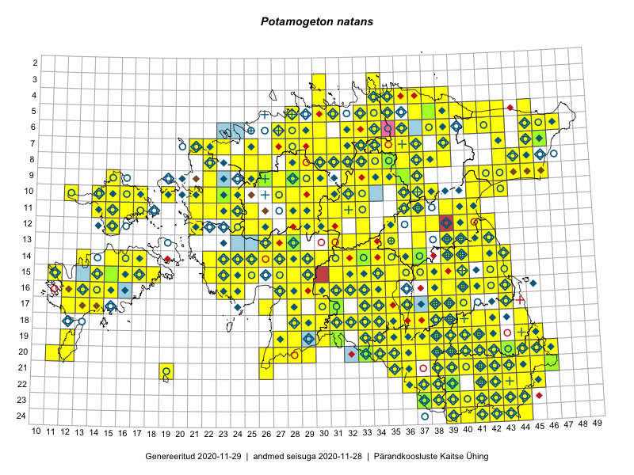

Potamogeton natans — ujuv penikeel
Potamogetonaceae :: Potamogeton natans L. (2188); Potamogeton natans f. prolixus W.D.J.Koch (4)

Kaart põhineb 2321 kirjel:
vaatlusi 2000
herbaareksemplare 192
PKÜ kirjeid1 14
ELFi kirjeid2 109
LVA kirjeid3 6
Taime kaasaegsed ja ajaloolised leiukohad asuvad 406 ruudus.
Tingmärgid ja leidudega ruutude arvud periooditi uues (u) ja 2005 andmestikus (v)
| █ | vahemik | u4 | v5 |
|---|---|---|---|
| █ | 2006–2020 | 359 | – |
| ◆/◇ | 1971–2005 | 223 | 257 |
| ○ | 1921–1970 | 181 | 45 |
| + | kuni 1920 | 29 | 1 |
| × | hävinud | – | 0 |
| ? | kaheldav | – | 0 |
| Ruut | Leidja(d) | Leiuaeg | Kirje |
|---|---|---|---|
| 17-33 | Peedu Saar | 2020-08-21 | ruut/ala: Potamogeton natans L. |
| 08-43 | Toomas Kukk, Ott Luuk, Kersti Tambets, Sten Mander, Kristine Fenske | 2020-08-18 | ruut/ala: Potamogeton natans L. |
| 17-38 | Helle Mäemets | 2020-08-18 | punkt: Potamogeton natans L. |
| 17-39 | Silvia Pihu | 2020-08-16 | ELF: 706 |
| 16-35 | Peedu Saar | 2020-08-10 | ruut/ala: Potamogeton natans L. |
| 16-35 | Peedu Saar | 2020-08-10 | PKÜ: 20580 |
| 10-23 | Peedu Saar | 2020-08-05 | TAA0153517: Potamogeton natans L. |
| 15-36 | Art Villem Adojaan | 2020-08-02 | punkt: Potamogeton natans L. |
| 22-42 | Helle Mäemets, Kadi Palmik-Das | 2020-07-20 | punkt: Potamogeton natans L. |
| 22-42 | Helle Mäemets, Kadi Palmik-Das | 2020-07-20 | punkt: Potamogeton natans L. |
| 12-39 | Enn Selgis | 2020-07-17 | LVA: 690387958 |
| 07-36 | Jaan Spiegel | 2020-07-15 | ELF: 24895 |
| 13-39 | Ulvi Selgis, Enn Selgis | 2020-07-13 | punkt: Potamogeton natans L. |
| 20-46 | Toomas Kukk, Eerik Leibak | 2020-07-07 | ruut/ala: Potamogeton natans L. |
| 20-46 | Toomas Kukk, Eerik Leibak | 2020-07-07 | ELF: 585 |
| 19-39 | Jaanus Paal, Taimi Paal | 2020-07-02 | ELF: 9979 |
| 04-36 | Tiina Reintal | 2020-06-07 | punkt: Potamogeton natans L. |
| 18-41 | Kadri Sohar | 2020-06-06 | punkt: Potamogeton natans L. |
| 15-14 | Peedu Saar, Toomas Kukk | 2019-09-27 | ruut/ala: Potamogeton natans L. |
| 20-45 | Peedu Saar, Ott Luuk | 2019-09-24 | ruut/ala: Potamogeton natans L. |
| 20-45 | Peedu Saar, Ott Luuk | 2019-09-24 | ruut/ala: Potamogeton natans L. |
| 14-25 | Maili Lehtpuu | 2019-09-21 | punkt: Potamogeton natans L. |
| 10-22 | Toomas Kukk, Peedu Saar | 2019-09-19 | ruut/ala: Potamogeton natans L. |
| 10-21 | Ott Luuk | 2019-09-19 | ruut/ala: Potamogeton natans L. |
| 08-45 | Toomas Kukk, Thea Kull | 2019-09-12 | ruut/ala: Potamogeton natans L. |
| 08-44 | Toomas Kukk, Thea Kull | 2019-09-12 | punkt: Potamogeton natans L. |
| 08-44 | Thea Kull, Toomas Kukk | 2019-09-12 | ruut/ala: Potamogeton natans L. |
| 07-45 | Thea Kull, Toomas Kukk | 2019-09-12 | ruut/ala: Potamogeton natans L. |
| 06-45 | Thea Kull, Toomas Kukk | 2019-09-11 | punkt: Potamogeton natans L. |
| 09-41 | Peedu Saar, Timo Luhamäe | 2019-09-10 | ruut/ala: Potamogeton natans L. |
| 08-43 | Ott Luuk, Meeli Mesipuu | 2019-09-10 | ruut/ala: Potamogeton natans L. |
| 16-33 | Maili Lehtpuu | 2019-09-10 | punkt: Potamogeton natans L. |
| 08-24 | Peedu Saar, Ott Luuk | 2019-09-05 | ruut/ala: Potamogeton natans L. |
| 08-25 | Ott Luuk, Peedu Saar | 2019-09-05 | ruut/ala: Potamogeton natans L. |
| 09-22 | Ott Luuk | 2019-09-03–2019-09-04 | ruut/ala: Potamogeton natans L. |
| 20-45 | Ott Luuk | 2019-09-01 | ruut/ala: Potamogeton natans L. |
| 08-30 | Ott Luuk, Toivo Sepp | 2019-08-30 | ruut/ala: Potamogeton natans L. |
| 13-31 | Ott Luuk, Eerik Leibak | 2019-08-29 | ruut/ala: Potamogeton natans L. |
| 16-30 | Peedu Saar, Martin Tikk, Toomas Kukk | 2019-08-28 | ruut/ala: Potamogeton natans L. |
| 14-31 | Ott Luuk, Eerik Leibak | 2019-08-28 | ruut/ala: Potamogeton natans L. |
| 14-30 | Ott Luuk, Eerik Leibak | 2019-08-28 | ruut/ala: Potamogeton natans L. |
| 17-33 | Toomas Kukk, Peedu Saar, Martin Tikk | 2019-08-27 | ruut/ala: Potamogeton natans L. |
| 17-33 | Peedu Saar, Martin Tikk, Toomas Kukk | 2019-08-27 | punkt: Potamogeton natans L. |
| 17-35 | Peedu Saar, Martin Tikk, Toomas Kukk | 2019-08-27 | ruut/ala: Potamogeton natans L. |
| 17-35 | Peedu Saar, Martin Tikk, Toomas Kukk | 2019-08-27 | ruut/ala: Potamogeton natans L. |
| 12-35 | Ott Luuk, Eerik Leibak | 2019-08-27 | ruut/ala: Potamogeton natans L. |
| 16-33 | Mari Reitalu, Thea Kull | 2019-08-27 | ruut/ala: Potamogeton natans L. |
| 13-28 | Maili Lehtpuu | 2019-08-22 | punkt: Potamogeton natans L. |
| 22-41 | Maili Lehtpuu | 2019-08-22 | punkt: Potamogeton natans L. |
| 07-45 | Maili Lehtpuu | 2019-08-17 | punkt: Potamogeton natans L. |
| 19-33 | Maili Lehtpuu | 2019-08-14 | punkt: Potamogeton natans L. |
| 20-33 | Maili Lehtpuu | 2019-08-14 | punkt: Potamogeton natans L. |
| 11-36 | Peedu Saar | 2019-08-10 | ruut/ala: Potamogeton natans L. |
| 07-33 | Ott Luuk, Jaak-Albert Metsoja | 2019-08-08 | ruut/ala: Potamogeton natans L. |
| 07-34 | Toomas Kukk, Rein Kalamees, Kaur Maran | 2019-08-07 | ruut/ala: Potamogeton natans L. |
| 06-36 | Peedu Saar, Timo Luhamäe | 2019-08-07 | punkt: Potamogeton natans L. |
| 05-35 | Peedu Saar, Timo Luhamäe | 2019-08-07 | ruut/ala: Potamogeton natans L. |
| 03-34 | Rein Kalamees, Toomas Kukk | 2019-08-06 | ruut/ala: Potamogeton natans L. |
| 04-39 | Ott Luuk, Jaak-Albert Metsoja | 2019-08-06 | ruut/ala: Potamogeton natans L. |
| 06-32 | Toomas Kukk, Rein Kalamees | 2019-08-05 | ruut/ala: Potamogeton natans L. |
| 08-36 | Ott Luuk, Jaak-Albert Metsoja | 2019-08-05 | ruut/ala: Potamogeton natans L. |
| 07-36 | Ott Luuk, Jaak-Albert Metsoja | 2019-08-05 | ruut/ala: Potamogeton natans L. |
| 20-39 | Peedu Saar, Toomas Kukk | 2019-08-01 | ruut/ala: Potamogeton natans L. |
| 22-42 | Toomas Kukk, Peedu Saar | 2019-07-31 | ruut/ala: Potamogeton natans L. |
| 21-42 | Peedu Saar, Toomas Kukk | 2019-07-31 | punkt: Potamogeton natans L. |
| 10-32 | Ott Luuk | 2019-07-31 | ruut/ala: Potamogeton natans L. |
| 06-34 | Helle Mäemets, Kadi Palmik-Das | 2019-07-31 | punkt: Potamogeton natans L. |
| 12-29 | Toivo Sepp | 2019-07-30 | ELF: 1400 |
| 12-38 | Peedu Saar | 2019-07-30 | ruut/ala: Potamogeton natans L. |
| 08-22 | Helle Mäemets, Kadi Palmik-Das | 2019-07-30 | punkt: Potamogeton natans L. |
| 18-39 | Thea Kull | 2019-07-25 | ruut/ala: Potamogeton natans L. |
| 07-21 | Peedu Saar | 2019-07-25 | ruut/ala: Potamogeton natans L. |
| 08-22 | Peedu Saar | 2019-07-24 | ELF: 24815 |
| 08-22 | Peedu Saar | 2019-07-23 | ruut/ala: Potamogeton natans L. |
| 17-33 | Maili Lehtpuu | 2019-07-23 | punkt: Potamogeton natans L. |
| 18-34 | Maili Lehtpuu | 2019-07-18 | punkt: Potamogeton natans L. |
| 17-38 | Maili Lehtpuu | 2019-07-17 | punkt: Potamogeton natans L. |
| 07-45 | Helle Mäemets, Kadi Palmik-Das | 2019-07-17 | punkt: Potamogeton natans L. |
| 06-45 | Helle Mäemets, Kadi Palmik-Das | 2019-07-17 | punkt: Potamogeton natans L. |
| 07-45 | Helle Mäemets, Kadi Palmik-Das | 2019-07-17 | punkt: Potamogeton natans L. |
| 19-35 | Ott Luuk, Peedu Saar | 2019-07-16 | ruut/ala: Potamogeton natans L. |
| 17-38 | Peedu Saar, Ott Luuk | 2019-07-15 | ruut/ala: Potamogeton natans L. |
| 22-42 | Helle Mäemets, Kadi Palmik | 2019-07-15 | punkt: Potamogeton natans L. |
| 23-43 | Helle Mäemets, Kadi Palmik-Das | 2019-07-14 | punkt: Potamogeton natans L. |
| 23-43 | Helle Mäemets, Kadi Palmik-Das | 2019-07-14 | punkt: Potamogeton natans L. |
| 23-41 | Toomas Kukk, Indrek Tammekänd | 2019-07-12 | ruut/ala: Potamogeton natans L. |
| 23-42 | Toomas Kukk, Indrek Tammekänd | 2019-07-12 | ruut/ala: Potamogeton natans L. |
| 23-38 | Peedu Saar, Timo Luhamäe | 2019-07-12 | ruut/ala: Potamogeton natans L. |
| 21-43 | Ott Luuk, Tiit Hallikma | 2019-07-12 | ruut/ala: Potamogeton natans L. |
| 22-41 | Toomas Kukk, Indrek Tammekänd | 2019-07-11 | ruut/ala: Potamogeton natans L. |
| 23-37 | Peedu Saar, Timo Luhamäe | 2019-07-11 | ruut/ala: Potamogeton natans L. |
| 23-44 | Ott Luuk, Tiit Hallikma | 2019-07-11 | ruut/ala: Potamogeton natans L. |
| 24-44 | Ott Luuk, Tiit Hallikma | 2019-07-11 | ruut/ala: Potamogeton natans L. |
| 24-43 | Ott Luuk, Tiit Hallikma | 2019-07-11 | ruut/ala: Potamogeton natans L. |
| 23-43 | Ott Luuk, Tiit Hallikma | 2019-07-11 | ruut/ala: Potamogeton natans L. |
| 20-42 | Helle Mäemets, Kadi Palmik-Das | 2019-07-11 | punkt: Potamogeton natans L. |
| 20-42 | Helle Mäemets, Kadi Palmik-Das | 2019-07-11 | punkt: Potamogeton natans L. |
| 21-40 | Toomas Kukk, Indrek Tammekänd | 2019-07-10 | ruut/ala: Potamogeton natans L. |
| 21-41 | Toomas Kukk, Indrek Tammekänd | 2019-07-10 | ruut/ala: Potamogeton natans L. |
| 21-42 | Toomas Kukk, Indrek Tammekänd | 2019-07-10 | ruut/ala: Potamogeton natans L. |
| 19-39 | Thea Kull | 2019-07-10 | ruut/ala: Potamogeton natans L. |
| 22-38 | Peedu Saar, Timo Luhamäe | 2019-07-10 | ruut/ala: Potamogeton natans L. |
| 22-39 | Peedu Saar, Timo Luhamäe | 2019-07-10 | ruut/ala: Potamogeton natans L. |
| 20-45 | Ott Luuk, Tiit Hallikma | 2019-07-10 | ruut/ala: Potamogeton natans L. |
| 19-40 | Helle Mäemets, Kadi Palmik-Das, Aat Sarv | 2019-07-10 | punkt: Potamogeton natans L. |
| 19-40 | Helle Mäemets, Kadi Palmik-Das | 2019-07-10 | punkt: Potamogeton natans L. |
| 19-41 | Helle Mäemets, Kadi Palmik-Das | 2019-07-10 | punkt: Potamogeton natans L. |
| 20-41 | Toomas Kukk, Indrek Tammekänd | 2019-07-09 | ruut/ala: Potamogeton natans L. |
| 20-43 | Ott Luuk, Tiit Hallikma | 2019-07-09 | ruut/ala: Potamogeton natans L. |
| 20-44 | Ott Luuk, Tiit Hallikma | 2019-07-09 | ruut/ala: Potamogeton natans L. |
| 20-43 | Ott Luuk, Tiit Hallikma | 2019-07-09 | TAA0151627: Potamogeton natans L. |
| 09-37 | Maili Lehtpuu | 2019-07-09 | punkt: Potamogeton natans L. |
| 15-15 | Toomas Kukk | 2019-07-05 | TAA0148957: Potamogeton natans L. |
| 10-15 | Toomas Kukk | 2019-07-03 | ruut/ala: Potamogeton natans L. |
| 11-15 | Toomas Kukk | 2019-07-02 | ruut/ala: Potamogeton natans L. |
| 10-17 | Toomas Kukk, Eerik Leibak | 2019-07-01 | ELF: 1977 |
| 10-17 | Eerik Leibak, Toomas Kukk | 2019-07-01 | ruut/ala: Potamogeton natans L. |
| 10-19 | Helle Mäemets, Kaire Torn | 2019-06-29 | ruut/ala: Potamogeton natans L. |
| 07-21 | Helle Mäemets, Kaire Torn | 2019-06-25 | punkt: Potamogeton natans L. |
| 07-22 | Helle Mäemets, Kaire Torn | 2019-06-25 | punkt: Potamogeton natans L. |
| 14-22 | Ott Luuk, Toomas Kukk, Peedu Saar, Tiit Hallikma | 2019-06-18 | punkt: Potamogeton natans L. |
| 15-42 | Peedu Saar | 2019-06-15 | ruut/ala: Potamogeton natans L. |
| 16-40 | Thea Kull | 2019-06-14 | ruut/ala: Potamogeton natans L. |
| 16-40 | Margit Hirv, Veljo Runnel | 2019-06-14 | punkt: Potamogeton natans L. |
| 16-40 | Aivi Kasik, Martin Tikk, Weralda Lakeman, Thea Kull | 2019-06-14 | punkt: Potamogeton natans L. |
| 10-28 | Aat Sarv, Ott Luuk | 2019-06-14 | punkt: Potamogeton natans L. |
| 10-16 | Toomas Kukk, Indrek Tammekänd | 2019-06-03 | ruut/ala: Potamogeton natans L. |
| 16-28 | Indrek Tammekänd | 2019-05-29–2019-08-23 | ruut/ala: Potamogeton natans L. |
| 06-34 | Helle Mäemets, Kadi Palmik-Das | 2018-09-29 | punkt: Potamogeton natans L. |
| 19-38 | Ott Luuk, Meeli Mesipuu | 2018-09-20 | ruut/ala: Potamogeton natans L. |
| 06-39 | Peedu Saar, Toomas Kukk | 2018-09-03 | punkt: Potamogeton natans L. |
| 11-37 | Maili Lehtpuu | 2018-08-31 | punkt: Potamogeton natans L. |
| 08-22 | Maili Lehtpuu | 2018-08-30 | punkt: Potamogeton natans L. |
| 15-23 | Helle Mäemets, Kadi Palmik | 2018-08-30 | punkt: Potamogeton natans L. |
| 10-32 | Ott Luuk | 2018-08-29 | ruut/ala: Potamogeton natans L. |
| 11-15 | Maili Lehtpuu | 2018-08-29 | punkt: Potamogeton natans L. |
| 15-23 | Helle Mäemets, Kadi Palmik-Das | 2018-08-29 | punkt: Potamogeton natans L. |
| 19-44 | Toomas Kukk, Eerik Leibak, Timo Luhamäe | 2018-08-27 | ruut/ala: Potamogeton natans L. |
| 11-37 | Helle Mäemets, Kadi Palmik-Das | 2018-08-12 | punkt: Potamogeton natans L. |
| 11-30 | Toomas Kukk, Tiit Hallikma | 2018-08-10 | punkt: Potamogeton natans L. |
| 13-28 | Indrek Tammekänd | 2018-08-02 | TAA0147812: Potamogeton natans L. |
| 16-33 | Peedu Saar | 2018-08-01 | ruut/ala: Potamogeton natans L. |
| 17-33 | Peedu Saar | 2018-08-01 | ruut/ala: Potamogeton natans L. |
| 14-25 | Indrek Tammekänd | 2018-07-30 | ELF: 24581 |
| 19-38 | Maili Lehtpuu | 2018-07-27 | punkt: Potamogeton natans L. |
| 22-38 | Maili Lehtpuu | 2018-07-27 | punkt: Potamogeton natans L. |
| 22-39 | Maili Lehtpuu | 2018-07-27 | punkt: Potamogeton natans L. |
| 10-37 | Kätlin Aun | 2018-07-23 | LVA: 1051954040 |
| 15-43 | Peedu Saar | 2018-07-20 | ruut/ala: Potamogeton natans L. |
| 23-42 | Toomas Kukk, Eerik Leibak | 2018-07-18 | ruut/ala: Potamogeton natans L. |
| 22-42 | Toomas Kukk | 2018-07-18 | ruut/ala: Potamogeton natans L. |
| 22-42 | Toomas Kukk | 2018-07-18 | ELF: 2082 |
| 22-42;23-42 | Toomas Kukk | 2018-07-18 | ELF: 14463 |
| 07-46 | Peedu Saar | 2018-07-18 | ruut/ala: Potamogeton natans L. |
| 15-14 | Maili Lehtpuu | 2018-07-18 | punkt: Potamogeton natans L. |
| 16-13 | Maili Lehtpuu | 2018-07-18 | punkt: Potamogeton natans L. |
| 11-37 | Helle Mäemets, Kadi Palmik | 2018-07-11 | ruut/ala: Potamogeton natans L. |
| 18-38 | Helle Mäemets, Kadi Palmik-Das | 2018-07-05 | punkt: Potamogeton natans L. |
| 18-38 | Helle Mäemets, Kadi Palmik-Das | 2018-07-05 | punkt: Potamogeton natans L. |
| 18-38 | Helle Mäemets, Kadi Palmik | 2018-07-05 | punkt: Potamogeton natans L. |
| 18-38 | Helle Mäemets, Kadi Palmik | 2018-07-05 | punkt: Potamogeton natans L. |
| 13-40 | Maili Lehtpuu | 2018-07-03 | punkt: Potamogeton natans L. |
| 09-27 | Mari Reitalu, Sirje Azarov | 2018-07-01 | ruut/ala: Potamogeton natans L. |
| 23-38 | Eerik Leibak | 2018-06-28 | ELF: 2369 |
| 05-40 | Heete Ausmeel, Triin Edovald, Evelin Laanest, Kristi Oja, Tõnu Ploompuu | 2018-06-27 | LVA: -2123641180 |
| 18-29 | Värdi Soomann | 2018-06-17 | LVA: 1970922042 |
| 19-38 | Margit Turb | 2018-06-15 | punkt: Potamogeton natans L. |
| 16-31 | Indrek Tammekänd | 2018-06-04–2018-06-05 | ruut/ala: Potamogeton natans L. |
| 17-43 | Peedu Saar, Thea Kull, Malle Leht | 2018-05-28–2018-05-30 | ruut/ala: Potamogeton natans L. |
| 16-14 | Toomas Kukk, Ilmar Uibopuu, Mari Reitalu | 2018-05-28 | ruut/ala: Potamogeton natans L. |
| 16-14 | Toomas Kukk, Ilmar Uibopuu, Mari Reitalu | 2018-05-28 | punkt: Potamogeton natans L. |
| 16-15 | Toomas Kukk, Ilmar Uibopuu, Mari Reitalu | 2018-05-27 | ruut/ala: Potamogeton natans L. |
| 07-37 | Toomas Kukk, Peedu Saar | 2017-09-28 | ruut/ala: Potamogeton natans L. |
| 04-38 | Peedu Saar, Toomas Kukk | 2017-09-28 | ruut/ala: Potamogeton natans L. |
| 06-36 | Peedu Saar, Toomas Kukk | 2017-09-27 | ruut/ala: Potamogeton natans L. |
| 09-35 | Peedu Saar, Toomas Kukk | 2017-09-27 | ruut/ala: Potamogeton natans L. |
| 16-27 | Indrek Tammekänd | 2017-09-21 | ruut/ala: Potamogeton natans L. |
| 11-29 | Ott Luuk, Peedu Saar | 2017-09-15 | ruut/ala: Potamogeton natans L. |
| 10-14 | Peedu Saar, Ott Luuk | 2017-09-14 | ruut/ala: Potamogeton natans L. |
| 10-15 | Ott Luuk, Peedu Saar | 2017-09-14 | ruut/ala: Potamogeton natans L. |
| 12-15 | Toomas Kukk, Indrek Tammekänd | 2017-09-13 | ruut/ala: Potamogeton natans L. |
| 11-15 | Peedu Saar, Ott Luuk | 2017-09-13 | ruut/ala: Potamogeton natans L. |
| 11-14 | Ott Luuk, Peedu Saar | 2017-09-13 | ruut/ala: Potamogeton natans L. |
| 11-16 | Ott Luuk, Peedu Saar | 2017-09-13 | ruut/ala: Potamogeton natans L. |
| 23-44 | Maili Lehtpuu | 2017-09-12 | punkt: Potamogeton natans L. |
| 11-17 | Toomas Kukk, Indrek Tammekänd | 2017-09-11 | ruut/ala: Potamogeton natans L. |
| 10-16 | Peedu Saar, Ott Luuk | 2017-09-11 | ruut/ala: Potamogeton natans L. |
| 10-17 | Ott Luuk, Peedu Saar | 2017-09-11 | ruut/ala: Potamogeton natans L. |
| 14-26 | Indrek Tammekänd | 2017-09-04 | ruut/ala: Potamogeton natans L. |
| 06-34 | Rein Kalamees | 2017-08-31 | ruut/ala: Potamogeton natans L. |
| 18-28 | Toomas Kukk, Ott Luuk, Kersti Tambets, Timo Luhamäe, Sten Mander | 2017-08-30 | ruut/ala: Potamogeton natans L. |
| 20-29 | Toomas Kukk, Ott Luuk, Kersti Tambets, Timo Luhamäe, Sten Mander | 2017-08-30 | ruut/ala: Potamogeton natans L. |
| 17-26 | Toomas Kukk, Ott Luuk, Kersti Tambets, Timo Luhamäe, Sten Mander | 2017-08-30 | ruut/ala: Potamogeton natans L. |
| 17-31 | Toomas Kukk | 2017-08-29 | TAA0141835: Potamogeton natans L. |
| 17-31 | Toomas Kukk | 2017-08-29 | TAA0141836: Potamogeton natans L. |
| 17-31 | Toomas Kukk | 2017-08-29 | TAA0141840: Potamogeton natans L. |
| 17-31 | Toomas Kukk | 2017-08-29 | TAA0141841: Potamogeton natans L. |
| 17-31 | Ott Luuk, Toomas Kukk, Sten Mander, Kersti Tambets, Timo Luhamäe | 2017-08-29 | ruut/ala: Potamogeton natans L. |
| 11-40 | Peedu Saar, Ott Luuk | 2017-08-23 | ruut/ala: Potamogeton natans L. |
| 12-41 | Ott Luuk, Peedu Saar | 2017-08-23 | ruut/ala: Potamogeton natans L. |
| 24-43 | Maili Lehtpuu | 2017-08-17 | punkt: Potamogeton natans L. |
| 09-15 | Helle Mäemets, Maila Moor | 2017-08-17 | punkt: Potamogeton natans L. |
| 11-15 | Helle Mäemets, Maila Moor | 2017-08-17 | punkt: Potamogeton natans L. |
| 17-38 | Maili Lehtpuu | 2017-08-16 | punkt: Potamogeton natans L. |
| 14-36 | Indrek Tammekänd | 2017-08-16 | ruut/ala: Potamogeton natans L. |
| 11-15 | Helle Mäemets, Maila Moor | 2017-08-15 | punkt: Potamogeton natans L. |
| 10-14 | Helle Mäemets, Maila Moor | 2017-08-14 | punkt: Potamogeton natans L. |
| 10-14 | Helle Mäemets, Maila Moor | 2017-08-14 | punkt: Potamogeton natans L. |
| 15-28 | Peedu Saar, Timo Luhamäe | 2017-08-11 | ruut/ala: Potamogeton natans L. |
| 14-28 | Ott Luuk, Indrek Tammekänd | 2017-08-11 | ruut/ala: Potamogeton natans L. |
| 14-29 | Ilmar Uibopuu, Toomas Kukk | 2017-08-11 | ruut/ala: Potamogeton natans L. |
| 15-29 | Ilmar Uibopuu, Toomas Kukk | 2017-08-11 | ruut/ala: Potamogeton natans L. |
| 05-35 | Tõnu Feldmann, Katrit Karus | 2017-08-10 | ruut/ala: Potamogeton natans L. |
| 11-25 | Toomas Kukk, Eerik Leibak | 2017-08-10 | ruut/ala: Potamogeton natans L. |
| 07-25 | Mari Reitalu, Indrek Tammekänd | 2017-08-10 | ruut/ala: Potamogeton natans L. |
| 04-36 | Katrit Karus, Tõnu Feldmann | 2017-08-10 | ruut/ala: Potamogeton natans L. |
| 05-35 | Katrit Karus, Tõnu Feldmann | 2017-08-10 | ruut/ala: Potamogeton natans L. |
| 04-37 | Katrit Karus, Tõnu Feldmann | 2017-08-10 | ruut/ala: Potamogeton natans L. |
| 05-34 | Katrit Karus, Tõnu Feldmann | 2017-08-10 | ruut/ala: Potamogeton natans L. |
| 11-21 | Ilmar Uibopuu, Ott Luuk | 2017-08-10 | ruut/ala: Potamogeton natans L. |
| 11-24 | Eerik Leibak, Toomas Kukk | 2017-08-10 | ruut/ala: Potamogeton natans L. |
| 12-24 | Peedu Saar, Timo Luhamäe | 2017-08-09 | ruut/ala: Potamogeton natans L. |
| 12-25 | Peedu Saar, Timo Luhamäe | 2017-08-09 | ruut/ala: Potamogeton natans L. |
| 08-29 | Ott Luuk, Thea Kull | 2017-08-09 | ruut/ala: Potamogeton natans L. |
| 05-41 | Katrit Karus, Tõnu Feldmann | 2017-08-09 | ruut/ala: Potamogeton natans L. |
| 05-45 | Katrit Karus, Tõnu Feldmann | 2017-08-09 | ruut/ala: Potamogeton natans L. |
| 05-43 | Katrit Karus, Tõnu Feldmann | 2017-08-09 | ruut/ala: Potamogeton natans L. |
| 05-41 | Katrit Karus, Tõnu Feldmann | 2017-08-09 | ruut/ala: Potamogeton natans L. |
| 06-46 | Katrit Karus, Tõnu Feldmann | 2017-08-09 | ruut/ala: Potamogeton natans L. |
| 08-26 | Toomas Kukk, Ilmar Uibopuu, Kadri Kuusksalu | 2017-08-08 | ruut/ala: Potamogeton natans L. |
| 10-28 | Thea Kull, Ott Luuk | 2017-08-08 | ruut/ala: Potamogeton natans L. |
| 07-28 | Peedu Saar, Timo Luhamäe | 2017-08-08 | ruut/ala: Potamogeton natans L. |
| 07-27 | Peedu Saar, Timo Luhamäe | 2017-08-08 | ruut/ala: Potamogeton natans L. |
| 11-28 | Ott Luuk, Thea Kull | 2017-08-08 | ruut/ala: Potamogeton natans L. |
| 09-26 | Meeli Mesipuu, Indrek Tammekänd | 2017-08-08 | ruut/ala: Potamogeton natans L. |
| 09-26 | Meeli Mesipuu, Indrek Tammekänd | 2017-08-08 | TAA0145025: Potamogeton natans L. |
| 13-33 | Toomas Kukk, Ilmar Uibopuu | 2017-08-07 | ruut/ala: Potamogeton natans L. |
| 12-33 | Thea Kull, Ott Luuk | 2017-08-07 | ruut/ala: Potamogeton natans L. |
| 14-34 | Peedu Saar, Timo Luhamäe | 2017-08-07 | ruut/ala: Potamogeton natans L. |
| 08-28 | Helle Mäemets, Kadi Palmik-Das | 2017-08-03 | punkt: Potamogeton natans L. |
| 08-31 | Helle Mäemets, Kadi Palmik | 2017-08-03 | ruut/ala: Potamogeton natans L. |
| 08-28 | Helle Mäemets, Kadi Palmik | 2017-08-03 | ruut/ala: Potamogeton natans L. |
| 08-31 | Helle Mäemets, Kadi Palmik | 2017-08-03 | punkt: Potamogeton natans L. |
| 14-41 | Helle Mäemets, Kadi Palmik-Das | 2017-08-02 | punkt: Potamogeton natans L. |
| 14-41 | Helle Mäemets, Kadi Palmik | 2017-08-02 | ruut/ala: Potamogeton natans L. |
| 19-44 | Helle Mäemets, Kadi Palmik | 2017-08-02 | ruut/ala: Potamogeton natans L. |
| 14-41 | Helle Mäemets | 2017-08-02 | ruut/ala: Potamogeton natans L. |
| 20-39 | Ilmar Uibopuu | 2017-08-01 | ruut/ala: Potamogeton natans L. |
| 22-44 | Helle Mäemets, Kadi Palmik-Das | 2017-08-01 | punkt: Potamogeton natans L. |
| 22-44 | Helle Mäemets, Kadi Palmik | 2017-08-01 | ruut/ala: Potamogeton natans L. |
| 22-43 | Helle Mäemets, Kadi Palmik | 2017-08-01 | ruut/ala: Potamogeton natans L. |
| 22-43 | Helle Mäemets, Kadi Palmik | 2017-08-01 | ruut/ala: Potamogeton natans L. |
| 22-43 | Helle Mäemets, Kadi Palmik | 2017-08-01 | punkt: Potamogeton natans L. |
| 22-43 | Helle Mäemets, Kadi Palmik | 2017-08-01 | punkt: Potamogeton natans L. |
| 08-22 | Toomas Kukk, Ilmar Uibopuu | 2017-07-29 | ruut/ala: Potamogeton natans L. |
| 07-21 | Toomas Kukk, Ilmar Uibopuu | 2017-07-28 | ruut/ala: Potamogeton natans L. |
| 21-36 | Peedu Saar, Ott Luuk | 2017-07-28 | ruut/ala: Potamogeton natans L. |
| 22-36 | Ott Luuk, Peedu Saar | 2017-07-28 | ruut/ala: Potamogeton natans L. |
| 23-39 | Peedu Saar, Ott Luuk | 2017-07-27 | ruut/ala: Potamogeton natans L. |
| 22-39 | Ott Luuk, Peedu Saar | 2017-07-27 | ruut/ala: Potamogeton natans L. |
| 16-23 | unknown | 2017-07-25 | punkt: Potamogeton natans L. |
| 19-38 | Peedu Saar, Ott Luuk | 2017-07-25 | ruut/ala: Potamogeton natans L. |
| 20-38 | Peedu Saar, Ott Luuk | 2017-07-25 | punkt: Potamogeton natans L. |
| 20-38 | Ott Luuk, Peedu Saar | 2017-07-25 | ruut/ala: Potamogeton natans L. |
| 24-42 | Maili Lehtpuu | 2017-07-23 | punkt: Potamogeton natans L. |
| 17-26 | Indrek Tammekänd | 2017-07-23 | ruut/ala: Potamogeton natans L. |
| 06-33 | Peedu Saar, Ott Luuk | 2017-07-21 | punkt: Potamogeton natans L. |
| 07-33 | Peedu Saar, Ott Luuk | 2017-07-21 | punkt: Potamogeton natans L. |
| 06-33 | Ott Luuk, Peedu Saar | 2017-07-21 | ruut/ala: Potamogeton natans L. |
| 08-38 | Ott Luuk, Peedu Saar | 2017-07-18 | ruut/ala: Potamogeton natans L. |
| 08-26 | Helle Mäemets, Kadi Palmik-Das | 2017-07-16 | punkt: Potamogeton natans L. |
| 09-25 | Helle Mäemets, Kadi Palmik | 2017-07-16 | ruut/ala: Potamogeton natans L. |
| 08-25 | Helle Mäemets, Kadi Palmik | 2017-07-16 | ruut/ala: Potamogeton natans L. |
| 08-26 | Helle Mäemets, Kadi Palmik | 2017-07-16 | ruut/ala: Potamogeton natans L. |
| 08-26 | Helle Mäemets, Kadi Palmik | 2017-07-16 | ruut/ala: Potamogeton natans L. |
| 08-26 | Helle Mäemets, Kadi Palmik | 2017-07-16 | punkt: Potamogeton natans L. |
| 07-22 | Helle Mäemets, Kadi Palmik-Das | 2017-07-15 | punkt: Potamogeton natans L. |
| 07-21 | Helle Mäemets, Kadi Palmik | 2017-07-15 | ruut/ala: Potamogeton natans L. |
| 07-22 | Helle Mäemets, Kadi Palmik | 2017-07-15 | ruut/ala: Potamogeton natans L. |
| 07-21 | Helle Mäemets, Kadi Palmik | 2017-07-15 | ruut/ala: Potamogeton natans L. |
| 07-22 | Helle Mäemets, Kadi Palmik | 2017-07-15 | ruut/ala: Potamogeton natans L. |
| 07-21 | Helle Mäemets, Kadi Palmik | 2017-07-15 | punkt: Potamogeton natans L. |
| 07-22 | Helle Mäemets, Kadi Palmik | 2017-07-15 | punkt: Potamogeton natans L. |
| 07-21 | Helle Mäemets, Kadi Palmik | 2017-07-15 | punkt: Potamogeton natans L. |
| 12-35 | Helle Mäemets, Kadi Palmik | 2017-07-14 | ruut/ala: Potamogeton natans L. |
| 11-30 | Helle Mäemets, Kadi Palmik | 2017-07-14 | ruut/ala: Potamogeton natans L. |
| 08-25 | Helle Mäemets, Kadi Palmik | 2017-07-14 | ruut/ala: Potamogeton natans L. |
| 09-26 | Helle Mäemets, Kadi Palmik | 2017-07-14 | ruut/ala: Potamogeton natans L. |
| 12-31 | Helle Mäemets, Kadi Palmik | 2017-07-14 | punkt: Potamogeton natans L. |
| 11-30 | Helle Mäemets, Kadi Palmik | 2017-07-14 | punkt: Potamogeton natans L. |
| 08-25 | Helle Mäemets, Kadi Palmik | 2017-07-14 | punkt: Potamogeton natans L. |
| 19-39 | Maili Lehtpuu | 2017-07-12 | punkt: Potamogeton natans L. |
| 23-43 | Maili Lehtpuu | 2017-07-12 | punkt: Potamogeton natans L. |
| 16-40 | Peedu Saar | 2017-07-10–2017-07-11 | ruut/ala: Potamogeton natans L. |
| 22-41 | Maili Lehtpuu | 2017-07-10 | punkt: Potamogeton natans L. |
| 18-37 | Helle Mäemets, Kadi Palmik | 2017-07-10 | ruut/ala: Potamogeton natans L. |
| 18-37 | Helle Mäemets, Kadi Palmik | 2017-07-10 | punkt: Potamogeton natans L. |
| 07-39 | Tõnu Feldmann, Katrit Karus | 2017-07-07 | ruut/ala: Potamogeton natans L. |
| 07-39 | Tõnu Feldmann, Katrit Karus | 2017-07-07 | ruut/ala: Potamogeton natans L. |
| 08-34 | Tõnu Feldmann, Katrit Karus | 2017-07-07 | ruut/ala: Potamogeton natans L. |
| 18-39 | Maili Lehtpuu | 2017-07-07 | punkt: Potamogeton natans L. |
| 23-43 | Maili Lehtpuu | 2017-07-07 | punkt: Potamogeton natans L. |
| 08-34 | Katrit Karus, Tõnu Feldmann | 2017-07-07 | ruut/ala: Potamogeton natans L. |
| 21-38 | Helle Mäemets, Kadi Palmik | 2017-07-07 | ruut/ala: Potamogeton natans L. |
| 21-38 | Helle Mäemets, Kadi Palmik | 2017-07-07 | ruut/ala: Potamogeton natans L. |
| 19-37 | Helle Mäemets, Kadi Palmik | 2017-07-07 | ruut/ala: Potamogeton natans L. |
| 19-37 | Helle Mäemets, Kadi Palmik | 2017-07-07 | ruut/ala: Potamogeton natans L. |
| 21-38 | Helle Mäemets, Kadi Palmik | 2017-07-07 | punkt: Potamogeton natans L. |
| 21-38 | Helle Mäemets, Kadi Palmik | 2017-07-07 | punkt: Potamogeton natans L. |
| 08-45 | Tõnu Feldmann, Katrit Karus | 2017-07-06 | ruut/ala: Potamogeton natans L. |
| 08-45 | Tõnu Feldmann, Katrit Karus | 2017-07-06 | ruut/ala: Potamogeton natans L. |
| 06-45 | Tõnu Feldmann, Katrit Karus | 2017-07-06 | ruut/ala: Potamogeton natans L. |
| 10-32 | Tõnu Feldmann, Katrit Karus | 2017-07-05 | ruut/ala: Potamogeton natans L. |
| 08-29 | Tõnu Feldmann, Katrit Karus | 2017-07-05 | ruut/ala: Potamogeton natans L. |
| 08-29 | Tõnu Feldmann, Katrit Karus | 2017-07-05 | ruut/ala: Potamogeton natans L. |
| 08-33 | Tõnu Feldmann, Katrit Karus | 2017-07-05 | ruut/ala: Potamogeton natans L. |
| 10-32 | Katrit Karus, Tõnu Feldmann | 2017-07-05 | ruut/ala: Potamogeton natans L. |
| 18-29 | Indrek Tammekänd | 2017-07-05 | ruut/ala: Potamogeton natans L. |
| 17-40 | Helle Mäemets, Kadi Palmik-Das | 2017-07-05 | punkt: Potamogeton natans L. |
| 18-40 | Helle Mäemets, Kadi Palmik-Das | 2017-07-05 | punkt: Potamogeton natans L. |
| 18-40 | Helle Mäemets, Kadi Palmik-Das | 2017-07-05 | punkt: Potamogeton natans L. |
| 18-40 | Helle Mäemets, Kadi Palmik | 2017-07-05 | ruut/ala: Potamogeton natans L. |
| 18-40 | Helle Mäemets, Kadi Palmik | 2017-07-05 | ruut/ala: Potamogeton natans L. |
| 17-40 | Helle Mäemets, Kadi Palmik | 2017-07-05 | ruut/ala: Potamogeton natans L. |
| 17-40 | Helle Mäemets, Kadi Palmik | 2017-07-05 | ruut/ala: Potamogeton natans L. |
| 17-40 | Helle Mäemets, Kadi Palmik | 2017-07-05 | punkt: Potamogeton natans L. |
| 11-39 | Tõnu Feldmann, Katrit Karus | 2017-07-04 | ruut/ala: Potamogeton natans L. |
| 10-37 | Tõnu Feldmann, Katrit Karus | 2017-07-04 | ruut/ala: Potamogeton natans L. |
| 08-35 | Katrit Karus, Tõnu Feldmann | 2017-07-04 | ruut/ala: Potamogeton natans L. |
| 11-39 | Katrit Karus, Tõnu Feldmann | 2017-07-04 | ruut/ala: Potamogeton natans L. |
| 16-34 | Tõnu Feldmann, Katrit Karus | 2017-07-03 | ruut/ala: Potamogeton natans L. |
| 16-34 | Tõnu Feldmann, Katrit Karus | 2017-07-03 | punkt: Potamogeton natans L. |
| 11-33 | Tõnu Feldmann, Katrit Karus | 2017-07-03 | ruut/ala: Potamogeton natans L. |
| 14-33 | Tõnu Feldmann, Katrit Karus | 2017-07-03 | ruut/ala: Potamogeton natans L. |
| 14-33 | Tõnu Feldmann, Katrit Karus | 2017-07-03 | TAA0144442: Potamogeton natans L. |
| 14-33 | Katrit Karus, Tõnu Feldmann | 2017-07-03 | ruut/ala: Potamogeton natans L. |
| 10-33 | Katrit Karus, Tõnu Feldmann | 2017-07-03 | ruut/ala: Potamogeton natans L. |
| 18-32 | Helle Mäemets, Kadi Palmik-Das | 2017-07-03 | punkt: Potamogeton natans L. |
| 18-32 | Helle Mäemets, Kadi Palmik | 2017-07-03 | ruut/ala: Potamogeton natans L. |
| 18-33 | Helle Mäemets, Kadi Palmik | 2017-07-03 | ruut/ala: Potamogeton natans L. |
| 18-33 | Helle Mäemets, Kadi Palmik | 2017-07-03 | ruut/ala: Potamogeton natans L. |
| 18-32 | Helle Mäemets, Kadi Palmik | 2017-07-03 | ruut/ala: Potamogeton natans L. |
| 18-33 | Helle Mäemets, Kadi Palmik | 2017-07-03 | punkt: Potamogeton natans L. |
| 18-33 | Helle Mäemets, Kadi Palmik | 2017-07-03 | punkt: Potamogeton natans L. |
| 18-32 | Helle Mäemets, Kadi Palmik | 2017-07-03 | punkt: Potamogeton natans L. |
| 17-28 | Helle Mäemets, Kadi Palmik | 2017-06-28 | ruut/ala: Potamogeton natans L. |
| 18-28 | Helle Mäemets, Kadi Palmik | 2017-06-28 | ruut/ala: Potamogeton natans L. |
| 18-28 | Helle Mäemets, Kadi Palmik | 2017-06-28 | punkt: Potamogeton natans L. |
| 15-35 | Ott Luuk, Peedu Saar | 2017-06-20 | ruut/ala: Potamogeton natans L. |
| 18-30 | Helle Mäemets, Kadi Palmik | 2017-06-17 | ruut/ala: Potamogeton natans L. |
| 18-29 | Helle Mäemets, Kadi Palmik | 2017-06-17 | ruut/ala: Potamogeton natans L. |
| 18-30 | Helle Mäemets, Kadi Palmik | 2017-06-17 | ruut/ala: Potamogeton natans L. |
| 18-29 | Helle Mäemets, Kadi Palmik | 2017-06-17 | ruut/ala: Potamogeton natans L. |
| 18-29 | Helle Mäemets, Kadi Palmik | 2017-06-17 | punkt: Potamogeton natans L. |
| 18-30 | Helle Mäemets, Kadi Palmik | 2017-06-17 | punkt: Potamogeton natans L. |
| 17-38 | Ott Luuk | 2017-06-11 | ruut/ala: Potamogeton natans L. |
| 13-32 | Ott Luuk | 2017-05-27 | ruut/ala: Potamogeton natans L. |
| 13-31 | Ott Luuk | 2017-05-27 | ruut/ala: Potamogeton natans L. |
| 19-30 | Peedu Saar, Ott Luuk | 2016-10-06 | ruut/ala: Potamogeton natans L. |
| 07-32 | Peedu Saar, Ott Luuk | 2016-09-28 | ruut/ala: Potamogeton natans L. |
| 08-32 | Ott Luuk, Peedu Saar | 2016-09-28 | ruut/ala: Potamogeton natans L. |
| 09-32 | Toomas Kukk, Peedu Saar | 2016-09-16 | ruut/ala: Potamogeton natans L. |
| 05-43 | Peedu Saar, Toomas Kukk | 2016-09-13 | ruut/ala: Potamogeton natans L. |
| 07-33 | Peedu Saar, Toomas Kukk | 2016-09-13 | ruut/ala: Potamogeton natans L. |
| 07-30 | Toomas Kukk, Peedu Saar | 2016-09-09 | ruut/ala: Potamogeton natans L. |
| 08-30 | Peedu Saar, Toomas Kukk | 2016-09-09 | ruut/ala: Potamogeton natans L. |
| 09-30 | Ott Luuk, Peedu Saar | 2016-09-06–2016-09-07 | ruut/ala: Potamogeton natans L. |
| 05-38 | Toomas Kukk, Thea Kull | 2016-09-06 | TAA0136257: Potamogeton natans L. |
| 05-38 | Thea Kull, Toomas Kukk | 2016-09-06 | ruut/ala: Potamogeton natans L. |
| 14-16 | Ott Luuk, Peedu Saar | 2016-08-31 | ruut/ala: Potamogeton natans L. |
| 06-30 | Toomas Kukk, Sander Laherand | 2016-08-30 | ruut/ala: Potamogeton natans L. |
| 05-31 | Sander Laherand, Toomas Kukk | 2016-08-30 | ruut/ala: Potamogeton natans L. |
| 06-29 | Sander Laherand, Toomas Kukk | 2016-08-29 | ruut/ala: Potamogeton natans L. |
| 14-17 | Ott Luuk, Peedu Saar | 2016-08-29 | ruut/ala: Potamogeton natans L. |
| 21-41 | Maili Lehtpuu | 2016-08-29 | punkt: Potamogeton natans L. |
| 21-39 | Maili Lehtpuu | 2016-08-29 | punkt: Potamogeton natans L. |
| 15-18 | Mari Reitalu, Hannes Pehlak | 2016-08-26 | ruut/ala: Potamogeton natans L. |
| 18-38 | Ott Luuk, Thea Kull | 2016-08-23 | ruut/ala: Potamogeton natans L. |
| 23-44 | Peedu Saar, Karin Kikas | 2016-08-19 | ruut/ala: Potamogeton natans L. |
| 22-45 | Peedu Saar, Karin Kikas | 2016-08-18 | ruut/ala: Potamogeton natans L. |
| 21-44 | Peedu Saar, Karin Kikas | 2016-08-18 | ruut/ala: Potamogeton natans L. |
| 15-17 | Peedu Saar, Toomas Kukk | 2016-08-13 | ruut/ala: Potamogeton natans L. |
| 15-16 | Meeli Mesipuu, Maret Gerz | 2016-08-13 | ruut/ala: Potamogeton natans L. |
| 15-14 | Maret Gerz, Peedu Saar | 2016-08-12 | ruut/ala: Potamogeton natans L. |
| 08-22 | Maili Lehtpuu | 2016-08-12 | punkt: Potamogeton natans L. |
| 09-36 | Ott Luuk | 2016-08-11 | ruut/ala: Potamogeton natans L. |
| 12-15 | Toomas Kukk, Meeli Mesipuu | 2016-08-10 | ruut/ala: Potamogeton natans L. |
| 09-44 | Ott Luuk, Kersti Tambets, Janika Sammasto, Ülle Jõgar, Sten Mander | 2016-08-10 | ruut/ala: Potamogeton natans L. |
| 23-38 | Maili Lehtpuu | 2016-08-10 | punkt: Potamogeton natans L. |
| 09-37 | Maili Lehtpuu | 2016-08-10 | punkt: Potamogeton natans L. |
| 10-15 | Toomas Kukk, Sander Laherand, Nele Jõessar | 2016-08-09 | ruut/ala: Potamogeton natans L. |
| 11-15 | Thea Kull, Peedu Saar | 2016-08-09 | ruut/ala: Potamogeton natans L. |
| 10-38 | Ott Luuk, Eerik Leibak | 2016-08-08 | ruut/ala: Potamogeton natans L. |
| 20-12 | Mari Reitalu, Sirje Azarov | 2016-08-08 | ruut/ala: Potamogeton natans L. |
| 14-39 | Helle Mäemets, Maila Moor | 2016-08-08 | punkt: Potamogeton natans L. |
| 13-40 | Helle Mäemets, Maila Moor | 2016-08-08 | punkt: Potamogeton natans L. |
| 21-43 | Thea Kull, Peedu Saar | 2016-08-05 | ruut/ala: Potamogeton natans L. |
| 20-43 | Peedu Saar, Thea Kull | 2016-08-05 | ruut/ala: Potamogeton natans L. |
| 09-42 | Ott Luuk, Eerik Leibak | 2016-08-05 | ruut/ala: Potamogeton natans L. |
| 19-38 | Maili Lehtpuu | 2016-08-05 | punkt: Potamogeton natans L. |
| 22-39 | Maili Lehtpuu | 2016-08-05 | punkt: Potamogeton natans L. |
| 22-42 | Thea Kull, Peedu Saar | 2016-08-04 | ruut/ala: Potamogeton natans L. |
| 22-43 | Peedu Saar, Thea Kull | 2016-08-04 | ruut/ala: Potamogeton natans L. |
| 10-41 | Ott Luuk, Eerik Leibak | 2016-08-04 | ruut/ala: Potamogeton natans L. |
| 10-42 | Ott Luuk, Eerik Leibak | 2016-08-04 | ruut/ala: Potamogeton natans L. |
| 05-30 | Sander Laherand, Eerik Leibak | 2016-07-29 | ruut/ala: Potamogeton natans L. |
| 08-39 | Meeli Mesipuu, Liina Oja | 2016-07-29 | ruut/ala: Potamogeton natans L. |
| 10-43 | Hannes Pehlak, Ott Luuk | 2016-07-29 | ruut/ala: Potamogeton natans L. |
| 15-30 | Eero Kiuru | 2016-07-29 | LVA: 250369902 |
| 05-40 | Peedu Saar, Sander Laherand | 2016-07-28 | ruut/ala: Potamogeton natans L. |
| 05-39 | Ott Luuk, Tiit Hallikma | 2016-07-28 | ruut/ala: Potamogeton natans L. |
| 05-37 | Tõnu Ploompuu, Eerik Leibak | 2016-07-27 | ruut/ala: Potamogeton natans L. |
| 07-35 | Toomas Kukk, Sander Laherand, Nele Jõessar | 2016-07-27 | ruut/ala: Potamogeton natans L. |
| 08-36 | Thea Kull, Timo Luhamäe | 2016-07-27 | ruut/ala: Potamogeton natans L. |
| 06-36 | Peedu Saar, Liina Oja, Susanna Vain | 2016-07-27 | ruut/ala: Potamogeton natans L. |
| 05-34 | Ott Luuk, Hannes Pehlak | 2016-07-27 | ruut/ala: Potamogeton natans L. |
| 22-39 | Helle Mäemets, Margit Malleus | 2016-07-27 | punkt: Potamogeton natans L. |
| 22-38 | Helle Mäemets, Margit Malleus | 2016-07-27 | punkt: Potamogeton natans L. |
| 04-36 | Meeli Mesipuu, Liina Oja | 2016-07-26 | ruut/ala: Potamogeton natans L. |
| 19-38 | Helle Mäemets, Margit Malleus | 2016-07-26 | punkt: Potamogeton natans L. |
| 04-34 | Hannes Pehlak, Toomas Kukk | 2016-07-26 | ruut/ala: Potamogeton natans L. |
| 09-35 | Toomas Kukk, Tiit Hallikma | 2016-07-25 | ruut/ala: Potamogeton natans L. |
| 06-39 | Thea Kull, Hannes Pehlak | 2016-07-25 | ruut/ala: Potamogeton natans L. |
| 09-36 | Peedu Saar, Liina Oja, Susanna Vain | 2016-07-25 | ruut/ala: Potamogeton natans L. |
| 10-37 | Peedu Saar, Liina Oja, Susanna Vain | 2016-07-25 | ruut/ala: Potamogeton natans L. |
| 06-38 | Hannes Pehlak, Thea Kull | 2016-07-25 | ruut/ala: Potamogeton natans L. |
| 18-38 | Helle Mäemets, Mall Värva | 2016-07-24 | punkt: Potamogeton natans L. |
| 08-31 | Erkki Otsman, Sergei Smirnov | 2016-07-24 | ruut/ala: Potamogeton natans L. |
| 11-33 | Tõnu Ploompuu, Marko Veinbergs, Eerik Leibak | 2016-07-22 | ruut/ala: Potamogeton natans L. |
| 10-31 | Toivo Sepp, Peedu Saar | 2016-07-22 | ruut/ala: Potamogeton natans L. |
| 14-29 | Sirje Azarov, Oliver Parrest | 2016-07-22 | ruut/ala: Potamogeton natans L. |
| 11-31 | Peedu Saar, Toivo Sepp | 2016-07-22 | ruut/ala: Potamogeton natans L. |
| 12-35 | Ott Luuk, Hannes Pehlak | 2016-07-22 | ruut/ala: Potamogeton natans L. |
| 15-35 | Liina Oja, Susanna Vain, Elle Rajandu | 2016-07-22 | ruut/ala: Potamogeton natans L. |
| 14-35 | Liina Oja, Elle Rajandu, Susanna Vain | 2016-07-22 | ruut/ala: Potamogeton natans L. |
| 15-33 | Jaak-Albert Metsoja, Mari Metsoja | 2016-07-22 | ruut/ala: Potamogeton natans L. |
| 07-31 | Erkki Otsman, Sergei Smirnov | 2016-07-22 | ruut/ala: Potamogeton natans L. |
| 12-37 | Eeva-Maria Jeletsky, Tarmo Niitla | 2016-07-22 | ruut/ala: Potamogeton natans L. |
| 13-37 | Eeva-Maria Jeletsky, Tarmo Niitla | 2016-07-22 | ruut/ala: Potamogeton natans L. |
| 12-30 | Aat Sarv, Indrek Tammekänd | 2016-07-22 | ruut/ala: Potamogeton natans L. |
| 15-32 | Toomas Kukk, Liina Oja | 2016-07-21 | ruut/ala: Potamogeton natans L. |
| 17-39 | Rein Kalamees, Kersti Püssa | 2016-07-21 | ruut/ala: Potamogeton natans L. |
| 14-33 | Ott Luuk, Indrek Tammekänd | 2016-07-21 | ruut/ala: Potamogeton natans L. |
| 13-31 | Oliver Parrest, Toivo Sepp | 2016-07-21 | ruut/ala: Potamogeton natans L. |
| 10-33 | Mari Metsoja, Eerik Leibak | 2016-07-21 | ruut/ala: Potamogeton natans L. |
| 07-27 | Erkki Otsman, Sergei Smirnov | 2016-07-21 | ruut/ala: Potamogeton natans L. |
| 15-29 | Elle Rajandu, Tiit Hallikma | 2016-07-21 | ruut/ala: Potamogeton natans L. |
| 14-41 | Eeva-Maria Jeletsky, Tarmo Niitla | 2016-07-21 | ruut/ala: Potamogeton natans L. |
| 17-33 | Toomas Kukk, Eerik Leibak | 2016-07-20 | ruut/ala: Potamogeton natans L. |
| 16-29 | Thea Kull, Hannes Pehlak | 2016-07-20 | ruut/ala: Potamogeton natans L. |
| 16-28 | Ott Luuk, Liina Oja | 2016-07-20 | ruut/ala: Potamogeton natans L. |
| 16-34 | Jaak-Albert Metsoja, Lena Neuenkamp, Sirje Azarov | 2016-07-20 | ruut/ala: Potamogeton natans L. |
| 16-35 | Jaak-Albert Metsoja, Lena Neuenkamp, Sirje Azarov | 2016-07-20 | ruut/ala: Potamogeton natans L. |
| 16-30 | Hannes Pehlak, Thea Kull | 2016-07-20 | ruut/ala: Potamogeton natans L. |
| 18-31 | Toomas Kukk, Hannes Pehlak | 2016-07-19 | ruut/ala: Potamogeton natans L. |
| 18-32 | Toomas Kukk, Hannes Pehlak | 2016-07-19 | ruut/ala: Potamogeton natans L. |
| 19-28 | Toivo Sepp, Liina Oja | 2016-07-19 | ruut/ala: Potamogeton natans L. |
| 18-34 | Thea Kull, Indrek Tammekänd | 2016-07-19 | ruut/ala: Potamogeton natans L. |
| 18-30 | Ott Luuk, Raivo Kalle, Susanna Vain | 2016-07-19 | ruut/ala: Potamogeton natans L. |
| 19-31 | Meeli Mesipuu, Mari Metsoja | 2016-07-19 | TAA0144175: Potamogeton natans L. |
| 11-30 | Erkki Otsman, Sergei Smirnov | 2016-07-18–2016-07-25 | ruut/ala: Potamogeton natans L. |
| 21-35 | Toomas Kukk, Susanna Vain, Raivo Kalle | 2016-07-18 | ruut/ala: Potamogeton natans L. |
| 08-31 | Toivo Sepp, Peedu Saar | 2016-07-18 | ruut/ala: Potamogeton natans L. |
| 20-26 | Sirje Azarov, Indrek Tammekänd | 2016-07-18 | ruut/ala: Potamogeton natans L. |
| 19-27 | Ott Luuk, Hannes Pehlak | 2016-07-18 | ruut/ala: Potamogeton natans L. |
| 19-33 | Liina Oja, Elle Rajandu | 2016-07-18 | ruut/ala: Potamogeton natans L. |
| 20-33 | Liina Oja, Elle Rajandu | 2016-07-18 | ruut/ala: Potamogeton natans L. |
| 15-14 | Helle Mäemets, Maila Moor | 2016-07-18 | punkt: Potamogeton natans L. |
| 14-24 | Aat Sarv, Oliver Parrest | 2016-07-18 | ruut/ala: Potamogeton natans L. |
| 15-24 | Aat Sarv, Oliver Parrest | 2016-07-18 | ruut/ala: Potamogeton natans L. |
| 20-33 | Maili Lehtpuu | 2016-07-15 | punkt: Potamogeton natans L. |
| 17-14 | Helle Mäemets, Maila Moor | 2016-07-15 | punkt: Potamogeton natans L. |
| 07-28 | Erkki Otsman, Sergei Smirnov | 2016-07-15 | ruut/ala: Potamogeton natans L. |
| 09-15 | Eeva-Maria Jeletsky, Tarmo Niitla | 2016-07-13 | ruut/ala: Potamogeton natans L. |
| 08-37 | Mari Reitalu, Triin Reitalu | 2016-07-12 | ruut/ala: Potamogeton natans L. |
| 09-37 | Mari Reitalu, Triin Reitalu | 2016-07-11 | ruut/ala: Potamogeton natans L. |
| 15-25 | Toomas Kukk, Oliver Parrest | 2016-07-08 | ruut/ala: Potamogeton natans L. |
| 13-28 | Thea Kull, Tiit Hallikma | 2016-07-08 | ruut/ala: Potamogeton natans L. |
| 08-29 | Sander Laherand, Rein Kalamees | 2016-07-08 | ruut/ala: Potamogeton natans L. |
| 13-27 | Peedu Saar, Timo Luhamäe | 2016-07-08 | ruut/ala: Potamogeton natans L. |
| 14-27 | Peedu Saar, Timo Luhamäe | 2016-07-08 | ruut/ala: Potamogeton natans L. |
| 14-26 | Maret Gerz, Liina Oja | 2016-07-08 | ruut/ala: Potamogeton natans L. |
| 13-26 | Maret Gerz, Liina Oja | 2016-07-08 | ruut/ala: Potamogeton natans L. |
| 07-22 | Mari Reitalu, Eerik Leibak | 2016-07-07–2016-07-10 | ruut/ala: Potamogeton natans L. |
| 07-21 | Meeli Mesipuu | 2016-07-07 | ruut/ala: Potamogeton natans L. |
| 09-29 | Toomas Kukk, Sander Laherand | 2016-07-06 | ruut/ala: Potamogeton natans L. |
| 09-25 | Thea Kull, Oliver Parrest | 2016-07-06 | ruut/ala: Potamogeton natans L. |
| 09-28 | Rein Kalamees, Liina Oja | 2016-07-06 | ruut/ala: Potamogeton natans L. |
| 10-27 | Peedu Saar, Timo Luhamäe, Johannes Kõdar | 2016-07-06 | ruut/ala: Potamogeton natans L. |
| 12-29 | Mari Reitalu, Eerik Leibak | 2016-07-06 | ruut/ala: Potamogeton natans L. |
| 09-28 | Liina Oja, Rein Kalamees | 2016-07-06 | TAA0138498: Potamogeton natans L. |
| 10-24 | Helle Mäemets, Tiina Elvisto | 2016-07-06 | ruut/ala: Potamogeton natans L. |
| 11-23 | Aat Sarv, Maret Gerz | 2016-07-06 | ruut/ala: Potamogeton natans L. |
| 10-23 | Aat Sarv, Maret Gerz | 2016-07-06 | ruut/ala: Potamogeton natans L. |
| 14-23 | Thea Kull, Eerik Leibak | 2016-07-05 | ruut/ala: Potamogeton natans L. |
| 19-40 | Maili Lehtpuu | 2016-07-05 | punkt: Potamogeton natans L. |
| 12-26 | Jaak-Albert Metsoja, Mari Metsoja | 2016-07-05 | ruut/ala: Potamogeton natans L. |
| 19-28 | Indrek Tammekänd | 2016-07-05 | ruut/ala: Potamogeton natans L. |
| 07-25 | Helle Mäemets, Tiina Elvisto | 2016-07-05 | ruut/ala: Potamogeton natans L. |
| 07-30 | Rein Kalamees, Liina Oja | 2016-07-04 | ruut/ala: Potamogeton natans L. |
| 08-30 | Rein Kalamees, Liina Oja | 2016-07-04 | ruut/ala: Potamogeton natans L. |
| 15-22 | Meeli Mesipuu, Sirje Azarov | 2016-07-04 | ruut/ala: Potamogeton natans L. |
| 13-40 | Maili Lehtpuu | 2016-07-04 | punkt: Potamogeton natans L. |
| 14-39 | Maili Lehtpuu | 2016-07-04 | punkt: Potamogeton natans L. |
| 14-40 | Maili Lehtpuu | 2016-07-04 | punkt: Potamogeton natans L. |
| 16-24 | Helle Mäemets, Thea Kull | 2016-07-04 | ruut/ala: Potamogeton natans L. |
| 14-40 | Maili Lehtpuu | 2016-07-03 | punkt: Potamogeton natans L. |
| 14-39 | Maili Lehtpuu | 2016-07-03 | punkt: Potamogeton natans L. |
| 13-39 | Maili Lehtpuu | 2016-07-03 | punkt: Potamogeton natans L. |
| 14-39 | Elle Rajandu, Karin Kikas | 2016-07-01 | punkt: Potamogeton natans L. |
| 10-36 | Karin Kikas, Elle Rajandu | 2016-06-30 | punkt: Potamogeton natans L. |
| 07-23 | Jaak-Albert Metsoja, Mari Metsoja | 2016-06-30 | ruut/ala: Potamogeton natans L. |
| 10-43 | Rein Kalamees, Kersti Püssa | 2016-06-29 | ruut/ala: Potamogeton natans L. |
| 09-43 | Rein Kalamees, Kersti Püssa | 2016-06-29 | ruut/ala: Potamogeton natans L. |
| 09-46 | Rein Kalamees, Kersti Püssa | 2016-06-28 | ruut/ala: Potamogeton natans L. |
| 06-36 | Karin Kikas, Elle Rajandu | 2016-06-28 | punkt: Potamogeton natans L. |
| 07-36 | Elle Rajandu, Karin Kikas | 2016-06-27 | punkt: Potamogeton natans L. |
| 07-36 | Elle Rajandu, Karin Kikas | 2016-06-27 | punkt: Potamogeton natans L. |
| 12-40 | Eeva-Maria Jeletsky, Tarmo Niitla | 2016-06-26 | ruut/ala: Potamogeton natans L. |
| 21-44 | Toomas Kukk | 2016-06-24 | ruut/ala: Potamogeton natans L. |
| 20-29 | Indrek Tammekänd | 2016-06-22 | ruut/ala: Potamogeton natans L. |
| 14-23 | Erkki Otsman, Sergei Smirnov | 2016-06-22 | ruut/ala: Potamogeton natans L. |
| 24-39 | Indrek Tammekänd | 2016-06-18 | ruut/ala: Potamogeton natans L. |
| 19-45 | Toomas Kukk, Tiit Hallikma | 2016-06-17 | ruut/ala: Potamogeton natans L. |
| 21-40 | Tarmo Niitla, Peedu Saar | 2016-06-17 | ruut/ala: Potamogeton natans L. |
| 21-39 | Rein Kalamees, Eerik Leibak | 2016-06-17 | ruut/ala: Potamogeton natans L. |
| 20-39 | Rein Kalamees, Eerik Leibak | 2016-06-17 | ruut/ala: Potamogeton natans L. |
| 19-42 | Ott Luuk, Sander Laherand | 2016-06-17 | ruut/ala: Potamogeton natans L. |
| 18-44 | Maret Gerz, Liina Oja | 2016-06-17 | ruut/ala: Potamogeton natans L. |
| 22-41 | Toomas Kukk, Tiit Hallikma | 2016-06-16 | ruut/ala: Potamogeton natans L. |
| 22-39 | Timo Luhamäe, Meeli Mesipuu | 2016-06-16 | TAA0144674: Potamogeton natans L. |
| 20-42 | Tarmo Niitla, Peedu Saar | 2016-06-16 | ruut/ala: Potamogeton natans L. |
| 21-42 | Sander Laherand, Ott Luuk | 2016-06-16 | ruut/ala: Potamogeton natans L. |
| 19-37 | Maret Gerz, Liina Oja | 2016-06-16 | ruut/ala: Potamogeton natans L. |
| 19-37 | Liina Oja, Maret Gerz | 2016-06-16 | punkt: Potamogeton natans L. |
| 22-42 | Toomas Kukk, Tiit Hallikma, Johannes Kõdar | 2016-06-15 | ruut/ala: Potamogeton natans L. |
| 22-43 | Toomas Kukk, Tiit Hallikma, Johannes Kõdar | 2016-06-15 | ruut/ala: Potamogeton natans L. |
| 23-41 | Sander Laherand, Ott Luuk, Susanna Vain | 2016-06-15 | ruut/ala: Potamogeton natans L. |
| 23-44 | Rein Kalamees, Eerik Leibak | 2016-06-15 | ruut/ala: Potamogeton natans L. |
| 24-44 | Rein Kalamees, Eerik Leibak | 2016-06-15 | ruut/ala: Potamogeton natans L. |
| 21-45 | Toomas Kukk, Tiit Hallikma, Johannes Kõdar | 2016-06-14 | ruut/ala: Potamogeton natans L. |
| 23-40 | Sander Laherand, Ott Luuk, Susanna Vain | 2016-06-14 | ruut/ala: Potamogeton natans L. |
| 23-42 | Rein Kalamees, Eerik Leibak | 2016-06-14 | ruut/ala: Potamogeton natans L. |
| 18-40 | Toomas Kukk, Tiit Hallikma, Johannes Kõdar | 2016-06-13 | ruut/ala: Potamogeton natans L. |
| 19-40 | Toomas Kukk, Tiit Hallikma, Johannes Kõdar | 2016-06-13 | ruut/ala: Potamogeton natans L. |
| 18-39 | Tarmo Niitla, Peedu Saar | 2016-06-13 | ruut/ala: Potamogeton natans L. |
| 16-43 | Rein Kalamees, Eerik Leibak | 2016-06-13 | ruut/ala: Potamogeton natans L. |
| 19-39 | Peedu Saar, Tarmo Niitla | 2016-06-13 | ruut/ala: Potamogeton natans L. |
| 18-41 | Ott Luuk, Sander Laherand, Susanna Vain | 2016-06-13 | ruut/ala: Potamogeton natans L. |
| 19-41 | Ott Luuk, Sander Laherand, Susanna Vain | 2016-06-13 | ruut/ala: Potamogeton natans L. |
| 20-28 | Peedu Saar, Ott Luuk | 2016-06-09 | ruut/ala: Potamogeton natans L. |
| 19-28 | Ott Luuk, Peedu Saar | 2016-06-09 | ruut/ala: Potamogeton natans L. |
| 11-37 | Eeva-Maria Jeletsky, Tarmo Niitla | 2016-06-09 | ruut/ala: Potamogeton natans L. |
| 21-26 | Thea Kull, Peedu Saar | 2016-06-07 | ruut/ala: Potamogeton natans L. |
| 16-29 | Indrek Tammekänd | 2016-06-07 | ruut/ala: Potamogeton natans L. |
| 20-27 | Thea Kull, Peedu Saar | 2016-06-06 | ruut/ala: Potamogeton natans L. |
| 11-41 | Eeva-Maria Jeletsky, Tarmo Niitla | 2016-06-05 | ruut/ala: Potamogeton natans L. |
| 12-41 | Eeva-Maria Jeletsky, Tarmo Niitla | 2016-06-04 | ruut/ala: Potamogeton natans L. |
| 12-42 | Eeva-Maria Jeletsky, Tarmo Niitla | 2016-06-04 | ruut/ala: Potamogeton natans L. |
| 18-29 | Toomas Kukk, Tiit Hallikma | 2016-06-03 | ruut/ala: Potamogeton natans L. |
| 07-46 | Indrek Tammekänd | 2016-05-30 | ruut/ala: Potamogeton natans L. |
| 05-35;06-35 | Peedu Saar | 2015-10-20 | PKÜ: 18939 |
| 22-38 | Peedu Saar | 2015-10-01–2015-10-02 | ruut/ala: Potamogeton natans L. |
| 23-42 | Peedu Saar, Ott Luuk | 2015-09-24 | PKÜ: 18420 |
| 04-30 | Peedu Saar, Ott Luuk | 2015-09-03 | ruut/ala: Potamogeton natans L. |
| 03-30 | Ott Luuk, Peedu Saar | 2015-09-03 | ruut/ala: Potamogeton natans L. |
| 11-41 | Peedu Saar | 2015-08-22 | ruut/ala: Potamogeton natans L. |
| 11-22 | Tõnu Ploompuu | 2015-08-21–2015-08-23 | ruut/ala: Potamogeton natans L. |
| 10-21 | Tõnu Ploompuu | 2015-08-21–2015-08-23 | ruut/ala: Potamogeton natans L. |
| 12-38 | Ulvi Selgis | 2015-08-21 | ruut/ala: Potamogeton natans L. |
| 12-38 | Ulvi Selgis | 2015-08-21 | LVA: -476448730 |
| 10-30 | Toivo Sepp, Ott Luuk | 2015-08-21 | ruut/ala: Potamogeton natans L. |
| 16-42 | Peedu Saar | 2015-08-21 | ruut/ala: Potamogeton natans L. |
| 10-29 | Ott Luuk, Toivo Sepp | 2015-08-21 | ruut/ala: Potamogeton natans L. |
| 07-25 | Maili Lehtpuu | 2015-08-21 | punkt: Potamogeton natans L. |
| 04-35 | Maili Lehtpuu | 2015-08-21 | punkt: Potamogeton natans L. |
| 04-34 | Maili Lehtpuu | 2015-08-21 | punkt: Potamogeton natans L. |
| 11-30 | Toivo Sepp, Ott Luuk | 2015-08-20 | ruut/ala: Potamogeton natans L. |
| 11-29 | Ott Luuk, Toivo Sepp | 2015-08-20 | ruut/ala: Potamogeton natans L. |
| 06-28 | Maili Lehtpuu | 2015-08-20 | punkt: Potamogeton natans L. |
| 06-28 | Maili Lehtpuu | 2015-08-20 | punkt: Potamogeton natans L. |
| 22-38 | Kadi Palmik, Helle Mäemets | 2015-08-19 | ruut/ala: Potamogeton natans L. |
| 22-38 | Kadi Palmik, Helle Mäemets | 2015-08-19 | ruut/ala: Potamogeton natans L. |
| 11-32 | Ott Luuk, Toivo Sepp | 2015-08-18–2015-08-19 | ruut/ala: Potamogeton natans L. |
| 08-24 | Sirje Lagle, Tõnu Ploompuu | 2015-08-18 | ruut/ala: Potamogeton natans L. |
| 09-32 | Ott Luuk, Toivo Sepp | 2015-08-18 | ruut/ala: Potamogeton natans L. |
| 19-12 | Oliver Parrest | 2015-08-18 | ruut/ala: Potamogeton natans L. |
| 09-25 | Meelis Muuga, Tõnu Ploompuu | 2015-08-17 | ruut/ala: Potamogeton natans L. |
| 12-40 | Peedu Saar, Eerik Leibak | 2015-08-16 | ruut/ala: Potamogeton natans L. |
| 20-12 | Oliver Parrest | 2015-08-15 | ruut/ala: Potamogeton natans L. |
| 09-36 | Jana-Maria Habicht, Ester Valdvee | 2015-08-15 | ruut/ala: Potamogeton natans L. |
| 09-36 | Jana-Maria Habicht | 2015-08-15 | TAM0120175: Potamogeton natans L. |
| 14-13 | Mari Reitalu, Triin Reitalu | 2015-08-14 | ruut/ala: Potamogeton natans L. |
| 15-33 | Kadi Palmik, Helle Mäemets | 2015-08-14 | ruut/ala: Potamogeton natans L. |
| 15-33 | Kadi Palmik, Helle Mäemets | 2015-08-14 | ruut/ala: Potamogeton natans L. |
| 24-42 | Peedu Saar, Ott Luuk | 2015-08-13 | ruut/ala: Potamogeton natans L. |
| 24-43 | Ott Luuk, Peedu Saar | 2015-08-13 | ruut/ala: Potamogeton natans L. |
| 18-40 | Kadi Palmik, Helle Mäemets | 2015-08-13 | ruut/ala: Potamogeton natans L. |
| 18-41 | Kadi Palmik, Helle Mäemets | 2015-08-13 | ruut/ala: Potamogeton natans L. |
| 18-41 | Helle Mäemets, Kadi Palmik | 2015-08-13 | punkt: Potamogeton natans L. |
| 23-42 | Peedu Saar, Ott Luuk | 2015-08-12 | ruut/ala: Potamogeton natans L. |
| 17-13 | Mari Reitalu, Oliver Parrest | 2015-08-12 | ruut/ala: Potamogeton natans L. |
| 19-38 | Eeva-Maria Jeletsky, Tarmo Niitla | 2015-08-12 | ruut/ala: Potamogeton natans L. |
| 21-38 | Eeva-Maria Jeletsky, Tarmo Niitla | 2015-08-12 | ruut/ala: Potamogeton natans L. |
| 17-12 | Mari Reitalu | 2015-08-11–2015-08-25 | ruut/ala: Potamogeton natans L. |
| 06-27 | Tõnu Ploompuu | 2015-08-11 | ruut/ala: Potamogeton natans L. |
| 13-41 | Peedu Saar | 2015-08-11 | ruut/ala: Potamogeton natans L. |
| 20-37 | Eeva-Maria Jeletsky, Tarmo Niitla | 2015-08-11 | ruut/ala: Potamogeton natans L. |
| 20-38 | Eeva-Maria Jeletsky, Tarmo Niitla | 2015-08-11 | ruut/ala: Potamogeton natans L. |
| 19-37 | Eeva-Maria Jeletsky, Tarmo Niitla | 2015-08-10 | ruut/ala: Potamogeton natans L. |
| 14-15 | Toomas Kukk, Eerik Leibak | 2015-08-09 | ruut/ala: Potamogeton natans L. |
| 07-36 | Katrit Karus, Tõnu Feldmann | 2015-08-07 | ruut/ala: Potamogeton natans L. |
| 07-34 | Katrit Karus, Tõnu Feldmann | 2015-08-07 | ruut/ala: Potamogeton natans L. |
| 07-34 | Katrit Karus, Tõnu Feldmann | 2015-08-07 | ruut/ala: Potamogeton natans L. |
| 07-33 | Katrit Karus, Tõnu Feldmann | 2015-08-07 | ruut/ala: Potamogeton natans L. |
| 07-33 | Katrit Karus, Tõnu Feldmann | 2015-08-07 | ruut/ala: Potamogeton natans L. |
| 09-33 | Katrit Karus, Tõnu Feldmann | 2015-08-06 | ruut/ala: Potamogeton natans L. |
| 13-34 | Katrit Karus, Tõnu Feldmann | 2015-08-05 | ruut/ala: Potamogeton natans L. |
| 13-34 | Katrit Karus, Tõnu Feldmann | 2015-08-05 | ruut/ala: Potamogeton natans L. |
| 23-40 | Eeva-Maria Jeletsky, Tarmo Niitla | 2015-08-05 | ruut/ala: Potamogeton natans L. |
| 14-36 | Peedu Saar | 2015-08-04 | ruut/ala: Potamogeton natans L. |
| 06-32 | Katrit Karus, Tõnu Feldmann | 2015-08-04 | ruut/ala: Potamogeton natans L. |
| 06-32 | Katrit Karus, Tõnu Feldmann | 2015-08-04 | ruut/ala: Potamogeton natans L. |
| 24-41 | Eeva-Maria Jeletsky, Tarmo Niitla | 2015-08-04 | ruut/ala: Potamogeton natans L. |
| 22-41 | Eeva-Maria Jeletsky, Tarmo Niitla | 2015-08-04 | ruut/ala: Potamogeton natans L. |
| 10-32 | Ott Luuk | 2015-08-03–2015-08-10 | ruut/ala: Potamogeton natans L. |
| 14-32 | Katrit Karus, Tõnu Feldmann | 2015-08-03 | ruut/ala: Potamogeton natans L. |
| 13-35 | Katrit Karus, Tõnu Feldmann | 2015-08-03 | ruut/ala: Potamogeton natans L. |
| 13-34 | Katrit Karus, Tõnu Feldmann | 2015-08-03 | ruut/ala: Potamogeton natans L. |
| 13-34 | Katrit Karus, Tõnu Feldmann | 2015-08-03 | ruut/ala: Potamogeton natans L. |
| 23-41 | Eeva-Maria Jeletsky, Tarmo Niitla | 2015-08-03 | ruut/ala: Potamogeton natans L. |
| 16-33 | Tõnu Feldmann, Katrit Karus | 2015-07-31 | ruut/ala: Potamogeton natans L. |
| 16-32 | Tõnu Feldmann, Katrit Karus | 2015-07-31 | ruut/ala: Potamogeton natans L. |
| 16-32 | Tõnu Feldmann, Katrit Karus | 2015-07-31 | ruut/ala: Potamogeton natans L. |
| 15-32 | Katrit Karus, Tõnu Feldmann | 2015-07-31 | ruut/ala: Potamogeton natans L. |
| 15-32 | Katrit Karus, Tõnu Feldmann | 2015-07-31 | ruut/ala: Potamogeton natans L. |
| 08-34 | Jana-Maria Habicht, Ester Valdvee | 2015-07-31 | ruut/ala: Potamogeton natans L. |
| 20-34 | Tõnu Feldmann, Katrit Karus | 2015-07-30 | ruut/ala: Potamogeton natans L. |
| 19-33 | Tõnu Feldmann, Katrit Karus | 2015-07-30 | ruut/ala: Potamogeton natans L. |
| 16-41 | Peedu Saar, Eerik Leibak | 2015-07-30 | ruut/ala: Potamogeton natans L. |
| 15-34 | Maria Abakumova, Helle Mäemets | 2015-07-30 | ruut/ala: Potamogeton natans L. |
| 09-35 | Jana-Maria Habicht, Ester Valdvee, Kirke Pilvik, Anu Nurk | 2015-07-30 | ruut/ala: Potamogeton natans L. |
| 13-42 | Katrit Karus, Tõnu Feldmann | 2015-07-29 | ruut/ala: Potamogeton natans L. |
| 10-41 | Kai Rünk, Ülle Jõgar, Illi Tarmu | 2015-07-29 | ruut/ala: Potamogeton natans L. |
| 20-41 | Tõnu Feldmann, Katrit Karus | 2015-07-28 | ruut/ala: Potamogeton natans L. |
| 18-42 | Kirsi Loide, Marje Loide | 2015-07-28 | ruut/ala: Potamogeton natans L. |
| 20-41 | Katrit Karus, Tõnu Feldmann | 2015-07-28 | ruut/ala: Potamogeton natans L. |
| 15-27 | Kadi-Liis Kesler, Tiina Elvisto | 2015-07-28 | ruut/ala: Potamogeton natans L. |
| 11-25 | Hanna-Eliisa Luts, Tõnu Ploompuu | 2015-07-28 | ruut/ala: Potamogeton natans L. |
| 19-45 | Tõnu Feldmann, Katrit Karus | 2015-07-27 | ruut/ala: Potamogeton natans L. |
| 20-45 | Katrit Karus, Tõnu Feldmann | 2015-07-27 | ruut/ala: Potamogeton natans L. |
| 19-33 | Katrit Karus, Tõnu Feldmann | 2015-07-27 | ruut/ala: Potamogeton natans L. |
| 21-39 | Eeva-Maria Jeletsky, Tarmo Niitla | 2015-07-26 | ruut/ala: Potamogeton natans L. |
| 09-34 | Jana-Maria Habicht, Ester Valdvee, Kirke Pilvik | 2015-07-25–2015-07-26 | ruut/ala: Potamogeton natans L. |
| 22-39 | Eeva-Maria Jeletsky, Tarmo Niitla | 2015-07-25 | ruut/ala: Potamogeton natans L. |
| 23-39 | Eeva-Maria Jeletsky, Tarmo Niitla | 2015-07-25 | ruut/ala: Potamogeton natans L. |
| 24-40 | Eeva-Maria Jeletsky, Tarmo Niitla | 2015-07-25 | ruut/ala: Potamogeton natans L. |
| 06-41 | Toomas Kukk, Tiit Hallikma | 2015-07-24 | ruut/ala: Potamogeton natans L. |
| 09-45 | Peedu Saar, Liina Oja | 2015-07-24 | ruut/ala: Potamogeton natans L. |
| 09-44 | Ott Luuk, Hannes Pehlak | 2015-07-24 | ruut/ala: Potamogeton natans L. |
| 14-42 | Kadi Palmik, Helle Mäemets | 2015-07-24 | ruut/ala: Potamogeton natans L. |
| 15-40 | Kadi Palmik, Helle Mäemets | 2015-07-24 | ruut/ala: Potamogeton natans L. |
| 12-41 | Kadi Palmik, Helle Mäemets | 2015-07-24 | ruut/ala: Potamogeton natans L. |
| 12-41 | Helle Mäemets, Kadi Palmik | 2015-07-24 | punkt: Potamogeton natans L. |
| 15-40 | Helle Mäemets, Kadi Palmik | 2015-07-24 | punkt: Potamogeton natans L. |
| 14-42 | Helle Mäemets, Kadi Palmik | 2015-07-24 | punkt: Potamogeton natans L. |
| 21-39 | Eeva-Maria Jeletsky, Tarmo Niitla | 2015-07-24 | ruut/ala: Potamogeton natans L. |
| 22-39 | Eeva-Maria Jeletsky, Tarmo Niitla | 2015-07-24 | ruut/ala: Potamogeton natans L. |
| 23-39 | Eeva-Maria Jeletsky, Tarmo Niitla | 2015-07-24 | ruut/ala: Potamogeton natans L. |
| 15-33 | Maria Abakumova | 2015-07-23 | ruut/ala: Potamogeton natans L. |
| 15-16 | Karin Kikas, Elle Rajandu | 2015-07-23 | ruut/ala: Potamogeton natans L. |
| 14-40 | Erkki Otsman, Sergei Smirnov | 2015-07-22–2015-07-23 | ruut/ala: Potamogeton natans L. |
| 08-45 | Peedu Saar, Liina Oja | 2015-07-22 | ruut/ala: Potamogeton natans L. |
| 07-45 | Ott Luuk, Hannes Pehlak | 2015-07-22 | ruut/ala: Potamogeton natans L. |
| 06-47 | Mari Metsoja, Jaak-Albert Metsoja | 2015-07-22 | ruut/ala: Potamogeton natans L. |
| 16-39 | Kadi Palmik, Helle Mäemets | 2015-07-22 | ruut/ala: Potamogeton natans L. |
| 16-39 | Kadi Palmik, Helle Mäemets | 2015-07-22 | ruut/ala: Potamogeton natans L. |
| 16-39 | Helle Mäemets, Kadi Palmik | 2015-07-22 | punkt: Potamogeton natans L. |
| 16-39 | Helle Mäemets, Kadi Palmik | 2015-07-22 | punkt: Potamogeton natans L. |
| 05-45 | Tiit Hallikma, Toomas Kukk | 2015-07-21 | ruut/ala: Potamogeton natans L. |
| 06-42 | Mari Metsoja, Jaak-Albert Metsoja | 2015-07-21 | ruut/ala: Potamogeton natans L. |
| 09-35 | Kadi Palmik, Helle Mäemets | 2015-07-21 | ruut/ala: Potamogeton natans L. |
| 09-35 | Kadi Palmik, Helle Mäemets | 2015-07-21 | ruut/ala: Potamogeton natans L. |
| 10-36 | Kadi Palmik, Helle Mäemets | 2015-07-21 | ruut/ala: Potamogeton natans L. |
| 09-35 | Helle Mäemets, Kadi Palmik-Das | 2015-07-21 | punkt: Potamogeton natans L. |
| 09-35 | Helle Mäemets, Kadi Palmik | 2015-07-21 | punkt: Potamogeton natans L. |
| 10-36 | Helle Mäemets, Kadi Palmik | 2015-07-21 | punkt: Potamogeton natans L. |
| 07-34 | Jana-Maria Habicht, Ester Valdvee | 2015-07-20 | ruut/ala: Potamogeton natans L. |
| 11-23 | Hanna-Eliisa Luts, Anna-Grete Rebane, Tõnu Ploompuu | 2015-07-20 | ruut/ala: Potamogeton natans L. |
| 10-24 | Hanna-Eliisa Luts, Tõnu Ploompuu, Anna-Grete Rebane | 2015-07-19 | ruut/ala: Potamogeton natans L. |
| 07-25 | Erkki Otsman, Sergei Smirnov | 2015-07-17–2015-07-19 | ruut/ala: Potamogeton natans L. |
| 22-38 | Eeva-Maria Jeletsky, Tarmo Niitla | 2015-07-17 | ruut/ala: Potamogeton natans L. |
| 15-39 | Peedu Saar | 2015-07-15 | ruut/ala: Potamogeton natans L. |
| 23-37 | Eeva-Maria Jeletsky, Tarmo Niitla | 2015-07-15 | ruut/ala: Potamogeton natans L. |
| 08-35 | Jana-Maria Habicht, Ester Valdvee, Kirke Pilvik | 2015-07-14–2015-07-26 | ruut/ala: Potamogeton natans L. |
| 08-35 | Jana-Maria Habicht | 2015-07-14 | TAM0118803: Potamogeton natans L. |
| 10-31 | Ott Luuk, Toivo Sepp | 2015-07-12 | ruut/ala: Potamogeton natans L. |
| 11-31 | Ott Luuk, Toivo Sepp | 2015-07-12 | ruut/ala: Potamogeton natans L. |
| 11-37 | Maili Lehtpuu | 2015-07-12 | punkt: Potamogeton natans L. |
| 18-32 | Maria Abakumova, Tiit Hallikma | 2015-07-09 | ruut/ala: Potamogeton natans L. |
| 16-32 | Maria Abakumova | 2015-07-07 | ruut/ala: Potamogeton natans L. |
| 09-36 | Jana-Maria Habicht, Ester Valdvee, Tiiu Liimets | 2015-07-07 | ruut/ala: Potamogeton natans L. |
| 09-36 | Jana-Maria Habicht, Ester Valdvee, Tiiu Liimets | 2015-07-07 | ruut/ala: Potamogeton natans L. |
| 15-36 | Helle Mäemets, Mare Leis | 2015-07-06 | ruut/ala: Potamogeton natans L. |
| 15-37 | Helle Mäemets | 2015-07-05 | ruut/ala: Potamogeton natans L. |
| 16-38 | Thea Kull, Eerik Leibak | 2015-07-03 | ruut/ala: Potamogeton natans L. |
| 17-34 | Maria Abakumova, Helle Mäemets | 2015-07-03 | ruut/ala: Potamogeton natans L. |
| 08-33 | Erkki Otsman, Sergei Smirnov | 2015-07-02–2015-07-03 | ruut/ala: Potamogeton natans L. |
| 14-32 | Maria Abakumova, Helle Mäemets | 2015-07-01 | ruut/ala: Potamogeton natans L. |
| 07-33 | Meeli Mesipuu | 2015-06-29 | ruut/ala: Potamogeton natans L. |
| 17-33 | Maria Abakumova | 2015-06-29 | ruut/ala: Potamogeton natans L. |
| 08-34 | Jana-Maria Habicht, Ester Valdvee | 2015-06-28–2015-07-26 | ruut/ala: Potamogeton natans L. |
| 10-12 | Eeva-Maria Jeletsky, Tarmo Niitla | 2015-06-26 | ruut/ala: Potamogeton natans L. |
| 12-15 | Eeva-Maria Jeletsky, Tarmo Niitla | 2015-06-26 | ruut/ala: Potamogeton natans L. |
| 17-36 | Helle Mäemets, Mare Leis, Malle Timm | 2015-06-25 | ruut/ala: Potamogeton natans L. |
| 12-15 | Eeva-Maria Jeletsky, Tarmo Niitla | 2015-06-25 | ruut/ala: Potamogeton natans L. |
| 18-35 | Helle Mäemets, Mare Leis | 2015-06-24 | ruut/ala: Potamogeton natans L. |
| 18-36 | Helle Mäemets, Mare Leis | 2015-06-24 | ruut/ala: Potamogeton natans L. |
| 12-26 | Tõnu Ploompuu | 2015-06-23 | ruut/ala: Potamogeton natans L. |
| 17-28 | Indrek Tammekänd | 2015-06-20–2015-08-24 | ruut/ala: Potamogeton natans L. |
| 05-42 | Kaili Orav, Silvia Pihu | 2015-06-18 | ruut/ala: Potamogeton natans L. |
| 07-39 | Kaili Orav, Silvia Pihu | 2015-06-17 | ruut/ala: Potamogeton natans L. |
| 08-37 | Karin Kikas, Elle Rajandu | 2015-06-14 | ruut/ala: Potamogeton natans L. |
| 14-37 | Meeli Mesipuu, Timo Luhamäe | 2015-06-12 | TAA0143958: Potamogeton natans L. |
| 11-29 | Toomas Kukk, Tiit Hallikma | 2015-06-11 | ruut/ala: Potamogeton natans L. |
| 10-29 | Tiit Hallikma, Toomas Kukk | 2015-06-11 | ruut/ala: Potamogeton natans L. |
| 17-31 | Ott Luuk, Hannes Pehlak | 2015-06-11 | ruut/ala: Potamogeton natans L. |
| 17-30 | Ott Luuk, Hannes Pehlak | 2015-06-11 | ruut/ala: Potamogeton natans L. |
| 15-31 | Toomas Kukk, Tiit Hallikma | 2015-06-10 | ruut/ala: Potamogeton natans L. |
| 14-29 | Ott Luuk, Hannes Pehlak | 2015-06-10 | ruut/ala: Potamogeton natans L. |
| 12-28 | Tiit Hallikma, Toomas Kukk, Indrek Tammekänd | 2015-06-09 | ruut/ala: Potamogeton natans L. |
| 12-29 | Tiit Hallikma, Indrek Tammekänd, Toomas Kukk | 2015-06-09 | ruut/ala: Potamogeton natans L. |
| 14-27 | Tiit Hallikma, Toomas Kukk, Indrek Tammekänd | 2015-06-08 | ruut/ala: Potamogeton natans L. |
| 14-26 | Tiit Hallikma, Indrek Tammekänd, Toomas Kukk | 2015-06-08 | ruut/ala: Potamogeton natans L. |
| 11-33 | Ott Luuk, Hannes Pehlak | 2015-06-08 | ruut/ala: Potamogeton natans L. |
| 08-39 | Karin Kikas, Elle Rajandu | 2015-06-05–2015-08-14 | ruut/ala: Potamogeton natans L. |
| 07-37 | Karin Kikas, Elle Rajandu | 2015-06-02–2015-06-05 | ruut/ala: Potamogeton natans L. |
| 07-46 | Peedu Saar, Sander Laherand | 2015-05-31 | TAA0116522: Potamogeton natans L. |
| 06-43 | Tiit Hallikma, Toomas Kukk | 2015-05-30 | ruut/ala: Potamogeton natans L. |
| 21-19 | Oliver Parrest | 2015-05-29–2015-05-31 | ruut/ala: Potamogeton natans L. |
| 17-34 | Maria Abakumova, Helle Mäemets | 2015-05-27 | ruut/ala: Potamogeton natans L. |
| 18-33 | Maria Abakumova, Helle Mäemets | 2015-05-25 | ruut/ala: Potamogeton natans L. |
| 20-28 | Indrek Tammekänd | 2015-05-10–2015-07-04 | ruut/ala: Potamogeton natans L. |
| 15-38 | Eeva-Maria Jeletsky, Tarmo Niitla | 2015-05-05 | ruut/ala: Potamogeton natans L. |
| 15-24 | Indrek Tammekänd, Liisa Rennel, Agu Leivits, Hannes Pehlak, Irja Tammekänd | 2015-04-27–2015-08-02 | ruut/ala: Potamogeton natans L. |
| 06-45 | Thea Kull, Peedu Saar | 2015-04-26 | ruut/ala: Potamogeton natans L. |
| 15-33 | Helle Mäemets, Reet Laugaste | 2014-09-17 | punkt: Potamogeton natans L. |
| 14-22 | Toomas Kukk, Ott Luuk, Sander Laherand | 2014-08-24 | ruut/ala: Potamogeton natans L. |
| 14-43 | Maili Lehtpuu | 2014-08-23 | punkt: Potamogeton natans L. |
| 10-23 | Toomas Kukk, Thea Kull | 2014-08-22 | ruut/ala: Potamogeton natans L. |
| 07-29 | Toomas Kukk, Thea Kull | 2014-08-20 | ruut/ala: Potamogeton natans L. |
| 21-42 | Maili Lehtpuu | 2014-08-19 | punkt: Potamogeton natans L. |
| 21-42 | Maili Lehtpuu | 2014-08-19 | punkt: Potamogeton natans L. |
| 20-11 | Mari Reitalu, Triin Reitalu | 2014-08-15–2014-08-17 | ruut/ala: Potamogeton natans L. |
| 21-41 | Maili Lehtpuu | 2014-08-15 | punkt: Potamogeton natans L. |
| 21-39 | Maili Lehtpuu | 2014-08-15 | punkt: Potamogeton natans L. |
| 20-39 | Maili Lehtpuu | 2014-08-13 | punkt: Potamogeton natans L. |
| 13-40 | Maili Lehtpuu | 2014-08-12 | punkt: Potamogeton natans L. |
| 14-39 | Maili Lehtpuu | 2014-08-12 | punkt: Potamogeton natans L. |
| 15-14 | Maili Lehtpuu | 2014-07-25 | punkt: Potamogeton natans L. |
| 22-41 | Maili Lehtpuu | 2014-07-22 | punkt: Potamogeton natans L. |
| 20-38 | Helle Mäemets, Kadi Palmik | 2014-07-18 | punkt: Potamogeton natans L. |
| 16-13 | Maili Lehtpuu | 2014-07-17 | punkt: Potamogeton natans L. |
| 20-33 | J.-M. Habicht | 2014-07-12 | TAM0126922: Potamogeton natans L. |
| 19-44 | Toomas Kukk | 2014-07-09 | ruut/ala: Potamogeton natans L. |
| 13-40 | Maili Lehtpuu | 2014-07-07 | punkt: Potamogeton natans L. |
| 16-12 | Toomas Kukk, Mari Reitalu | 2014-06-20 | ruut/ala: Potamogeton natans L. |
| 15-11 | Mari Reitalu | 2014-05-18 | ruut/ala: Potamogeton natans L. |
| 07-27 | Riina Martverk, Eerik Leibak | 2013-08-07 | ELF: 24030 |
| 18-32 | Katrit Karus, Tõnu Feldmann | 2013-08-02 | punkt: Potamogeton natans L. |
| 17-33 | Katrit Karus, Tõnu Feldmann | 2013-08-02 | punkt: Potamogeton natans L. |
| 18-34 | Katrit Karus, Tõnu Feldmann | 2013-08-02 | punkt: Potamogeton natans L. |
| 16-23 | Katrit Karus, Tõnu Feldmann | 2013-08-01 | punkt: Potamogeton natans L. |
| 15-23 | Katrit Karus, Tõnu Feldmann | 2013-07-31 | punkt: Potamogeton natans L. |
| 07-45 | Katrit Karus, Tõnu Feldmann | 2013-07-30 | punkt: Potamogeton natans L. |
| 07-45 | Katrit Karus, Tõnu Feldmann | 2013-07-30 | punkt: Potamogeton natans L. |
| 08-44 | Katrit Karus, Tõnu Feldmann | 2013-07-29 | punkt: Potamogeton natans L. |
| 07-45 | Katrit Karus, Tõnu Feldmann | 2013-07-29 | punkt: Potamogeton natans L. |
| 19-33 | Katrit Karus, Tõnu Feldmann | 2013-07-10 | punkt: Potamogeton natans L. |
| 20-33 | Katrit Karus, Tõnu Feldmann | 2013-07-10 | punkt: Potamogeton natans L. |
| 22-41 | Katrit Karus, Tõnu Feldmann | 2013-07-09 | punkt: Potamogeton natans L. |
| 22-39 | Katrit Karus, Tõnu Feldmann | 2013-07-09 | punkt: Potamogeton natans L. |
| 23-38 | Katrit Karus, Tõnu Feldmann | 2013-07-08 | punkt: Potamogeton natans L. |
| 19-39 | Katrit Karus, Tõnu Feldmann | 2013-07-06 | punkt: Potamogeton natans L. |
| 19-39 | Katrit Karus, Tõnu Feldmann | 2013-07-05 | punkt: Potamogeton natans L. |
| 19-39 | Katrit Karus, Tõnu Feldmann | 2013-07-05 | punkt: Potamogeton natans L. |
| 21-38 | Katrit Karus, Tõnu Feldmann | 2013-07-05 | punkt: Potamogeton natans L. |
| 19-39 | Katrit Karus, Tõnu Feldmann | 2013-07-05 | punkt: Potamogeton natans L. |
| 19-39 | Katrit Karus, Tõnu Feldmann | 2013-07-04 | punkt: Potamogeton natans L. |
| 19-38 | Katrit Karus, Tõnu Feldmann | 2013-07-04 | punkt: Potamogeton natans L. |
| 19-38 | Katrit Karus, Tõnu Feldmann | 2013-07-03 | punkt: Potamogeton natans L. |
| 19-38 | Katrit Karus, Tõnu Feldmann | 2013-07-03 | punkt: Potamogeton natans L. |
| 19-38 | Katrit Karus, Tõnu Feldmann | 2013-07-02 | punkt: Potamogeton natans L. |
| 19-38 | Katrit Karus, Tõnu Feldmann | 2013-07-02 | punkt: Potamogeton natans L. |
| 19-38 | Katrit Karus, Tõnu Feldmann | 2013-07-02 | punkt: Potamogeton natans L. |
| 19-38 | Katrit Karus, Tõnu Feldmann | 2013-07-02 | punkt: Potamogeton natans L. |
| 19-37 | Katrit Karus, Tõnu Feldmann | 2013-07-01 | punkt: Potamogeton natans L. |
| 19-38 | Katrit Karus, Tõnu Feldmann | 2013-07-01 | punkt: Potamogeton natans L. |
| 19-38 | Katrit Karus, Tõnu Feldmann | 2013-07-01 | punkt: Potamogeton natans L. |
| 19-38 | Katrit Karus, Tõnu Feldmann | 2013-07-01 | punkt: Potamogeton natans L. |
| 19-38 | Katrit Karus, Tõnu Feldmann | 2013-07-01 | punkt: Potamogeton natans L. |
| 19-38 | Katrit Karus, Tõnu Feldmann | 2013-06-21 | punkt: Potamogeton natans L. |
| 20-38 | Katrit Karus, Tõnu Feldmann | 2013-06-21 | punkt: Potamogeton natans L. |
| 20-38 | Katrit Karus, Tõnu Feldmann | 2013-06-21 | punkt: Potamogeton natans L. |
| 18-38 | Katrit Karus, Tõnu Feldmann | 2013-06-21 | punkt: Potamogeton natans L. |
| 18-38 | Katrit Karus, Tõnu Feldmann | 2013-06-20 | punkt: Potamogeton natans L. |
| 18-38 | Katrit Karus, Tõnu Feldmann | 2013-06-20 | punkt: Potamogeton natans L. |
| 18-39 | Katrit Karus, Tõnu Feldmann | 2013-06-20 | punkt: Potamogeton natans L. |
| 18-38 | Katrit Karus, Tõnu Feldmann | 2013-06-20 | punkt: Potamogeton natans L. |
| 18-38 | Katrit Karus, Tõnu Feldmann | 2013-06-19 | punkt: Potamogeton natans L. |
| 18-38 | Katrit Karus, Tõnu Feldmann | 2013-06-19 | punkt: Potamogeton natans L. |
| 18-39 | Katrit Karus, Tõnu Feldmann | 2013-06-19 | punkt: Potamogeton natans L. |
| 09-37 | Katrit Karus, Tõnu Feldmann | 2013 | punkt: Potamogeton natans L. |
| 19-35 | Peedu Saar | 2012-08-07 | ELF: 2752 |
| 11-15 | Katrit Karus, Tõnu Feldmann | 2012-08-05 | punkt: Potamogeton natans L. |
| 21-35 | Katrit Karus, Tõnu Feldmann | 2012-08-03 | punkt: Potamogeton natans L. |
| 21-35 | Katrit Karus, Tõnu Feldmann | 2012-08-03 | punkt: Potamogeton natans L. |
| 20-35 | Katrit Karus, Tõnu Feldmann | 2012-08-03 | punkt: Potamogeton natans L. |
| 16-42 | Katrit Karus, Tõnu Feldmann | 2012-08-03 | punkt: Potamogeton natans L. |
| 16-43 | Katrit Karus, Tõnu Feldmann | 2012-08-03 | punkt: Potamogeton natans L. |
| 16-43 | Katrit Karus, Tõnu Feldmann | 2012-08-02 | punkt: Potamogeton natans L. |
| 16-43 | Katrit Karus, Tõnu Feldmann | 2012-08-02 | punkt: Potamogeton natans L. |
| 24-41 | Katrit Karus, Tõnu Feldmann | 2012-07-31 | punkt: Potamogeton natans L. |
| 23-43 | Katrit Karus, Tõnu Feldmann | 2012-07-31 | punkt: Potamogeton natans L. |
| 24-42 | Katrit Karus, Tõnu Feldmann | 2012-07-31 | punkt: Potamogeton natans L. |
| 18-38 | Peedu Saar | 2012-07-30 | ELF: 23208 |
| 05-28 | Gerda Ratasepp, Katrit Karus, Tõnu Feldmann | 2012-07-30 | punkt: Potamogeton natans L. |
| 15-34 | Katrit Karus, Tõnu Feldmann | 2012-07-27 | punkt: Potamogeton natans L. |
| 13-28 | Katrit Karus, Tõnu Feldmann | 2012-07-26 | punkt: Potamogeton natans L. |
| 14-25 | Katrit Karus, Tõnu Feldmann | 2012-07-26 | punkt: Potamogeton natans L. |
| 19-34 | Katrit Karus, Tõnu Feldmann | 2012-07-25 | punkt: Potamogeton natans L. |
| 15-42 | Katrit Karus, Tõnu Feldmann | 2012-07-24 | punkt: Potamogeton natans L. |
| 17-38 | Katrit Karus, Tõnu Feldmann | 2012-07-24 | punkt: Potamogeton natans L. |
| 04-35 | Katrit Karus, Tõnu Feldmann | 2012-07-20 | punkt: Potamogeton natans L. |
| 17-38 | Katrit Karus, Tõnu Feldmann | 2012-07-19 | punkt: Potamogeton natans L. |
| 16-38 | Katrit Karus, Tõnu Feldmann | 2012-07-19 | punkt: Potamogeton natans L. |
| 23-42 | Katrit Karus, Tõnu Feldmann | 2012-07-18 | punkt: Potamogeton natans L. |
| 23-42 | Katrit Karus, Tõnu Feldmann | 2012-07-18 | punkt: Potamogeton natans L. |
| 21-42 | Katrit Karus, Tõnu Feldmann | 2012-07-18 | punkt: Potamogeton natans L. |
| 21-42 | Katrit Karus, Tõnu Feldmann | 2012-07-18 | punkt: Potamogeton natans L. |
| 24-42 | Katrit Karus, Tõnu Feldmann | 2012-07-18 | punkt: Potamogeton natans L. |
| 22-42 | Eerik Leibak | 2012-07-18 | ELF: 23183 |
| 20-45 | Helle Mäemets, Kadi Palmik, Lilian Freiberg | 2012-07-17 | punkt: Potamogeton natans L. |
| 22-37 | Katrit Karus, Tõnu Feldmann | 2012-07-16 | punkt: Potamogeton natans L. |
| 21-38 | Katrit Karus, Tõnu Feldmann | 2012-07-16 | punkt: Potamogeton natans L. |
| 22-38 | Katrit Karus, Tõnu Feldmann | 2012-07-16 | punkt: Potamogeton natans L. |
| 20-42 | Katrit Karus, Tõnu Feldmann | 2012-07-11 | punkt: Potamogeton natans L. |
| 23-43 | Katrit Karus, Tõnu Feldmann | 2012-07-11 | punkt: Potamogeton natans L. |
| 20-42 | Helle Mäemets | 2012-07-11 | punkt: Potamogeton natans L. |
| 19-36 | Katrit Karus, Tõnu Feldmann | 2012-07-09 | punkt: Potamogeton natans L. |
| 20-35 | Katrit Karus, Tõnu Feldmann | 2012-07-09 | punkt: Potamogeton natans L. |
| 19-36 | Katrit Karus, Tõnu Feldmann | 2012-07-09 | punkt: Potamogeton natans L. |
| 20-36 | Katrit Karus, Tõnu Feldmann | 2012-07-09 | punkt: Potamogeton natans L. |
| 20-35 | Katrit Karus, Tõnu Feldmann | 2012-07-09 | punkt: Potamogeton natans L. |
| 18-42 | Katrit Karus, Tõnu Feldmann | 2012-07-07 | punkt: Potamogeton natans L. |
| 18-42 | Katrit Karus, Tõnu Feldmann | 2012-07-07 | punkt: Potamogeton natans L. |
| 21-39 | Katrit Karus, Tõnu Feldmann | 2012-07-06 | punkt: Potamogeton natans L. |
| 20-39 | Katrit Karus, Tõnu Feldmann | 2012-07-06 | punkt: Potamogeton natans L. |
| 20-39 | Katrit Karus, Tõnu Feldmann | 2012-07-06 | punkt: Potamogeton natans L. |
| 20-39 | Katrit Karus, Tõnu Feldmann | 2012-07-05 | punkt: Potamogeton natans L. |
| 20-39 | Katrit Karus, Tõnu Feldmann | 2012-07-05 | punkt: Potamogeton natans L. |
| 20-39 | Katrit Karus, Tõnu Feldmann | 2012-07-05 | punkt: Potamogeton natans L. |
| 20-39 | Katrit Karus, Tõnu Feldmann | 2012-07-05 | punkt: Potamogeton natans L. |
| 18-38 | Helle Mäemets, Priit Voolaid | 2011-09-09 | punkt: Potamogeton natans L. |
| 18-38 | Helle Mäemets, Priit Voolaid | 2011-09-09 | punkt: Potamogeton natans L. |
| 06-45 | Helle Mäemets, Kadi Palmik | 2011-09-07 | punkt: Potamogeton natans L. |
| 07-45 | Helle Mäemets, Kadi Palmik-Das | 2011-09-06 | punkt: Potamogeton natans L. |
| 23-42 | Helle Mäemets | 2011-09-05 | punkt: Potamogeton natans L. |
| 23-42 | Helle Mäemets | 2011-09-05 | punkt: Potamogeton natans L. |
| 23-42 | Helle Mäemets | 2011-09-05 | punkt: Potamogeton natans L. |
| 23-42 | Helle Mäemets | 2011-09-05 | punkt: Potamogeton natans L. |
| 20-40 | Helle Mäemets, Vahur Mäemets | 2011-09-02 | punkt: Potamogeton natans L. |
| 08-32 | Helle Mäemets, Reet Laugaste | 2011-08-31 | punkt: Potamogeton natans L. |
| 07-33 | Helle Mäemets, Reet Laugaste | 2011-08-30 | punkt: Potamogeton natans L. |
| 07-33 | Helle Mäemets, Reet Laugaste | 2011-08-30 | punkt: Potamogeton natans L. |
| 07-34 | Helle Mäemets, Reet Laugaste | 2011-08-30 | punkt: Potamogeton natans L. |
| 07-33 | Helle Mäemets, Reet Laugaste | 2011-08-30 | punkt: Potamogeton natans L. |
| 16-43 | Katrit Karus, Tõnu Feldmann | 2011-08-23 | punkt: Potamogeton natans L. |
| 16-43 | Katrit Karus, Tõnu Feldmann | 2011-08-23 | punkt: Potamogeton natans L. |
| 15-42 | Katrit Karus, Tõnu Feldmann | 2011-08-22 | punkt: Potamogeton natans L. |
| 23-42 | Helle Mäemets, Vahur Mäemets | 2011-08-22 | punkt: Potamogeton natans L. |
| 23-42 | Helle Mäemets, Vahur Mäemets | 2011-08-19 | punkt: Potamogeton natans L. |
| 23-42 | Helle Mäemets, Vahur Mäemets | 2011-08-19 | punkt: Potamogeton natans L. |
| 23-43 | Helle Mäemets, Vahur Mäemets | 2011-08-19 | punkt: Potamogeton natans L. |
| 23-43 | Helle Mäemets, Laura Mäemets | 2011-08-17 | punkt: Potamogeton natans L. |
| 23-43 | Helle Mäemets, Laura Mäemets | 2011-08-17 | punkt: Potamogeton natans L. |
| 23-44 | Helle Mäemets, Laura Mäemets | 2011-08-16 | punkt: Potamogeton natans L. |
| 23-39 | Helle Mäemets, Lilian Freiberg | 2011-07-22 | punkt: Potamogeton natans L. |
| 22-42 | Helle Mäemets | 2011-07-21 | punkt: Potamogeton natans L. |
| 22-42 | Helle Mäemets | 2011-07-21 | punkt: Potamogeton natans L. |
| 22-42 | Helle Mäemets | 2011-07-21 | punkt: Potamogeton natans L. |
| 22-42 | Helle Mäemets | 2011-07-21 | punkt: Potamogeton natans L. |
| 22-42 | Helle Mäemets, Jaanus Tanilsoo | 2011-07-20 | punkt: Potamogeton natans L. |
| 22-42 | Helle Mäemets, Jaanus Tanilsoo | 2011-07-20 | punkt: Potamogeton natans L. |
| 22-42 | Helle Mäemets, Jaanus Tanilsoo | 2011-07-20 | punkt: Potamogeton natans L. |
| 23-42 | Helle Mäemets | 2011-07-20 | punkt: Potamogeton natans L. |
| 22-42 | Helle Mäemets | 2011-07-20 | punkt: Potamogeton natans L. |
| 20-42 | Helle Mäemets, Margit Turb | 2011-07-19 | punkt: Potamogeton natans L. |
| 20-42 | Helle Mäemets, Margit Turb | 2011-07-19 | punkt: Potamogeton natans L. |
| 08-22 | Helle Mäemets, Heino Lepik | 2011-07-19 | punkt: Potamogeton natans L. |
| 19-37 | Eerik Leibak | 2011-07-18 | ELF: 23341 |
| 18-39 | Katrit Karus, Tõnu Feldmann | 2011-07-15 | punkt: Potamogeton natans L. |
| 21-41 | Katrit Karus, Tõnu Feldmann | 2011-07-14 | punkt: Potamogeton natans L. |
| 18-39 | Katrit Karus, Tõnu Feldmann | 2011-07-13 | punkt: Potamogeton natans L. |
| 23-37 | Helle Mäemets, Vahur Mäemets | 2011-07-13 | punkt: Potamogeton natans L. |
| 23-38 | Helle Mäemets, Vahur Mäemets | 2011-07-13 | punkt: Potamogeton natans L. |
| 23-38 | Helle Mäemets, Vahur Mäemets | 2011-07-13 | punkt: Potamogeton natans L. |
| 23-37 | Helle Mäemets | 2011-07-13 | TAA2004064: Potamogeton natans f. prolixus W.D.J.Koch |
| 23-37 | Helle Mäemets | 2011-07-13 | TAA2004065: Potamogeton natans f. prolixus W.D.J.Koch |
| 19-39 | Katrit Karus, Tõnu Feldmann | 2011-07-11 | punkt: Potamogeton natans L. |
| 19-40 | Katrit Karus, Tõnu Feldmann | 2011-07-11 | punkt: Potamogeton natans L. |
| 22-45 | Helle Mäemets, Vahur Mäemets | 2011-07-11 | punkt: Potamogeton natans L. |
| 21-44 | Helle Mäemets, Vahur Mäemets | 2011-07-11 | punkt: Potamogeton natans L. |
| 11-37 | Katrit Karus, Tõnu Feldmann | 2011-07-08 | punkt: Potamogeton natans L. |
| 13-40 | Katrit Karus, Tõnu Feldmann | 2011-07-07 | punkt: Potamogeton natans L. |
| 09-37 | Katrit Karus, Tõnu Feldmann | 2011-07-07 | punkt: Potamogeton natans L. |
| 14-40 | Katrit Karus, Tõnu Feldmann | 2011-07-06 | punkt: Potamogeton natans L. |
| 14-40 | Katrit Karus, Tõnu Feldmann | 2011-07-06 | punkt: Potamogeton natans L. |
| 04-35 | Helle Mäemets, Katrin Jürgens | 2011-07-03 | punkt: Potamogeton natans L. |
| 14-40 | Katrit Karus, Tõnu Feldmann | 2011-07-01 | punkt: Potamogeton natans L. |
| 14-39 | Katrit Karus, Tõnu Feldmann | 2011-07-01 | punkt: Potamogeton natans L. |
| 13-40 | Katrit Karus, Tõnu Feldmann | 2011-06-30 | punkt: Potamogeton natans L. |
| 13-39 | Katrit Karus, Tõnu Feldmann | 2011-06-29 | punkt: Potamogeton natans L. |
| 09-23 | Tõnu Ploompuu | 2010-10-04 | ELF: 17867 |
| 13-41;14-41 | Meelis Sepp | 2010-10-04 | ELF: 17028 |
| 06-34 | Vallo Valdmann, Ene Valdmann | 2010-09-28 | ELF: 2207 |
| 22-39 | Eerik Leibak | 2010-09-23 | ELF: 19911 |
| 22-39 | Eerik Leibak | 2010-09-23 | ELF: 19942 |
| 22-39 | Toomas Kukk | 2010-09-22 | ELF: 19933 |
| 22-39 | Toomas Kukk, Eerik Leibak | 2010-09-21 | ELF: 19890 |
| 22-39 | Toomas Kukk, Eerik Leibak | 2010-09-21 | ELF: 19891 |
| 22-39 | Toomas Kukk, Eerik Leibak | 2010-09-21 | ELF: 19930 |
| 06-24 | Liis Multer | 2010-09-17 | ELF: 21365 |
| 20-32 | Margit Turb, Tarmo Evestus | 2010-09-16 | ELF: 20107 |
| 23-42;23-43 | Meelis Sepp | 2010-09-10 | ELF: 15294 |
| 22-43;23-43 | Meelis Sepp | 2010-09-08 | ELF: 15266 |
| 23-43 | Meelis Sepp | 2010-09-08 | ELF: 15267 |
| 07-33 | Vallo Valdmann, Ene Valdmann | 2010-09-07 | ELF: 22216 |
| 22-43 | Kairi Sepp, Sille Tammik | 2010-09-06 | ELF: 19352 |
| 22-43 | Kairi Sepp, Sille Tammik | 2010-09-06 | ELF: 19354 |
| 16-16 | Sirje Azarov | 2010-09-02 | ELF: 16646 |
| 16-16 | Sirje Azarov | 2010-09-02 | ELF: 16647 |
| 22-43 | Kairi Sepp, Sille Tammik | 2010-08-30 | ELF: 19337 |
| 22-43;22-44 | Kairi Sepp, Sille Tammik | 2010-08-30 | ELF: 19345 |
| 10-34 | Indrek Hiiesalu | 2010-08-30 | ELF: 18830 |
| 09-35;09-36 | Indrek Hiiesalu | 2010-08-29 | ELF: 3417 |
| 14-32 | Eike Vunk, Indrek Tammekänd | 2010-08-28 | ELF: 22412 |
| 22-44 | Kairi Sepp, Sille Tammik | 2010-08-26 | ELF: 19310 |
| 22-44 | Kairi Sepp, Sille Tammik | 2010-08-26 | ELF: 19314 |
| 22-44 | Kairi Sepp, Sille Tammik | 2010-08-26 | ELF: 19315 |
| 06-45 | Triin Tekko | 2010-08-23 | ELF: 4182 |
| 06-45 | Triin Tekko | 2010-08-23 | ELF: 15405 |
| 10-22 | Tõnu Ploompuu | 2010-08-22 | ELF: 17840 |
| 05-30;05-31 | Kuldar Pärn | 2010-08-22 | ELF: 21431 |
| 09-36 | Jaan Spiegel | 2010-08-20 | ELF: 17550 |
| 09-33 | Indrek Hiiesalu | 2010-08-18 | ELF: 18950 |
| 06-28 | Sirje Sildever, Johanna-Iisebel Järvelill | 2010-08-17 | ELF: 15331 |
| 06-28 | Sirje Sildever, Johanna-Iisebel Järvelill | 2010-08-17 | ELF: 15332 |
| 13-24 | Tiit Hallikma | 2010-08-16 | ELF: 15952 |
| 20-35 | Alar Soppe | 2010-08-16 | ELF: 15993 |
| 15-33 | Triin Tekko | 2010-08-15 | ELF: 19427 |
| 15-32 | Triin Tekko | 2010-08-13 | ELF: 19413 |
| 21-46 | J.-M. Habicht | 2010-08-13 | TAM0136788: Potamogeton natans L. |
| 23-41 | Tiit Hallikma | 2010-08-11 | ELF: 14788 |
| 06-23 | Liis Multer, Kuldar Pärn | 2010-08-09 | ELF: 21395 |
| 06-23 | Liis Multer, Kuldar Pärn | 2010-08-09 | ELF: 21399 |
| 06-23 | Liis Multer, Kuldar Pärn | 2010-08-08 | ELF: 21382 |
| 15-14;16-14 | Sirje Azarov | 2010-08-05 | ELF: 16584 |
| 19-44 | Kairi Sepp, Sille Tammik | 2010-07-28 | ELF: 19239 |
| 15-29 | Indrek Tammekänd | 2010-07-28 | ELF: 21474 |
| 16-15 | Sirje Azarov | 2010-07-27 | ELF: 16558 |
| 15-16 | Sirje Azarov | 2010-07-26 | ELF: 16555 |
| 07-45 | Helle Mäemets, Gerda Ratasepp | 2010-07-23 | punkt: Potamogeton natans L. |
| 22-41 | Meelis Sepp, Mark Zirk | 2010-07-22 | ELF: 16911 |
| 18-34 | Katrit Karus, Tõnu Feldmann | 2010-07-21 | punkt: Potamogeton natans L. |
| 15-13 | Rein Nellis, Raul Melsas | 2010-07-20 | ELF: 2564 |
| 15-13 | Rein Nellis, Raul Melsas | 2010-07-20 | ELF: 20952 |
| 07-33 | Indrek Hiiesalu | 2010-07-20 | ELF: 18861 |
| 11-17 | Daniel Savka, Ardo Aamer | 2010-07-20 | ELF: 18725 |
| 15-13 | Rein Nellis, Raul Melsas | 2010-07-19 | ELF: 20917 |
| 23-42 | Raili Hansen, Eva-Stina Kerner | 2010-07-18 | ELF: 15675 |
| 16-31 | Katrit Karus, Tõnu Feldmann | 2010-07-16 | punkt: Potamogeton natans L. |
| 10-12 | Daniel Savka, Ardo Aamer | 2010-07-16 | ELF: 18686 |
| 18-40 | Kairi Sepp, Sille Tammik | 2010-07-15 | ELF: 14928 |
| 22-39 | Gerda Ratasepp | 2010-07-15 | punkt: Potamogeton natans L. |
| 24-42 | Gerda Ratasepp | 2010-07-15 | punkt: Potamogeton natans L. |
| 23-42 | Meelis Sepp | 2010-07-14 | ELF: 18448 |
| 18-40 | Kairi Sepp, Sille Tammik | 2010-07-14 | ELF: 14914 |
| 18-40 | Kairi Sepp, Sille Tammik | 2010-07-09 | ELF: 14889 |
| 23-43 | Katrit Karus, Tõnu Feldmann | 2010-07-08 | punkt: Potamogeton natans L. |
| 13-25 | Maria Knüpffer, Meelis Leivits | 2010-07-06 | ELF: 2993 |
| 13-39 | Katrit Karus, Tõnu Feldmann | 2010-07-05 | punkt: Potamogeton natans L. |
| 13-40 | Katrit Karus, Tõnu Feldmann | 2010-07-05 | punkt: Potamogeton natans L. |
| 23-38 | Katrit Karus, Tõnu Feldmann | 2010-06-30 | punkt: Potamogeton natans L. |
| 22-41 | Katrit Karus, Tõnu Feldmann | 2010-06-30 | punkt: Potamogeton natans L. |
| 22-44 | Jaanus Paal | 2010-06-30 | ELF: 14316 |
| 23-43 | Daniel Savka, Ardo Aamer | 2010-06-30 | ELF: 17433 |
| 17-36 | Katrit Karus, Tõnu Feldmann | 2010-06-28 | punkt: Potamogeton natans L. |
| 19-34 | Katrit Karus, Tõnu Feldmann | 2010-06-28 | punkt: Potamogeton natans L. |
| 17-38 | Katrit Karus, Tõnu Feldmann | 2010-06-25 | punkt: Potamogeton natans L. |
| 17-38 | Helle Mäemets, Laura Mäemets | 2010-06-24 | punkt: Potamogeton natans L. |
| 23-43 | Jaanus Paal | 2010-06-18 | ELF: 14212 |
| 23-42 | Merit Mandel | 2010-06-16 | ELF: 14457 |
| 22-42 | Meelis Sepp, Liis Kuresoo | 2010-06-02 | ELF: 10428 |
| 19-38 | Katrit Karus, Tõnu Feldmann | 2010 | punkt: Potamogeton natans L. |
| 23-43 | Katrit Karus, Tõnu Feldmann | 2010 | punkt: Potamogeton natans L. |
| 21-41 | Kairi Sepp, Sille Tammik | 2009-09-27 | ELF: 12140 |
| 05-37;06-37 | Jaan Spiegel | 2009-09-15 | ELF: 2093 |
| 07-37 | Jaan Spiegel | 2009-09-05 | ELF: 13110 |
| 12-21 | Gerda Ratasepp, Katrit Karus, Tõnu Feldmann | 2009-09-03 | punkt: Potamogeton natans L. |
| 07-36 | Jaan Spiegel | 2009-09-02 | ELF: 2979 |
| 20-39 | Kairi Sepp, Sille Tammik | 2009-08-12 | ELF: 12234 |
| 20-39 | Kairi Sepp, Sille Tammik | 2009-08-11 | ELF: 12220 |
| 20-39 | Kairi Sepp, Sille Tammik | 2009-08-06 | ELF: 12202 |
| 20-39;21-39 | Kairi Sepp, Sille Tammik | 2009-08-05 | ELF: 12192 |
| 21-40 | Kairi Sepp, Sille Tammik | 2009-07-30 | ELF: 12171 |
| 08-32 | Gerda Ratasepp, Katrit Karus, Tõnu Feldmann | 2009-07-28 | punkt: Potamogeton natans L. |
| 06-32 | Gerda Ratasepp, Katrit Karus, Tõnu Feldmann | 2009-07-28 | punkt: Potamogeton natans L. |
| 21-42 | Gerda Ratasepp, Katrit Karus, Tõnu Feldmann | 2009-07-27 | punkt: Potamogeton natans L. |
| 23-41 | Gerda Ratasepp, Katrit Karus, Tõnu Feldmann | 2009-07-27 | punkt: Potamogeton natans L. |
| 15-29 | Indrek Tammekänd | 2009-07-25 | ELF: 13816 |
| 16-13 | Katrit Karus, Tõnu Feldmann | 2009-07-22 | punkt: Potamogeton natans L. |
| 23-43 | Jaanus Paal | 2009-07-22 | ELF: 12334 |
| 23-43 | Jaanus Paal | 2009-07-22 | ELF: 12383 |
| 14-33 | Eike Vunk, Indrek Tammekänd | 2009-07-18 | ELF: 13093 |
| 06-28 | Gerda Ratasepp, Katrit Karus, Tõnu Feldmann | 2009-07-17 | punkt: Potamogeton natans L. |
| 04-35 | Katrit Karus, Tõnu Feldmann | 2009-07-13 | punkt: Potamogeton natans L. |
| 07-43 | Gerda Ratasepp, Katrit Karus, Tõnu Feldmann | 2009-07-13 | punkt: Potamogeton natans L. |
| 22-38 | Katrit Karus, Tõnu Feldmann | 2009-07-10 | punkt: Potamogeton natans L. |
| 11-37 | Katrit Karus, Tõnu Feldmann | 2009-07-10 | punkt: Potamogeton natans L. |
| 23-39 | Gerda Ratasepp, Katrit Karus, Tõnu Feldmann | 2009-07-10 | punkt: Potamogeton natans L. |
| 22-38 | Gerda Ratasepp, Katrit Karus, Tõnu Feldmann | 2009-07-10 | punkt: Potamogeton natans L. |
| 23-40 | Ülle Reier | 2009-07-09 | punkt: Potamogeton natans L. |
| 06-36 | Jaan Spiegel | 2009-07-08 | ELF: 13128 |
| 23-38 | Katrit Karus, Tõnu Feldmann | 2009-07-06 | punkt: Potamogeton natans L. |
| 19-35 | Katrit Karus, Tõnu Feldmann | 2009-07-06 | punkt: Potamogeton natans L. |
| 22-38 | Katrit Karus, Tõnu Feldmann | 2009-07-06 | punkt: Potamogeton natans L. |
| 20-33 | Gerda Ratasepp, Katrit Karus, Tõnu Feldmann | 2009-07-06 | punkt: Potamogeton natans L. |
| 23-42 | Meelis Sepp, Liis Kuresoo | 2009-07-01 | ELF: 13010 |
| 20-39 | Gerda Ratasepp, Katrit Karus, Tõnu Feldmann | 2009-07-01 | punkt: Potamogeton natans L. |
| 21-38 | Gerda Ratasepp, Katrit Karus, Tõnu Feldmann | 2009-07-01 | punkt: Potamogeton natans L. |
| 20-39 | Gerda Ratasepp, Katrit Karus, Tõnu Feldmann | 2009-07-01 | punkt: Potamogeton natans L. |
| 08-37 | Gerda Ratasepp, Katrit Karus, Tõnu Feldmann | 2009-06-29 | punkt: Potamogeton natans L. |
| 08-37 | Gerda Ratasepp, Katrit Karus, Tõnu Feldmann | 2009-06-29 | punkt: Potamogeton natans L. |
| 06-36 | Gerda Ratasepp, Katrit Karus, Tõnu Feldmann | 2009-06-29 | punkt: Potamogeton natans L. |
| 06-36 | Gerda Ratasepp, Katrit Karus, Tõnu Feldmann | 2009-06-29 | punkt: Potamogeton natans L. |
| 19-34 | Aglis Part, Mare Toom | 2009-06-28–2009-07-03 | punkt: Potamogeton natans L. |
| 17-37 | Liina Remm | 2009-06-25 | ELF: 12053 |
| 19-29 | Meelis Leivits, Maria Knüpffer | 2009-06-23 | ELF: 13242 |
| 09-37 | Gerda Ratasepp, Katrit Karus, Tõnu Feldmann | 2009-06-22 | punkt: Potamogeton natans L. |
| 09-37 | Gerda Ratasepp, Katrit Karus, Tõnu Feldmann | 2009-06-22 | punkt: Potamogeton natans L. |
| 09-37 | Gerda Ratasepp, Katrit Karus, Tõnu Feldmann | 2009-06-22 | punkt: Potamogeton natans L. |
| 09-37 | Gerda Ratasepp, Katrit Karus, Tõnu Feldmann | 2009-06-22 | punkt: Potamogeton natans L. |
| 09-37 | Gerda Ratasepp, Katrit Karus, Tõnu Feldmann | 2009-06-22 | punkt: Potamogeton natans L. |
| 06-34 | Gerda Ratasepp, Katrit Karus, Tõnu Feldmann | 2009-06-18 | punkt: Potamogeton natans L. |
| 06-34 | Gerda Ratasepp, Katrit Karus, Tõnu Feldmann | 2009-06-18 | punkt: Potamogeton natans L. |
| 06-34 | Gerda Ratasepp, Katrit Karus, Tõnu Feldmann | 2009-06-18 | punkt: Potamogeton natans L. |
| 20-45;20-46 | Meeli Mesipuu, Toomas Kukk | 2008-09-16 | PKÜ: 14814 |
| 10-28 | Toomas Kukk, Eerik Leibak, Marko Vaino | 2008-09-13 | PKÜ: 14784 |
| 08-22 | Gerda Ratasepp, Katrit Karus, Tõnu Feldmann | 2008-08-27 | punkt: Potamogeton natans L. |
| 08-22 | Gerda Ratasepp, Katrit Karus, Tõnu Feldmann | 2008-08-27 | punkt: Potamogeton natans L. |
| 13-40 | Katrit Karus, Tõnu Feldmann | 2008-08-18 | punkt: Potamogeton natans L. |
| 21-43 | Gerda Ratasepp, Katrit Karus, Tõnu Feldmann | 2008-08-15 | punkt: Potamogeton natans L. |
| 23-43 | Katrit Karus, Tõnu Feldmann | 2008-08-14 | punkt: Potamogeton natans L. |
| 23-44 | Gerda Ratasepp, Katrit Karus, Tõnu Feldmann | 2008-08-14 | punkt: Potamogeton natans L. |
| 23-43 | Gerda Ratasepp, Katrit Karus, Tõnu Feldmann | 2008-08-14 | punkt: Potamogeton natans L. |
| 21-41 | Helle Mäemets, Gerda Ratasepp, Katrit Karus, Tõnu Feldmann | 2008-08-11 | punkt: Potamogeton natans L. |
| 06-38 | Gerda Ratasepp, Katrit Karus, Tõnu Feldmann | 2008-08-07 | punkt: Potamogeton natans L. |
| 19-33 | Gerda Ratasepp, Katrit Karus, Tõnu Feldmann | 2008-08-06 | punkt: Potamogeton natans L. |
| 18-32 | Gerda Ratasepp, Katrit Karus, Tõnu Feldmann | 2008-08-06 | punkt: Potamogeton natans L. |
| 14-40 | Helle Mäemets | 2008-07-31 | punkt: Potamogeton natans L. |
| 14-25 | Gerda Ratasepp, Katrit Karus, Tõnu Feldmann | 2008-07-25 | punkt: Potamogeton natans L. |
| 15-14 | Katrit Karus, Tõnu Feldmann | 2008-07-24 | punkt: Potamogeton natans L. |
| 08-22 | Katrit Karus, Tõnu Feldmann | 2008-07-21 | punkt: Potamogeton natans L. |
| 05-33 | Katrit Karus, Tõnu Feldmann | 2008-07-18 | punkt: Potamogeton natans L. |
| 04-34 | Katrit Karus, Tõnu Feldmann | 2008-07-18 | punkt: Potamogeton natans L. |
| 17-38 | Katrit Karus, Tõnu Feldmann | 2008-07-11 | punkt: Potamogeton natans L. |
| 18-39 | Gerda Ratasepp, Katrit Karus, Tõnu Feldmann | 2008-07-11 | punkt: Potamogeton natans L. |
| 15-34 | Helle Mäemets, Gerda Ratasepp, Katrit Karus, Tõnu Feldmann | 2008-07-09 | punkt: Potamogeton natans L. |
| 21-39 | Gerda Ratasepp, Katrit Karus, Tõnu Feldmann | 2008-07-07 | punkt: Potamogeton natans L. |
| 24-43 | Helle Mäemets, Gerda Ratasepp, Katrit Karus, Tõnu Feldmann | 2008-07-02 | punkt: Potamogeton natans L. |
| 23-43 | Helle Mäemets, Gerda Ratasepp, Katrit Karus, Tõnu Feldmann | 2008-07-02 | punkt: Potamogeton natans L. |
| 20-39 | Helle Mäemets, Gerda Ratasepp, Katrit Karus, Tõnu Feldmann | 2008-06-30 | punkt: Potamogeton natans L. |
| 13-41 | Mare Toom | 2008 | ruut/ala: Potamogeton natans L. |
| 18-39 | Mare Toom | 2008 | ruut/ala: Potamogeton natans L. |
| 19-38 | Helle Mäemets | 2007-09-06 | punkt: Potamogeton natans L. |
| 16-23 | Helle Mäemets, Kadi Palmik | 2007-08-29 | punkt: Potamogeton natans L. |
| 21-42 | Lilian Freiberg, Kertu Ird | 2007-08-27 | punkt: Potamogeton natans L. |
| 21-42 | Lilian Freiberg, Kertu Ird | 2007-08-27 | punkt: Potamogeton natans L. |
| 14-39 | Kertu Ird | 2007-08-16 | punkt: Potamogeton natans L. |
| 13-42 | Helle Mäemets, Kadi Palmik, Kertu Ird | 2007-07-27 | punkt: Potamogeton natans L. |
| 14-43 | Helle Mäemets, Kadi Palmik, Kertu Ird | 2007-07-27 | punkt: Potamogeton natans L. |
| 17-33 | Helle Mäemets, Kertu Ird, Kadi Palmik, Kai Ginter | 2007-07-25 | punkt: Potamogeton natans L. |
| 19-39 | Helle Mäemets, Kertu Ird | 2007-07-24 | punkt: Potamogeton natans L. |
| 18-39 | Helle Mäemets, Kertu Ird | 2007-07-24 | punkt: Potamogeton natans L. |
| 13-39 | Helle Mäemets, Kertu Ird, Kai Ginter, Inga Mäemets | 2007-07-23 | punkt: Potamogeton natans L. |
| 13-40 | Helle Mäemets, Anna Matvejeva, Kadi Palmik, Kertu Ird | 2007-07-20 | punkt: Potamogeton natans L. |
| 14-40 | Helle Mäemets, Anna Matvejeva, Kertu Ird, Kairi Kartusov | 2007-07-18 | punkt: Potamogeton natans L. |
| 16-38 | Helle Mäemets, Kertu Ird | 2007-07-17 | punkt: Potamogeton natans L. |
| 20-39 | Helle Mäemets, Kertu Ird | 2007-07-16 | punkt: Potamogeton natans L. |
| 20-40 | Helle Mäemets, Kertu Ird | 2007-07-16 | punkt: Potamogeton natans L. |
| 21-43 | Helle Mäemets, Kadi Palmik | 2007-07-13 | punkt: Potamogeton natans L. |
| 18-39 | Helle Mäemets, Kertu Ird | 2007-07-11 | punkt: Potamogeton natans L. |
| 22-41 | Lilian Freiberg, Kertu Ird | 2007-07-09 | punkt: Potamogeton natans L. |
| 14-40 | Helle Mäemets, Kadi Palmik | 2007-07-06 | punkt: Potamogeton natans L. |
| 19-34 | Helle Mäemets, Kertu Ird | 2007-07-04 | punkt: Potamogeton natans L. |
| 07-45 | Helle Mäemets, Gerda Ratasepp, Katrit Karus, Tõnu Feldmann | 2006-07-28 | punkt: Potamogeton natans L. |
| 07-45 | Helle Mäemets, Gerda Ratasepp, Katrit Karus, Tõnu Feldmann | 2006-07-28 | punkt: Potamogeton natans L. |
| 07-45 | Helle Mäemets, Lilian Freiberg | 2006-07-27 | punkt: Potamogeton natans L. |
| 07-45 | Helle Mäemets, Lilian Freiberg | 2006-07-27 | punkt: Potamogeton natans L. |
| 07-45 | Helle Mäemets, Lilian Freiberg | 2006-07-27 | punkt: Potamogeton natans L. |
| 07-45 | Helle Mäemets, Lilian Freiberg | 2006-07-27 | punkt: Potamogeton natans L. |
| 17-38 | Helle Mäemets, Inga Mäemets, Rainer Napits | 2006-07-20 | punkt: Potamogeton natans L. |
| 13-40 | Helle Mäemets, Kadi Palmik | 2006-07-19 | punkt: Potamogeton natans L. |
| 19-41 | Helle Mäemets, Kadi Palmik | 2006-07-17 | punkt: Potamogeton natans L. |
| 20-39 | Helle Mäemets, Kadi Palmik | 2006-07-17 | punkt: Potamogeton natans L. |
| 16-43 | Helle Mäemets, Kadi Palmik | 2006-07-14 | punkt: Potamogeton natans L. |
| 13-39 | Helle Mäemets, Kadi Palmik | 2006-07-07 | punkt: Potamogeton natans L. |
| 22-39 | Lilian Freiberg | 2006 | punkt: Potamogeton natans L. |
| 16-43 | Helle Mäemets, Kadi Palmik | 2005-08-03 | punkt: Potamogeton natans L. |
| 15-23 | Helle Mäemets, Kadi Palmik | 2005-07-25–2005-07-26 | punkt: Potamogeton natans L. |
| 14-39 | Helle Mäemets, Kadi Palmik | 2005-07-20–2005-07-21 | punkt: Potamogeton natans L. |
| 19-41 | Helle Mäemets, Kadi Palmik | 2005-07-18 | punkt: Potamogeton natans L. |
| 19-41 | Helle Mäemets, Kadi Palmik | 2005-07-18 | punkt: Potamogeton natans L. |
| 20-39 | Helle Mäemets, Vahur Mäemets | 2005-07-12 | punkt: Potamogeton natans L. |
| 18-38 | Helle Mäemets | 2005-07-11 | punkt: Potamogeton natans L. |
| 17-38 | Helle Mäemets | 2005-07-11 | punkt: Potamogeton natans L. |
| 21-42 | Helle Mäemets | 2005-07-08 | punkt: Potamogeton natans L. |
| 22-38 | Helle Mäemets, Lilian Freiberg | 2005-07-06 | punkt: Potamogeton natans L. |
| 12-23 | Meeli Mesipuu, Kadri Tali, Toivo Sepp | 2005-06-14 | PKÜ: 12220 |
| 12-23 | Meeli Mesipuu, Kadri Tali, Toivo Sepp | 2005-06-14 | PKÜ: 12212 |
| 12-39 | Toomas Kukk, Eerik Leibak | 2005 | ruut/ala: Potamogeton natans L. |
| 22-42 | Helle Mäemets, Reet Laugaste, Kai Ginter | 2005 | punkt: Potamogeton natans L. |
| 11-37 | Helle Mäemets, Kadi Palmik | 2004-08-04 | punkt: Potamogeton natans L. |
| 13-28 | Helle Mäemets, Kadi Palmik | 2004-07-21 | punkt: Potamogeton natans L. |
| 16-34 | Helle Mäemets, Kadi Palmik | 2004-07-19 | punkt: Potamogeton natans L. |
| 16-34 | Helle Mäemets, Kadi Palmik | 2004-07-19 | punkt: Potamogeton natans L. |
| 18-34 | Helle Mäemets, Kadi Palmik | 2004-07-19 | punkt: Potamogeton natans L. |
| 06-34 | Helle Mäemets, Kadi Palmik | 2004-07-16 | punkt: Potamogeton natans L. |
| 22-41 | Helle Mäemets, Kadi Palmik | 2004-07-12 | punkt: Potamogeton natans L. |
| 19-37 | Helle Mäemets, Kadi Palmik | 2004-07-09 | punkt: Potamogeton natans L. |
| 18-38 | Helle Mäemets, Kadi Palmik | 2004-07-07 | punkt: Potamogeton natans L. |
| 17-39 | Helle Mäemets, Kadi Palmik | 2004-07-07 | punkt: Potamogeton natans L. |
| 24-42 | Helle Mäemets, Kadi Palmik | 2004-07-05 | punkt: Potamogeton natans L. |
| 11-24 | Tõnu Ploompuu | 2004-06-30–2004-07-06 | ruut/ala: Potamogeton natans L. |
| 12-29 | Tõnu Ploompuu | 2004-06-04–2004-06-08 | ruut/ala: Potamogeton natans L. |
| 10-14 | Helle Mäemets | 2004-06-04 | punkt: Potamogeton natans L. |
| 08-46 | Helle Mäemets, Egert Vandel | 2003-08-13 | punkt: Potamogeton natans L. |
| 07-45 | Helle Mäemets, Egert Vandel | 2003-08-12 | punkt: Potamogeton natans L. |
| 07-45 | Helle Mäemets, Egert Vandel | 2003-08-12 | punkt: Potamogeton natans L. |
| 07-45 | Helle Mäemets | 2003-08-12 | punkt: Potamogeton natans L. |
| 05-36 | Helle Mäemets, Tiiu Koff | 2003-08-11 | punkt: Potamogeton natans L. |
| 18-38 | Helle Mäemets, Bjarne Moeslund | 2003-08-08 | punkt: Potamogeton natans L. |
| 18-38 | Helle Mäemets, Bjarne Moeslund | 2003-08-08 | punkt: Potamogeton natans L. |
| 18-38 | Helle Mäemets, Bjarne Moeslund | 2003-08-08 | punkt: Potamogeton natans L. |
| 18-38 | Helle Mäemets, Bjarne Moeslund | 2003-08-07 | punkt: Potamogeton natans L. |
| 12-39 | Helle Mäemets | 2003-08-05 | punkt: Potamogeton natans L. |
| 17-38 | Helle Mäemets | 2003-08-04 | punkt: Potamogeton natans L. |
| 17-38 | Helle Mäemets | 2003-08-04 | punkt: Potamogeton natans L. |
| 07-21 | Helle Mäemets | 2003-07-29 | punkt: Potamogeton natans L. |
| 07-22 | Helle Mäemets | 2003-07-29 | punkt: Potamogeton natans L. |
| 07-21 | Helle Mäemets | 2003-07-29 | punkt: Potamogeton natans L. |
| 15-11 | Helle Mäemets | 2003-07-20 | punkt: Potamogeton natans L. |
| 10-14 | Helle Mäemets | 2003-07-19 | punkt: Potamogeton natans L. |
| 10-14 | Helle Mäemets | 2003-07-19 | punkt: Potamogeton natans L. |
| 11-15 | Helle Mäemets | 2003-07-18 | punkt: Potamogeton natans L. |
| 20-33 | Helle Mäemets | 2003-07-07 | punkt: Potamogeton natans L. |
| 06-39 | Tõnu Ploompuu | 2003-07-03–2003-07-09 | ruut/ala: Potamogeton natans L. |
| 21-42 | Helle Mäemets, Laura Mäemets | 2003-07-02 | punkt: Potamogeton natans L. |
| 23-42 | Helle Mäemets | 2003-07-02 | punkt: Potamogeton natans L. |
| 19-33 | Helle Mäemets | 2003 | punkt: Potamogeton natans L. |
| 19-40 | Helle Mäemets | 2003 | punkt: Potamogeton natans L. |
| 20-35 | Helle Mäemets, Tõnu Feldmann | 2002-10-08 | punkt: Potamogeton natans L. |
| 07-45 | Helle Mäemets | 2002-09-17 | punkt: Potamogeton natans L. |
| 07-45 | Helle Mäemets | 2002-09-17 | punkt: Potamogeton natans L. |
| 17-38 | Helle Mäemets, Reet Laugaste | 2002-07-24 | punkt: Potamogeton natans L. |
| 20-33 | Helle Mäemets, Aimar Rakko | 2002-07-11 | punkt: Potamogeton natans L. |
| 21-42 | Helle Mäemets, Aimar Rakko | 2002-07-11 | punkt: Potamogeton natans L. |
| 18-33 | Helle Mäemets | 2002-07-11 | punkt: Potamogeton natans L. |
| 19-38 | Helle Mäemets | 2002-07-05 | punkt: Potamogeton natans L. |
| 23-42 | Toomas Kukk, Martin Aim | 2002-06-23 | ELF: 9953 |
| 23-42 | Toomas Kukk, Martin Aim | 2002-06-23 | PKÜ: 8685 |
| 22-41 | Toomas Kukk, Martin Aim | 2002-06-23 | PKÜ: 8666 |
| 08-31 | Helle Mäemets | 2002-06-21 | punkt: Potamogeton natans L. |
| 10-37 | Helle Mäemets | 2002-06-21 | punkt: Potamogeton natans L. |
| 22-42 | Helle Mäemets, Lilian Freiberg | 2002-06-19 | punkt: Potamogeton natans L. |
| 23-44 | Helle Mäemets, Lilian Freiberg | 2002-06-19 | punkt: Potamogeton natans L. |
| 21-42 | Helle Mäemets, Lilian Freiberg | 2002-06-19 | punkt: Potamogeton natans L. |
| 23-42 | Helle Mäemets, Lilian Freiberg | 2002-06-19 | punkt: Potamogeton natans L. |
| 22-42 | Helle Mäemets, Lilian Freiberg | 2002-06-18 | punkt: Potamogeton natans L. |
| 24-41 | Helle Mäemets | 2002-06-18 | punkt: Potamogeton natans L. |
| 22-42 | Helle Mäemets | 2002-06-18 | punkt: Potamogeton natans L. |
| 18-38 | Helle Mäemets, Lilian Freiberg | 2002-06-17 | punkt: Potamogeton natans L. |
| 18-38 | Helle Mäemets, Lilian Freiberg | 2002-06-17 | punkt: Potamogeton natans L. |
| 19-38 | Helle Mäemets, Lilian Freiberg | 2002-06-17 | punkt: Potamogeton natans L. |
| 18-38 | Helle Mäemets | 2002-06-17 | punkt: Potamogeton natans L. |
| 18-38 | Helle Mäemets | 2002-06-17 | punkt: Potamogeton natans L. |
| 10-38 | Tõnu Ploompuu | 2002-06 | ruut/ala: Potamogeton natans L. |
| 11-26 | Thea Kull, Eerik Leibak | 2001-08-14 | ELF: 2873 |
| 10-25 | Thea Kull, Eerik Leibak | 2001-08-12 | ELF: 2446 |
| 23-39 | Lilian Freiberg | 2001-07-31 | punkt: Potamogeton natans L. |
| 22-38 | Lilian Freiberg | 2001-07-30 | punkt: Potamogeton natans L. |
| 22-39 | Helle Mäemets | 2001-07-27 | punkt: Potamogeton natans L. |
| 17-38 | Helle Mäemets, Lilian Freiberg | 2001-07-23 | punkt: Potamogeton natans L. |
| 22-38 | Helle Mäemets, Lilian Freiberg | 2001-07-20 | punkt: Potamogeton natans L. |
| 22-38 | Helle Mäemets, Lilian Freiberg | 2001-07-20 | ruut/ala: Potamogeton natans L. |
| 22-38 | Helle Mäemets, Lilian Freiberg | 2001-07-20 | punkt: Potamogeton natans L. |
| 07-45 | Helle Mäemets, Kairi Kartusov | 2001-07-12 | punkt: Potamogeton natans L. |
| 07-45 | Helle Mäemets | 2001-07-12 | punkt: Potamogeton natans L. |
| 22-39 | Helle Mäemets, Lilian Freiberg | 2001-07-06 | punkt: Potamogeton natans L. |
| 22-39 | Helle Mäemets, Lilian Freiberg | 2001-07-06 | punkt: Potamogeton natans L. |
| 22-39 | Helle Mäemets, Lilian Freiberg | 2001-07-05 | punkt: Potamogeton natans L. |
| 12-26 | Tõnu Ploompuu | 2001-07 | ruut/ala: Potamogeton natans L. |
| 18-38 | Helle Mäemets, Reet Laugaste, Ülle Reier | 2001-06-18 | punkt: Potamogeton natans L. |
| 18-38 | Helle Mäemets, Reet Laugaste, Ülle Reier | 2001-06-18 | punkt: Potamogeton natans L. |
| 14-28 | Tõnu Ploompuu | 2001-06 | ruut/ala: Potamogeton natans L. |
| 06-27 | Tõnu Ploompuu | 2001–2005 | punkt: Potamogeton natans L. |
| 10-23 | Tõnu Ploompuu | 2001 | ruut/ala: Potamogeton natans L. |
| 10-24 | Tõnu Ploompuu | 2001 | punkt: Potamogeton natans L. |
| 23-38 | Lilian Freiberg | 2001 | punkt: Potamogeton natans L. |
| 23-39 | Lilian Freiberg | 2001 | punkt: Potamogeton natans L. |
| 23-39 | Lilian Freiberg | 2001 | punkt: Potamogeton natans L. |
| 22-39 | Helle Mäemets | 2001 | punkt: Potamogeton natans L. |
| 10-36 | Tiiu Kull | 2000-09 | ruut/ala: Potamogeton natans L. |
| 12-26 | Toomas Kukk, Eerik Leibak | 2000-08-26 | PKÜ: 3026 |
| 09-21 | Tõnu Ploompuu, Hannu Ploompuu, Mats Ploompuu | 2000-08-21 | PKÜ: 2566 |
| 17-13;17-14 | Toomas Kukk, Aigar Sirel | 2000-08-10 | PKÜ: 4122 |
| 09-24 | Toomas Kukk, Peter Veen, Bert Holm | 2000-07-28 | PKÜ: 2298 |
| 22-38 | Helle Mäemets | 2000-07-06 | punkt: Potamogeton natans L. |
| 17-38 | Helle Mäemets, Lilian Freiberg | 2000-06-26 | punkt: Potamogeton natans L. |
| 22-38 | Helle Mäemets, Lilian Freiberg | 2000-06-19 | punkt: Potamogeton natans L. |
| 11-23;12-23 | Toomas Kukk, Bert Holm | 2000-06-08 | PKÜ: 2250 |
| 06-27 | Tõnu Ploompuu | 2000–2003 | ruut/ala: Potamogeton natans L. |
| 08-33 | Tõnu Ploompuu | 2000 | ruut/ala: Potamogeton natans L. |
| 19-38 | Helle Mäemets | 1999-10-07 | punkt: Potamogeton natans L. |
| 19-38 | Helle Mäemets | 1999-10-07 | punkt: Potamogeton natans L. |
| 19-38 | Helle Mäemets | 1999-10-07 | punkt: Potamogeton natans L. |
| 20-46 | Tõnu Ploompuu | 1999-08-26 | punkt: Potamogeton natans L. |
| 09-35 | Tiiu Kull, Malle Leht | 1999-08-24 | ruut/ala: Potamogeton natans L. |
| 19-38 | Helle Mäemets | 1999-08-20 | ruut/ala: Potamogeton natans L. |
| 17-38 | Helle Mäemets, Lilian Freiberg | 1999-08-02 | punkt: Potamogeton natans L. |
| 09-34 | Malle Leht, Tiiu Kull | 1999-08 | ruut/ala: Potamogeton natans L. |
| 14-42 | Malle Leht | 1999-07-30 | ruut/ala: Potamogeton natans L. |
| 11-40 | M. Leht | 1999-07-28 | ruut/ala: Potamogeton natans L. |
| 12-40 | M. Leht | 1999-07-26 | ruut/ala: Potamogeton natans L. |
| 15-16 | Tiiu Trei | 1999-07-13 | TAA0118299: Potamogeton natans L. |
| 16-32 | Tiiu Kull, Malle Leht, Heljo Krall | 1999-07-08 | ruut/ala: Potamogeton natans L. |
| 19-29 | Malle Leht, Heljo Krall, Tiiu Kull | 1999-07-07 | ruut/ala: Potamogeton natans L. |
| 18-31 | Tiiu Kull, Malle Leht, Heljo Krall | 1999-07-06 | ruut/ala: Potamogeton natans L. |
| 10-40 | Tiiu Trei | 1999-07-01 | TAA0118298: Potamogeton natans f. prolixus W.D.J.Koch |
| 10-40 | Tiiu Trei | 1999-07-01 | TAA0118297: Potamogeton natans f. prolixus W.D.J.Koch |
| 05-39 | Tõnu Ploompuu | 1999-07–2000-07 | ruut/ala: Potamogeton natans L. |
| 06-40 | Tõnu Ploompuu | 1999-06-12 | punkt: Potamogeton natans L. |
| 07-46 | Tõnu Ploompuu | 1999–2002 | punkt: Potamogeton natans L. |
| 19-38 | Helle Mäemets | 1998-09-28 | punkt: Potamogeton natans L. |
| 08-22 | Tõnu Ploompuu | 1998-08-17 | ruut/ala: Potamogeton natans L. |
| 22-41 | Helle Mäemets, Anu Albert | 1998-08-05 | punkt: Potamogeton natans L. |
| 19-38 | Helle Mäemets, Agu Selge | 1998-07-28–1998-07-29 | punkt: Potamogeton natans L. |
| 20-42 | Helle Mäemets | 1998-07-23 | punkt: Potamogeton natans L. |
| 06-47 | Malle Leht | 1998-07-22 | ruut/ala: Potamogeton natans L. |
| 17-37 | Malle Leht | 1998-07-16 | ruut/ala: Potamogeton natans L. |
| 17-34 | Helle Mäemets, Anu Albert | 1998-07-15 | punkt: Potamogeton natans L. |
| 16-41 | Tiiu Kull, Malle Leht | 1998-07-14 | ruut/ala: Potamogeton natans L. |
| 19-39 | Helle Mäemets | 1998-07-05 | punkt: Potamogeton natans L. |
| 19-39 | Helle Mäemets | 1998-07-05 | punkt: Potamogeton natans L. |
| 07-34 | Tõnu Ploompuu | 1998 | ruut/ala: Potamogeton natans L. |
| 11-28 | Tõnu Ploompuu | 1998 | ruut/ala: Potamogeton natans L. |
| 09-44;09-45 | Eerik Leibak, Andrus Kuus | 1997-08-26 | ELF: 933 |
| 09-46 | Nele Ingerpuu, Eerik Leibak, Valdo Kuusemets | 1997-08-25 | ELF: 820 |
| 21-43 | Jaanus Paal, Taimi Paal | 1997-08-23 | ELF: 363 |
| 12-39 | Helle Mäemets, Reet Laugaste | 1997-08-19 | punkt: Potamogeton natans L. |
| 22-39 | Helle Mäemets, Kersti Kihno | 1997-07-15 | punkt: Potamogeton natans L. |
| 15-11 | V. Sõber | 1997-07-12 | TU307522: Potamogeton natans L. |
| 16-12 | Nele Ingerpuu, Eerik Leibak | 1997-06-21 | ELF: 56 |
| 05-29 | Toomas Kukk | 1997-06-15–1997-08-21 | ruut/ala: Potamogeton natans L. |
| 15-11 | Mari Reitalu | 1996-07-23–1996-09-25 | ruut/ala: Potamogeton natans L. |
| 22-41 | Helle Mäemets | 1996-07-17 | punkt: Potamogeton natans L. |
| 13-39 | Helle Mäemets | 1996 | punkt: Potamogeton natans L. |
| 08-22 | Aime Mäemets | 1995-07-28 | punkt: Potamogeton natans L. |
| 16-13 | Aime Mäemets | 1995-07-26 | punkt: Potamogeton natans L. |
| 13-40 | Aime Mäemets | 1995-07-13 | punkt: Potamogeton natans L. |
| 19-38 | Aime Mäemets | 1995 | punkt: Potamogeton natans L. |
| 22-42 | Aime Mäemets | 1994-08-09 | punkt: Potamogeton natans L. |
| 05-39 | Tõnu Ploompuu | 1994-08-05 | ELF: 968 |
| 16-33 | T. Trei | 1994-06-27 | TAA0110294: Potamogeton natans L. |
| 22-39 | Aime Mäemets | 1993-08-17 | punkt: Potamogeton natans L. |
| 22-39 | Aime Mäemets | 1993-08-16 | punkt: Potamogeton natans L. |
| 09-20 | Toomas Kukk, Elle Roosaluste, Mare Leis | 1993-07-17–1998-09-20 | ruut/ala: Potamogeton natans L. |
| 10-20 | Toomas Kukk, Elle Roosaluste | 1993-07-16–1994-07-13 | ruut/ala: Potamogeton natans L. |
| 10-19 | Toomas Kukk, Mare Leis | 1993-07-15–1998-09-20 | ruut/ala: Potamogeton natans L. |
| 10-19 | Toomas Kukk, Elle Roosaluste, Mare Leis | 1993-07-11–1998-09-21 | ruut/ala: Potamogeton natans L. |
| 10-19 | Toomas Kukk | 1993-07-11 | TAA0110285: Potamogeton natans L. |
| 09-19 | Toomas Kukk, Elle Roosaluste | 1993-07-09–1996-07-13 | ruut/ala: Potamogeton natans L. |
| 05-28 | Toomas Kukk | 1992-07-29 | ruut/ala: Potamogeton natans L. |
| 05-28 | Toomas Kukk | 1992-07-29 | TAA0110234: Potamogeton natans L. |
| 20-45 | Toomas Kukk, Tõnu Ploompuu | 1992-07-06–1998-05-17 | ruut/ala: Potamogeton natans L. |
| 20-45 | Toomas Kukk | 1992-07-06–1993-07-22 | ruut/ala: Potamogeton natans L. |
| 22-39 | Toomas Kukk, Kalevi Kull | 1992 | ruut/ala: Potamogeton natans L. |
| 22-39 | Aime Mäemets | 1991-07-25 | punkt: Potamogeton natans L. |
| 22-41 | Aime Mäemets | 1991-07-24 | punkt: Potamogeton natans L. |
| 22-41 | Aime Mäemets | 1991-07-24 | punkt: Potamogeton natans L. |
| 22-41 | Aime Mäemets | 1991-07-23 | punkt: Potamogeton natans L. |
| 22-41 | Aime Mäemets | 1991-07-22–1991-07-24 | punkt: Potamogeton natans L. |
| 20-38 | Aime Mäemets | 1991-07-19 | punkt: Potamogeton natans L. |
| 19-38 | Aime Mäemets | 1991-07-18 | punkt: Potamogeton natans L. |
| 18-39 | Aime Mäemets | 1991-07-17–1991-07-29 | punkt: Potamogeton natans L. |
| 18-38 | Aime Mäemets | 1991-07-16 | punkt: Potamogeton natans L. |
| 18-38 | Aime Mäemets | 1991-07-16 | punkt: Potamogeton natans L. |
| 20-39 | Aime Mäemets | 1991-07-13 | punkt: Potamogeton natans L. |
| 19-40 | Aime Mäemets | 1991-07-10 | punkt: Potamogeton natans L. |
| 16-38 | Aime Mäemets | 1991-07-04 | punkt: Potamogeton natans L. |
| 17-38 | Aime Mäemets | 1991-07-03 | punkt: Potamogeton natans L. |
| 17-38 | Aime Mäemets | 1991-07-02 | punkt: Potamogeton natans L. |
| 17-38 | Aime Mäemets | 1991 | punkt: Potamogeton natans L. |
| 23-42 | Aime Mäemets | 1990-08-04 | punkt: Potamogeton natans L. |
| 22-42 | Aime Mäemets | 1990-08-03 | punkt: Potamogeton natans L. |
| 22-42 | Aime Mäemets | 1990-08-03 | punkt: Potamogeton natans L. |
| 24-43 | Aime Mäemets | 1990-08-02 | punkt: Potamogeton natans L. |
| 24-42 | Aime Mäemets | 1990-08-01 | punkt: Potamogeton natans L. |
| 23-42 | Aime Mäemets | 1990-07-26 | punkt: Potamogeton natans L. |
| 23-44 | Aime Mäemets | 1990-07-25 | punkt: Potamogeton natans L. |
| 24-42 | Aime Mäemets | 1990-07-25 | punkt: Potamogeton natans L. |
| 23-43 | Aime Mäemets | 1990-07-20 | punkt: Potamogeton natans L. |
| 23-43 | Aime Mäemets | 1990-07-20 | TAA2002742: Potamogeton natans L. |
| 23-42 | Aime Mäemets | 1990-07-18 | punkt: Potamogeton natans L. |
| 23-43 | Aime Mäemets | 1990-07-18 | punkt: Potamogeton natans L. |
| 23-43 | Aime Mäemets | 1990-07-18 | punkt: Potamogeton natans L. |
| 06-34 | Aime Mäemets | 1990-07-07 | punkt: Potamogeton natans L. |
| 06-34 | Aime Mäemets | 1990-07-07 | punkt: Potamogeton natans L. |
| 06-34 | Aime Mäemets | 1990-07-06 | punkt: Potamogeton natans L. |
| 07-34 | Aime Mäemets | 1990-07-06 | punkt: Potamogeton natans L. |
| 07-34 | Aime Mäemets | 1990-07-05 | punkt: Potamogeton natans L. |
| 19-39 | Aime Mäemets | 1990-06-26 | punkt: Potamogeton natans L. |
| 19-39 | Aime Mäemets | 1990-06-26 | punkt: Potamogeton natans L. |
| 16-40 | Aime Mäemets | 1990-06-25 | punkt: Potamogeton natans L. |
| 06-29 | Aime Mäemets | 1990-06-21 | punkt: Potamogeton natans L. |
| 06-32 | Aime Mäemets | 1990-06-20 | punkt: Potamogeton natans L. |
| 06-32 | Aime Mäemets | 1990-06-20 | punkt: Potamogeton natans L. |
| 06-32 | Aime Mäemets | 1990-06-19 | punkt: Potamogeton natans L. |
| 06-32 | Aime Mäemets | 1990-06-19 | punkt: Potamogeton natans L. |
| 18-34 | Aime Mäemets | 1989-07-28 | punkt: Potamogeton natans L. |
| 17-33 | Aime Mäemets | 1989-07-27 | punkt: Potamogeton natans L. |
| 19-34 | Aime Mäemets | 1989-07-26 | punkt: Potamogeton natans L. |
| 16-33 | Aime Mäemets | 1989-07-25 | punkt: Potamogeton natans L. |
| 16-33 | Aime Mäemets | 1989-07-24 | punkt: Potamogeton natans L. |
| 16-33 | Aime Mäemets | 1989-07-24 | punkt: Potamogeton natans L. |
| 16-31 | T. Trei | 1989-07-20 | TAA0110288: Potamogeton natans L. |
| 16-31 | T. Trei | 1989-07-20 | TAA0110289: Potamogeton natans L. |
| 23-44 | 1989-07-20 | TU307572: Potamogeton natans L. | |
| 22-37 | Aime Mäemets | 1989-07-19 | punkt: Potamogeton natans L. |
| 23-38 | Aime Mäemets | 1989-07-18 | punkt: Potamogeton natans L. |
| 23-44 | A. Linnas | 1989-07-18 | TU307567: Potamogeton natans L. |
| 22-38 | Aime Mäemets | 1989-07-17 | punkt: Potamogeton natans L. |
| 18-39 | Aime Mäemets | 1989-07-12 | punkt: Potamogeton natans L. |
| 19-38 | Aime Mäemets | 1989-07-10 | punkt: Potamogeton natans L. |
| 21-42 | Aime Mäemets | 1989-07-07 | punkt: Potamogeton natans L. |
| 22-41 | Aime Mäemets | 1989-07-06 | punkt: Potamogeton natans L. |
| 21-42 | Aime Mäemets | 1989-07-05 | punkt: Potamogeton natans L. |
| 21-42 | Aime Mäemets | 1989-07-05 | punkt: Potamogeton natans L. |
| 21-42 | Aime Mäemets | 1989-07-04 | punkt: Potamogeton natans L. |
| 21-43 | Aime Mäemets | 1989-07-04 | punkt: Potamogeton natans L. |
| 21-42 | Aime Mäemets | 1989-07-03 | punkt: Potamogeton natans L. |
| 16-41 | Aime Mäemets | 1989-06-27 | punkt: Potamogeton natans L. |
| 15-40 | Aime Mäemets | 1989-06-27 | punkt: Potamogeton natans L. |
| 16-30 | Ü. Niinemets | 1989 | ruut/ala: Potamogeton natans L. |
| 17-38 | Aime Mäemets | 1988-08-09 | punkt: Potamogeton natans L. |
| 13-42 | Aime Mäemets | 1988-08-02 | punkt: Potamogeton natans L. |
| 14-40 | Aime Mäemets | 1988-07-29 | punkt: Potamogeton natans L. |
| 14-40 | Aime Mäemets | 1988-07-28 | punkt: Potamogeton natans L. |
| 21-44 | T. Trei | 1988-07-27 | TAA0110293: Potamogeton natans L. |
| 13-40 | Aime Mäemets | 1988-07-27 | punkt: Potamogeton natans L. |
| 13-40 | Aime Mäemets | 1988-07-26 | punkt: Potamogeton natans L. |
| 09-30 | H. Krall, L. Viljasoo, N. Ingerpuu | 1988-07-24 | ruut/ala: Potamogeton natans L. |
| 08-22 | N. Ingerpuu, L. Viljasoo, A. Saare, L. Laasimer | 1988-07-20 | ruut/ala: Potamogeton natans L. |
| 13-39 | Aime Mäemets | 1988-07-20 | punkt: Potamogeton natans L. |
| 11-23 | M. Leht, H. Krall | 1988-07-19 | ruut/ala: Potamogeton natans L. |
| 07-39 | Aime Mäemets | 1988-07-13 | punkt: Potamogeton natans L. |
| 11-37 | Aime Mäemets | 1988-07-10 | punkt: Potamogeton natans L. |
| 04-35 | Aime Mäemets | 1988-07-08 | punkt: Potamogeton natans L. |
| 09-37 | Aime Mäemets | 1988-07-07 | punkt: Potamogeton natans L. |
| 09-37 | Aime Mäemets | 1988-07-05 | punkt: Potamogeton natans L. |
| 05-36 | Aime Mäemets | 1988-07-04 | punkt: Potamogeton natans L. |
| 07-39 | Aime Mäemets | 1988-07-03 | punkt: Potamogeton natans L. |
| 08-37 | Aime Mäemets | 1988-07-02 | punkt: Potamogeton natans L. |
| 11-36 | T. Trei | 1988-06-30 | TAA0110286: Potamogeton natans L. |
| 06-36 | Aime Mäemets | 1988-06-29 | punkt: Potamogeton natans L. |
| 06-36 | Aime Mäemets | 1988-06-29 | punkt: Potamogeton natans L. |
| 10-37 | T. Trei | 1988-06-28 | TAA0110287: Potamogeton natans L. |
| 07-45 | unknown | 1988 | punkt: Potamogeton natans L. |
| 10-39 | H. Krall, M. Leht, K. Tõnnson, L. Viljasoo | 1987-08-25 | ruut/ala: Potamogeton natans L. |
| 08-38 | botaaniline ekspeditsioon ZBI, Malle Leht, Tiiu Kull | 1987-08-21 | ruut/ala: Potamogeton natans L. |
| 07-43 | Tiiu Kull, Heljo Krall | 1987-08-18 | ruut/ala: Potamogeton natans L. |
| 19-38 | Aime Mäemets | 1987-08-05 | punkt: Potamogeton natans L. |
| 19-38 | Aime Mäemets | 1987-08-03 | punkt: Potamogeton natans L. |
| 23-42 | Aime Mäemets | 1987-07-29 | punkt: Potamogeton natans L. |
| 18-43 | Heljo Krall, Nele Ingerpuu | 1987-07-13 | ruut/ala: Potamogeton natans L. |
| 08-44 | Aime Mäemets | 1987-07-10 | punkt: Potamogeton natans L. |
| 06-45 | Aime Mäemets | 1987-07-10 | punkt: Potamogeton natans L. |
| 07-45 | Aime Mäemets | 1987-07-09 | punkt: Potamogeton natans L. |
| 07-45 | S. Pallo | 1987-07-08 | punkt: Potamogeton natans L. |
| 07-45 | Aime Mäemets | 1987-07-08 | punkt: Potamogeton natans L. |
| 07-45 | Aime Mäemets | 1987-07-08 | punkt: Potamogeton natans L. |
| 07-45 | Aime Mäemets | 1987-07-08 | punkt: Potamogeton natans L. |
| 06-45 | Aime Mäemets | 1987-07-08 | punkt: Potamogeton natans L. |
| 07-45 | Aime Mäemets | 1987-07-08 | punkt: Potamogeton natans L. |
| 07-45 | Aime Mäemets | 1987-07-07 | punkt: Potamogeton natans L. |
| 07-32 | H. Krall, L. Viljasoo, U. Laansoo | 1987-06-26 | ruut/ala: Potamogeton natans L. |
| 17-42 | T. Trei | 1987-06-24 | TAA0110233: Potamogeton natans L. |
| 19-42 | T. Trei | 1987-06-24 | TAA0110290: Potamogeton natans L. |
| 16-23 | Ülo Niinemets, Toomas Kukk | 1987-06-19–1987-06-22 | ruut/ala: Potamogeton natans L. |
| 16-38 | Ülo Niinemets | 1987-05 | ruut/ala: Potamogeton natans L. |
| 07-45 | S. Pallo | 1987 | punkt: Potamogeton natans L. |
| 07-45 | E. Reisenbuk, K. Mikk | 1987 | punkt: Potamogeton natans L. |
| 07-45 | E. Reisenbuk | 1987 | punkt: Potamogeton natans L. |
| 07-45 | E. Reisenbuk | 1987 | punkt: Potamogeton natans L. |
| 07-45 | E. Reisenbuk | 1987 | punkt: Potamogeton natans L. |
| 07-45 | E. Reisenbuk | 1987 | punkt: Potamogeton natans L. |
| 06-45 | E. Reisenbuk | 1987 | punkt: Potamogeton natans L. |
| 07-45 | E. Reisenbuk | 1987 | punkt: Potamogeton natans L. |
| 07-45 | E. Reisenbuk | 1987 | punkt: Potamogeton natans L. |
| 09-31 | E. Reisenbuk | 1987 | punkt: Potamogeton natans L. |
| 07-45 | E. Reisenbuk | 1987 | punkt: Potamogeton natans L. |
| 07-45 | Aime Mäemets, A. Jõgeva, E. Reisenbuk | 1987 | punkt: Potamogeton natans L. |
| 07-45 | A. Jõgeva, E. Reisenbuk | 1987 | punkt: Potamogeton natans L. |
| 07-45 | A. Jõgeva, E. Reisenbuk | 1987 | punkt: Potamogeton natans L. |
| 07-45 | A. Jõgeva, E. Reisenbuk | 1987 | punkt: Potamogeton natans L. |
| 07-45 | A. Jõgeva, E. Reisenbuk | 1987 | punkt: Potamogeton natans L. |
| 07-45 | A. Jõgeva, E. Reisenbuk | 1987 | punkt: Potamogeton natans L. |
| 07-45 | A. Jõgeva, E. Reisenbuk | 1987 | punkt: Potamogeton natans L. |
| 20-33 | Aime Mäemets | 1986-08-22 | punkt: Potamogeton natans L. |
| 18-33 | Aime Mäemets | 1986-08-21 | punkt: Potamogeton natans L. |
| 18-29 | Aime Mäemets | 1986-08-21 | punkt: Potamogeton natans L. |
| 18-42 | Aime Mäemets | 1986-07-29 | punkt: Potamogeton natans L. |
| 18-42 | Aime Mäemets | 1986-07-29 | punkt: Potamogeton natans L. |
| 18-42 | Aime Mäemets | 1986-07-29 | punkt: Potamogeton natans L. |
| 08-30 | V. Kuusk, H. Krall, N. Ingerpuu | 1986-07-25 | ruut/ala: Potamogeton natans L. |
| 08-23 | Tiiu Kull, Nele Ingerpuu | 1986-07-23 | ruut/ala: Potamogeton natans L. |
| 09-28 | N. Ingerpuu, H. Krall | 1986-07-21–1988-07-25 | ruut/ala: Potamogeton natans L. |
| 07-25 | N. Ingerpuu, H. Krall, L. Kannuke | 1986-07-18 | ruut/ala: Potamogeton natans L. |
| 13-42 | Aime Mäemets | 1986-07-18 | punkt: Potamogeton natans L. |
| 09-25 | H. Krall, N. Ingerpuu, L. Viljasoo, A. Saare | 1986-07-16 | ruut/ala: Potamogeton natans L. |
| 15-41 | Heljo Krall | 1986-07-10 | ruut/ala: Potamogeton natans L. |
| 14-43 | Aime Mäemets | 1986-07-10 | punkt: Potamogeton natans L. |
| 09-35 | Aime Mäemets | 1986-07-09 | ruut/ala: Potamogeton natans L. |
| 09-35 | Aime Mäemets | 1986-07-09 | ruut/ala: Potamogeton natans L. |
| 19-36 | Aime Mäemets | 1986-07-01 | punkt: Potamogeton natans L. |
| 20-36 | Aime Mäemets | 1986-07-01 | punkt: Potamogeton natans L. |
| 20-36 | Aime Mäemets | 1986-07-01 | punkt: Potamogeton natans L. |
| 13-39 | H. Mäemets, K. Kihno | 1986-07 | ruut/ala: Potamogeton natans L. |
| 15-23 | H. Krall, N. Ingerpuu | 1986-06-21 | ruut/ala: Potamogeton natans L. |
| 15-24 | H. Krall, N. Ingerpuu | 1986-06-20–1986-07-30 | ruut/ala: Potamogeton natans L. |
| 13-23 | H. Krall, M. Leht | 1986-06-19 | ruut/ala: Potamogeton natans L. |
| 21-39 | K. Kihno, Tiiu Kull | 1986-06-11 | ruut/ala: Potamogeton natans L. |
| 23-41 | H. Krall | 1986-06-10 | ruut/ala: Potamogeton natans L. |
| 05-29 | Toomas Kukk | 1986–1994-08-19 | ruut/ala: Potamogeton natans L. |
| 23-43 | H. Krall, L. Kannuke | 1986–1989 | ruut/ala: Potamogeton natans L. |
| 16-38 | Ülo Niinemets | 1986 | ruut/ala: Potamogeton natans L. |
| 07-45 | unknown | 1986 | punkt: Potamogeton natans L. |
| 19-38 | Aime Mäemets | 1986 | punkt: Potamogeton natans L. |
| 17-36 | Aime Mäemets | 1986 | punkt: Potamogeton natans L. |
| 14-17 | Malle Leht, Tiiu Kull, Vilma Kuusk, Maria Abakumova | 1985-08-08 | ruut/ala: Potamogeton natans L. |
| 05-29 | Malle Leht, Tiiu Kull | 1985-08-04 | ruut/ala: Potamogeton natans L. |
| 20-42 | Aime Mäemets | 1985-08-01 | punkt: Potamogeton natans L. |
| 20-42 | Aime Mäemets | 1985-07-31 | punkt: Potamogeton natans L. |
| 17-38 | Aime Mäemets | 1985-07-29 | punkt: Potamogeton natans L. |
| 07-37 | H. Krall, M. Abakumova | 1985-07-19 | ruut/ala: Potamogeton natans L. |
| 06-36 | L. Viljasoo, M. Abakumova | 1985-07-17 | ruut/ala: Potamogeton natans L. |
| 10-36 | Aime Mäemets | 1985-07-05 | punkt: Potamogeton natans L. |
| 05-31 | Aime Mäemets | 1985-07-04 | punkt: Potamogeton natans L. |
| 13-26 | M. Abakumova, V. Kuusk, L. Viljasoo, H. Krall | 1985-07-03 | ruut/ala: Potamogeton natans L. |
| 12-26 | H. Krall, V. Kuusk, L. Viljasoo, M. Abakumova | 1985-07-03 | ruut/ala: Potamogeton natans L. |
| 04-34 | Aime Mäemets | 1985-07-03 | punkt: Potamogeton natans L. |
| 19-45 | Ülo Niinemets | 1985-07-02 | TAA0110284: Potamogeton natans L. |
| 16-28 | V. Kuusk, H. Krall, L. Viljasoo, M. Abakumova, Illi Tarmu | 1985-07-02 | ruut/ala: Potamogeton natans L. |
| 12-29 | V. Kuus, L. Viljasoo, M. Abakumova, H. Krall, Illi Tarmu | 1985-07-01 | ruut/ala: Potamogeton natans L. |
| 14-27 | L. Viljasoo, M. Abakumova | 1985-06-27 | ruut/ala: Potamogeton natans L. |
| 14-29 | L. Laasimer, N. Ingerpuu, H. Krall, Illi Tarmu | 1985-06-26–1985-06-28 | ruut/ala: Potamogeton natans L. |
| 15-29 | V. Kuusk, M. Abakumova, M. Kask, H. Krall, N. Ingerpuu, L. Viljasoo, Illi Tarmu | 1985-06-26–1985-06-27 | ruut/ala: Potamogeton natans L. |
| 13-41 | Heljo Krall, Maria Abakumova, Nele Ingerpuu | 1985-06-17 | ruut/ala: Potamogeton natans L. |
| 11-41 | H. Krall, M. Abakumova | 1985-06-13 | ruut/ala: Potamogeton natans L. |
| 14-36 | H. Krall, M. Abakumova | 1985-06-12 | ruut/ala: Potamogeton natans L. |
| 12-39 | Maret Kask, Tiiu Kull, Malle Leht, Heljo Krall, Maria Abakumova | 1985-06-10–1985-06-14 | ruut/ala: Potamogeton natans L. |
| 20-41 | Aime Mäemets | 1985-05-28 | punkt: Potamogeton natans L. |
| 15-38 | Ülo Niinemets | 1985–1986 | ruut/ala: Potamogeton natans L. |
| 19-45 | Ülo Niinemets | 1985–1986 | ruut/ala: Potamogeton natans L. |
| 06-45 | A. Teder | 1985 | punkt: Potamogeton natans L. |
| 16-15 | Maria Abakumova | 1984-08-28 | ruut/ala: Potamogeton natans L. |
| 14-39 | Heljo Krall | 1984-08-17 | ruut/ala: Potamogeton natans L. |
| 14-43 | Malle Leht, Maria Abakumova | 1984-08-07 | ruut/ala: Potamogeton natans L. |
| 16-36 | Heljo Krall | 1984-08-05 | ruut/ala: Potamogeton natans L. |
| 12-35 | Vilma Kuusk, Tiiu Kull, Malle Leht | 1984-07-24 | ruut/ala: Potamogeton natans L. |
| 11-29 | H. Krall, M. Abakumova | 1984-07-23 | ruut/ala: Potamogeton natans L. |
| 10-32 | Malle Leht, Tiiu Kull, Heljo Krall, Maria Abakumova | 1984-07-22 | ruut/ala: Potamogeton natans L. |
| 18-38 | Aime Mäemets | 1984-07-22 | punkt: Potamogeton natans L. |
| 18-38 | Aime Mäemets | 1984-07-22 | punkt: Potamogeton natans L. |
| 12-30 | H. Krall, M. Abakumova, M. Kask, L. Viljasoo, N. Ingerpuu, Illi Tarmu | 1984-07-21–1985-06-29 | ruut/ala: Potamogeton natans L. |
| 20-38 | Aime Mäemets | 1984-07-21 | punkt: Potamogeton natans L. |
| 18-39 | Aime Mäemets | 1984-07-19 | punkt: Potamogeton natans L. |
| 20-39 | Aime Mäemets | 1984-07-18–1984-07-24 | punkt: Potamogeton natans L. |
| 10-31 | Vilma Kuusk, Nele Ingerpuu | 1984-07-18 | ruut/ala: Potamogeton natans L. |
| 20-40 | Aime Mäemets | 1984-07-18 | punkt: Potamogeton natans L. |
| 19-38 | Aime Mäemets | 1984-07-17 | punkt: Potamogeton natans L. |
| 19-39 | Aime Mäemets | 1984-07-17 | punkt: Potamogeton natans L. |
| 19-38 | Aime Mäemets | 1984-07-16 | punkt: Potamogeton natans L. |
| 19-38 | Aime Mäemets | 1984-07-16 | punkt: Potamogeton natans L. |
| 21-38 | Aime Mäemets | 1984-07-08 | punkt: Potamogeton natans L. |
| 21-39 | Aime Mäemets | 1984-07-06 | punkt: Potamogeton natans L. |
| 21-39 | Aime Mäemets | 1984-07-04 | punkt: Potamogeton natans L. |
| 17-39 | Aime Mäemets | 1984-07-03 | punkt: Potamogeton natans L. |
| 17-38 | Aime Mäemets | 1984-07-02 | punkt: Potamogeton natans L. |
| 17-38 | Aime Mäemets | 1984-07-02 | punkt: Potamogeton natans L. |
| 21-39 | Aime Mäemets | 1984-06-29 | punkt: Potamogeton natans L. |
| 10-17 | Taavi Tuulik | 1984–1986 | ruut/ala: Potamogeton natans L. |
| 12-15 | Taavi Tuulik | 1984–1986 | ruut/ala: Potamogeton natans L. |
| 17-15 | M. Kask, L. Viljasoo | 1983-09-06–1983-09-07 | ruut/ala: Potamogeton natans L. |
| 22-36 | E. Krall | 1983-07-29 | ruut/ala: Potamogeton natans L. |
| 21-36 | E. Krall, Heljo Krall | 1983-07-26 | ruut/ala: Potamogeton natans L. |
| 07-45 | Aime Mäemets | 1983-07-22 | punkt: Potamogeton natans L. |
| 07-45 | Aime Mäemets | 1983-07-21 | punkt: Potamogeton natans L. |
| 14-25 | Aime Mäemets | 1983-07-16 | punkt: Potamogeton natans L. |
| 13-28 | Aime Mäemets | 1983-07-15–1983-07-17 | punkt: Potamogeton natans L. |
| 08-32 | Aime Mäemets | 1983-07-14 | punkt: Potamogeton natans L. |
| 08-32 | Aime Mäemets | 1983-07-13 | punkt: Potamogeton natans L. |
| 10-24 | 1983-07-11 | ruut/ala: Potamogeton natans L. | |
| 08-22 | botaaniline ekspeditsioon ZBI | 1983-07-10 | ruut/ala: Potamogeton natans L. |
| 11-23 | V. Kuusk, U. Pihlik, M. Leht | 1983-07-08 | ruut/ala: Potamogeton natans L. |
| 10-21 | 1983-07-07–1983-07-11 | ruut/ala: Potamogeton natans L. | |
| 21-42 | Aime Mäemets | 1983-07-04 | punkt: Potamogeton natans L. |
| 23-39 | Aime Mäemets | 1983-06-30–1983-07-02 | punkt: Potamogeton natans L. |
| 22-42 | Aime Mäemets | 1983-06-30 | punkt: Potamogeton natans L. |
| 23-38 | Aime Mäemets | 1983-06-29 | punkt: Potamogeton natans L. |
| 15-32 | botaaniline ekspeditsioon ZBI | 1983-06-21 | ruut/ala: Potamogeton natans L. |
| 17-33 | L. Viljasoo, M. Leht | 1983-06-15 | ruut/ala: Potamogeton natans L. |
| 08-37 | Marie Nelke | 1982-09-02 | TU307566: Potamogeton natans L. |
| 19-27 | Heljo Krall | 1982-08-07 | ruut/ala: Potamogeton natans L. |
| 15-26 | V. Kuusk | 1982-08-05 | ruut/ala: Potamogeton natans L. |
| 16-24 | M. Leht, M. Abakumova | 1982-08-05 | ruut/ala: Potamogeton natans L. |
| 14-23 | M. Kask, L. Viljasoo, M. Abakumova, V. Kuusk | 1982-08-03 | ruut/ala: Potamogeton natans L. |
| 14-24 | Maria Abakumova, L. Viljasoo | 1982-07-31–1982-08-02 | ruut/ala: Potamogeton natans L. |
| 17-28 | 1982-07-30–1982-07-31 | ruut/ala: Potamogeton natans L. | |
| 19-40 | Aime Mäemets | 1982-07-30 | punkt: Potamogeton natans L. |
| 20-39 | Aime Mäemets | 1982-07-29 | punkt: Potamogeton natans L. |
| 20-39 | Aime Mäemets | 1982-07-28 | punkt: Potamogeton natans L. |
| 16-45 | Maret Kask, Linda Viljasoo | 1982-07-27 | ruut/ala: Potamogeton natans L. |
| 18-38 | Aime Mäemets | 1982-07-27 | punkt: Potamogeton natans L. |
| 18-39 | Aime Mäemets | 1982-07-27 | punkt: Potamogeton natans L. |
| 18-39 | Aime Mäemets | 1982-07-26 | punkt: Potamogeton natans L. |
| 16-38 | Aime Mäemets | 1982-07-22 | punkt: Potamogeton natans L. |
| 17-38 | Aime Mäemets | 1982-07-21 | TAA2001766: Potamogeton natans L. |
| 14-39 | Aime Mäemets | 1982-07-18 | punkt: Potamogeton natans L. |
| 14-43 | Aime Mäemets | 1982-07-16 | punkt: Potamogeton natans L. |
| 13-40 | Aime Mäemets | 1982-07-15 | punkt: Potamogeton natans L. |
| 07-45 | Linda Viljasoo, Liivia Laasimer, Maria Abakumova, Heljo Krall | 1982-07-14 | ruut/ala: Potamogeton natans L. |
| 13-39 | Aime Mäemets | 1982-07-14 | punkt: Potamogeton natans L. |
| 14-39 | Aime Mäemets | 1982-07-13 | punkt: Potamogeton natans L. |
| 13-42 | Aime Mäemets | 1982-07-12 | punkt: Potamogeton natans L. |
| 13-42 | Aime Mäemets | 1982-07-12 | punkt: Potamogeton natans L. |
| 13-39 | Aime Mäemets | 1982-07-10 | punkt: Potamogeton natans L. |
| 13-40 | Aime Mäemets | 1982-07-10 | punkt: Potamogeton natans L. |
| 13-40 | Aime Mäemets | 1982-07-10 | punkt: Potamogeton natans L. |
| 13-40 | Aime Mäemets | 1982-07-09 | punkt: Potamogeton natans L. |
| 14-40 | Aime Mäemets | 1982-07-08 | punkt: Potamogeton natans L. |
| 12-39 | Aime Mäemets | 1982-07-06 | punkt: Potamogeton natans L. |
| 13-40 | Aime Mäemets, Merike Mäemets | 1982-07-05 | punkt: Potamogeton natans L. |
| 18-28 | 1982-07-04–1982-07-30 | ruut/ala: Potamogeton natans L. | |
| 11-37 | Aime Mäemets | 1982-07-02 | punkt: Potamogeton natans L. |
| 12-39 | Aime Mäemets | 1982-07-01 | punkt: Potamogeton natans L. |
| 13-39 | Aime Mäemets | 1982-06-30 | punkt: Potamogeton natans L. |
| 17-38 | Aime Mäemets | 1982 | punkt: Potamogeton natans L. |
| 08-45 | Vilma Kuusk, Maria Abakumova | 1981-09-07 | ruut/ala: Potamogeton natans L. |
| 06-34 | Aime Mäemets | 1981-07-30 | punkt: Potamogeton natans L. |
| 06-34 | Aime Mäemets | 1981-07-29 | punkt: Potamogeton natans L. |
| 08-22 | Aime Mäemets | 1981-07-27–1981-07-28 | punkt: Potamogeton natans L. |
| 08-22 | Aime Mäemets | 1981-07-27 | punkt: Potamogeton natans L. |
| 07-33 | Aime Mäemets | 1981-07-25 | punkt: Potamogeton natans L. |
| 05-36 | Aime Mäemets | 1981-07-25 | punkt: Potamogeton natans L. |
| 06-45 | Aime Mäemets | 1981-07-22 | punkt: Potamogeton natans L. |
| 07-45 | Aime Mäemets | 1981-07-21 | punkt: Potamogeton natans L. |
| 07-45 | Aime Mäemets | 1981-07-21 | punkt: Potamogeton natans L. |
| 07-45 | Aare Mäemets | 1981-07-21 | punkt: Potamogeton natans L. |
| 07-45 | Aime Mäemets | 1981-07-20 | punkt: Potamogeton natans L. |
| 07-45 | Aime Mäemets | 1981-07-20 | punkt: Potamogeton natans L. |
| 08-44 | Aime Mäemets | 1981-07-18 | punkt: Potamogeton natans L. |
| 21-35 | Aime Mäemets | 1981-07-16 | punkt: Potamogeton natans L. |
| 20-40 | Aime Mäemets | 1981-07-11 | punkt: Potamogeton natans L. |
| 19-40 | Aime Mäemets | 1981-07-10 | punkt: Potamogeton natans L. |
| 19-41 | Aime Mäemets, Merike Mäemets | 1981-07-09 | punkt: Potamogeton natans L. |
| 19-39 | Aime Mäemets | 1981-07-09 | punkt: Potamogeton natans L. |
| 09-23 | botaaniline ekspeditsioon ZBI | 1981-07-08 | ruut/ala: Potamogeton natans L. |
| 21-42 | Aime Mäemets | 1981-07-07 | punkt: Potamogeton natans L. |
| 24-43 | Aime Mäemets | 1981-07-06 | punkt: Potamogeton natans L. |
| 23-43 | Aime Mäemets, Merike Mäemets | 1981-07-05–1981-07-06 | punkt: Potamogeton natans L. |
| 24-43 | Aime Mäemets | 1981-07-05 | punkt: Potamogeton natans L. |
| 23-43 | Aime Mäemets | 1981-07-04 | punkt: Potamogeton natans L. |
| 23-43 | Aime Mäemets | 1981-07-03 | punkt: Potamogeton natans L. |
| 22-42 | Aime Mäemets | 1981-07-02 | punkt: Potamogeton natans L. |
| 22-42 | Aime Mäemets | 1981-07-01 | punkt: Potamogeton natans L. |
| 21-44 | Aime Mäemets | 1981-06-30 | punkt: Potamogeton natans L. |
| 07-22 | botaaniline ekspeditsioon ZBI | 1981-06-29–1981-06-30 | ruut/ala: Potamogeton natans L. |
| 21-41 | Tiina Ksenofontova | 1981-06-16–1981-06-17 | ruut/ala: Potamogeton natans L. |
| 21-41 | Tiina Ksenofontova | 1981-06-16 | TAA0110237: Potamogeton natans L. |
| 08-28 | H. Krall | 1981-06 | ruut/ala: Potamogeton natans L. |
| 22-41 | botaaniline ekspeditsioon ZBI | 1981-06 | ruut/ala: Potamogeton natans L. |
| 16-43 | Aime Mäemets | 1980-08-06 | punkt: Potamogeton natans L. |
| 16-43 | Aime Mäemets | 1980-08-06 | TAA2002300.A: Potamogeton natans L. |
| 15-11 | M. Kask, L. Viljasoo, A. Frey, A. Toomel | 1980-08 | ruut/ala: Potamogeton natans L. |
| 07-45 | Aime Mäemets | 1980-07-12 | punkt: Potamogeton natans L. |
| 07-45 | Aime Mäemets | 1980-07-12 | punkt: Potamogeton natans L. |
| 06-45 | Aime Mäemets | 1980-07-12 | punkt: Potamogeton natans L. |
| 06-45 | Aime Mäemets | 1980-07-12 | punkt: Potamogeton natans L. |
| 07-45 | Aime Mäemets | 1980-07-12 | punkt: Potamogeton natans L. |
| 07-45 | Aime Mäemets | 1980-07-11 | punkt: Potamogeton natans L. |
| 21-42 | Aime Mäemets | 1980-07-10 | punkt: Potamogeton natans L. |
| 21-42 | Aime Mäemets | 1980-07-10 | punkt: Potamogeton natans L. |
| 23-42 | Aime Mäemets | 1980-07-09 | punkt: Potamogeton natans L. |
| 23-43 | Aime Mäemets | 1980-07-09 | punkt: Potamogeton natans L. |
| 23-42 | Taavi Tuulik | 1980-07-08 | punkt: Potamogeton natans L. |
| 22-42 | Aime Mäemets | 1980-07-08 | punkt: Potamogeton natans L. |
| 22-42 | Aime Mäemets | 1980-07-07 | punkt: Potamogeton natans L. |
| 05-29 | Aime Mäemets | 1980-07-07 | punkt: Potamogeton natans L. |
| 22-42 | Aime Mäemets | 1980-07-07 | punkt: Potamogeton natans L. |
| 22-42 | Aime Mäemets | 1980-07-06 | punkt: Potamogeton natans L. |
| 22-42 | Aime Mäemets | 1980-07-05 | punkt: Potamogeton natans L. |
| 23-42 | Aime Mäemets | 1980-07-04 | punkt: Potamogeton natans L. |
| 23-42 | Aime Mäemets | 1980-07-03 | punkt: Potamogeton natans L. |
| 23-42 | Aime Mäemets | 1980-07-02 | punkt: Potamogeton natans L. |
| 23-42 | Aime Mäemets | 1980-07-02 | punkt: Potamogeton natans L. |
| 23-42 | Aime Mäemets | 1980-07-01 | punkt: Potamogeton natans L. |
| 23-42 | Aime Mäemets | 1980-07-01 | punkt: Potamogeton natans L. |
| 23-42 | Aime Mäemets | 1980-06-30 | punkt: Potamogeton natans L. |
| 23-42 | Aime Mäemets | 1980-06-30 | punkt: Potamogeton natans L. |
| 12-21 | H. Krall | 1980-06–1980-07 | ruut/ala: Potamogeton natans L. |
| 18-29 | Vilma Kuusk | 1980-06 | ruut/ala: Potamogeton natans L. |
| 12-14 | Taavi Tuulik | 1980–2000 | ruut/ala: Potamogeton natans L. |
| 11-14 | Taavi Tuulik | 1980–2000 | ruut/ala: Potamogeton natans L. |
| 10-15 | Taavi Tuulik | 1980–2000 | ruut/ala: Potamogeton natans L. |
| 05-35 | Aime Mäemets | 1979-09-26 | punkt: Potamogeton natans L. |
| 07-39 | Aime Mäemets | 1979-09-25 | punkt: Potamogeton natans L. |
| 09-37 | Aime Mäemets | 1979-09-25 | punkt: Potamogeton natans L. |
| 09-37 | Aime Mäemets | 1979-09-25 | punkt: Potamogeton natans L. |
| 17-36 | Aime Mäemets | 1979-09-01 | punkt: Potamogeton natans L. |
| 15-23 | M. Kask, M. Leht | 1979-08-07 | ruut/ala: Potamogeton natans L. |
| 17-24 | A. Frey, M. Kask, M. Leht, L. Viljasoo | 1979-08 | ruut/ala: Potamogeton natans L. |
| 18-34 | Aime Mäemets | 1979-07-26 | punkt: Potamogeton natans L. |
| 19-34 | Aime Mäemets | 1979-07-24 | punkt: Potamogeton natans L. |
| 17-33 | Aime Mäemets | 1979-07-23 | punkt: Potamogeton natans L. |
| 18-32 | Aime Mäemets | 1979-07-23 | punkt: Potamogeton natans L. |
| 17-33 | Aime Mäemets | 1979-07-22 | punkt: Potamogeton natans L. |
| 16-33 | Aime Mäemets | 1979-07-17 | punkt: Potamogeton natans L. |
| 17-33 | Aime Mäemets | 1979-07-15 | punkt: Potamogeton natans L. |
| 16-33 | Aime Mäemets | 1979-07-14 | punkt: Potamogeton natans L. |
| 16-33 | Aime Mäemets | 1979-07-13 | punkt: Potamogeton natans L. |
| 15-34 | Aime Mäemets | 1979-07-11 | punkt: Potamogeton natans L. |
| 11-18 | H.-E. Rebassoo | 1979-06-23–1980-08-25 | ruut/ala: Potamogeton natans L. |
| 12-22 | H. Krall | 1979–1980 | ruut/ala: Potamogeton natans L. |
| 19-38 | Aime Mäemets | 1979 | punkt: Potamogeton natans L. |
| 18-12 | Aime Mäemets | 1978-07-28 | punkt: Potamogeton natans L. |
| 15-11 | Aime Mäemets | 1978-07-28 | punkt: Potamogeton natans L. |
| 18-12 | Aime Mäemets | 1978-07-28 | TAA2001001: Potamogeton natans L. |
| 15-11 | Aime Mäemets | 1978-07-28 | TAA2001800.B: Potamogeton natans L. |
| 15-17 | Aime Mäemets | 1978-07-26 | punkt: Potamogeton natans L. |
| 15-17 | Aime Mäemets | 1978-07-25 | punkt: Potamogeton natans L. |
| 15-14 | Aime Mäemets | 1978-07-24 | punkt: Potamogeton natans L. |
| 15-14 | Aime Mäemets | 1978-07-24 | TAA2001013: Potamogeton natans L. |
| 16-13 | Aime Mäemets | 1978-07-22 | punkt: Potamogeton natans L. |
| 11-15 | Aime Mäemets | 1978-07-19 | punkt: Potamogeton natans L. |
| 11-15 | Aime Mäemets | 1978-07-18 | punkt: Potamogeton natans L. |
| 11-15 | Aime Mäemets | 1978-07-18 | punkt: Potamogeton natans L. |
| 23-39 | Aime Mäemets | 1978-07-06 | punkt: Potamogeton natans L. |
| 21-41 | Aime Mäemets | 1978-07-05 | punkt: Potamogeton natans L. |
| 21-42 | Aime Mäemets | 1978-07-03 | punkt: Potamogeton natans L. |
| 21-42 | Aime Mäemets | 1978-07-03 | punkt: Potamogeton natans L. |
| 04-35 | Aime Mäemets | 1977-08-18 | punkt: Potamogeton natans L. |
| 04-34 | Aime Mäemets | 1977-08-15 | punkt: Potamogeton natans L. |
| 05-33 | Aime Mäemets | 1977-08-13 | punkt: Potamogeton natans L. |
| 09-24 | Aime Mäemets | 1977-08-11 | punkt: Potamogeton natans L. |
| 09-31 | Aime Mäemets | 1977-08-10 | punkt: Potamogeton natans L. |
| 17-38 | Aime Mäemets | 1977-08-05 | punkt: Potamogeton natans L. |
| 17-38 | Aime Mäemets | 1977-08-05 | punkt: Potamogeton natans L. |
| 19-38 | Aime Mäemets | 1977-08-02 | punkt: Potamogeton natans L. |
| 19-38 | Aime Mäemets | 1977-08-01 | punkt: Potamogeton natans L. |
| 19-38 | Aime Mäemets | 1977-08-01 | punkt: Potamogeton natans L. |
| 19-39 | Aime Mäemets | 1977-07-28 | punkt: Potamogeton natans L. |
| 18-43 | Aime Mäemets | 1977-07-26 | punkt: Potamogeton natans L. |
| 22-41 | Aime Mäemets | 1977-07-22 | punkt: Potamogeton natans L. |
| 22-41 | Aime Mäemets | 1977-07-21 | punkt: Potamogeton natans L. |
| 22-41 | Aime Mäemets | 1977-07-20 | punkt: Potamogeton natans L. |
| 05-31 | Aime Mäemets | 1977-07-17 | punkt: Potamogeton natans L. |
| 16-23 | Aime Mäemets | 1977-07-08 | punkt: Potamogeton natans L. |
| 15-23 | Aime Mäemets | 1977-07-07 | punkt: Potamogeton natans L. |
| 16-27 | Aime Mäemets | 1977-07-05 | punkt: Potamogeton natans L. |
| 17-38 | Aime Mäemets | 1977-07-05 | punkt: Potamogeton natans L. |
| 08-22 | Aime Mäemets | 1976-07-29 | punkt: Potamogeton natans L. |
| 07-21 | Aime Mäemets | 1976-07-28 | punkt: Potamogeton natans L. |
| 07-21 | Aime Mäemets | 1976-07-28 | punkt: Potamogeton natans L. |
| 07-21 | Aime Mäemets | 1976-07-28 | punkt: Potamogeton natans L. |
| 07-21 | Aime Mäemets | 1976-07-27 | ruut/ala: Potamogeton natans L. |
| 07-21 | Aime Mäemets | 1976-07-27 | punkt: Potamogeton natans L. |
| 19-39 | Aime Mäemets | 1976-07-24 | punkt: Potamogeton natans L. |
| 19-39 | Aime Mäemets | 1976-07-23 | punkt: Potamogeton natans L. |
| 19-38 | Aime Mäemets | 1976-07-23 | punkt: Potamogeton natans L. |
| 22-37 | Aime Mäemets | 1976-07-22 | punkt: Potamogeton natans L. |
| 22-38 | Aime Mäemets | 1976-07-08 | punkt: Potamogeton natans L. |
| 23-38 | Aime Mäemets | 1976-07-01 | punkt: Potamogeton natans L. |
| 20-33 | Aime Mäemets | 1976-06-27 | punkt: Potamogeton natans L. |
| 22-38 | Aime Mäemets | 1976-06-25 | punkt: Potamogeton natans L. |
| 07-45 | S. Pallo | 1976 | punkt: Potamogeton natans L. |
| 07-45 | S. Pallo | 1976 | punkt: Potamogeton natans L. |
| 07-45 | S. Pallo | 1976 | punkt: Potamogeton natans L. |
| 06-45 | S. Pallo | 1976 | punkt: Potamogeton natans L. |
| 19-33 | Aime Mäemets | 1975-09-25 | punkt: Potamogeton natans L. |
| 19-36 | Aime Mäemets | 1975-09-25 | punkt: Potamogeton natans L. |
| 05-28 | Aime Mäemets | 1975-08-12 | punkt: Potamogeton natans L. |
| 13-41 | Aime Mäemets | 1975-07-29 | punkt: Potamogeton natans L. |
| 14-40 | Aime Mäemets | 1975-07-19 | punkt: Potamogeton natans L. |
| 18-35 | Aime Mäemets | 1975-07-15 | punkt: Potamogeton natans L. |
| 22-39 | Aime Mäemets | 1975-07-14 | punkt: Potamogeton natans L. |
| 22-38 | Aime Mäemets | 1975-07-12 | punkt: Potamogeton natans L. |
| 23-38 | Aime Mäemets | 1975-07-10–1975-07-11 | punkt: Potamogeton natans L. |
| 19-33 | Aime Mäemets | 1975-07-09 | punkt: Potamogeton natans L. |
| 20-33 | Aime Mäemets | 1975-07-08 | punkt: Potamogeton natans L. |
| 22-38 | Aime Mäemets | 1975-07-07 | punkt: Potamogeton natans L. |
| 21-41 | Aime Mäemets | 1975-07-05 | punkt: Potamogeton natans L. |
| 22-42 | Aime Mäemets | 1975-06-20 | punkt: Potamogeton natans L. |
| 18-39 | Aime Mäemets | 1974-08-07 | punkt: Potamogeton natans L. |
| 18-39 | Aime Mäemets | 1974-08-07 | punkt: Potamogeton natans L. |
| 20-34 | Aime Mäemets | 1974-07-19 | punkt: Potamogeton natans L. |
| 20-35 | Aime Mäemets | 1974-07-19 | punkt: Potamogeton natans L. |
| 20-34 | Aime Mäemets | 1974-07-19 | punkt: Potamogeton natans L. |
| 20-35 | Aime Mäemets | 1974-07-18 | punkt: Potamogeton natans L. |
| 20-35 | Aime Mäemets | 1974-07-18 | punkt: Potamogeton natans L. |
| 20-35 | Aime Mäemets | 1974-07-18 | punkt: Potamogeton natans L. |
| 20-35 | Aime Mäemets | 1974-07-17 | punkt: Potamogeton natans L. |
| 20-36 | Aime Mäemets | 1974-07-17 | punkt: Potamogeton natans L. |
| 20-35 | Aime Mäemets | 1974-07-17 | punkt: Potamogeton natans L. |
| 22-38 | Aime Mäemets | 1974-07-14 | punkt: Potamogeton natans L. |
| 22-38 | Aime Mäemets | 1974-07-14 | punkt: Potamogeton natans L. |
| 23-37 | Aime Mäemets | 1974-07-13 | punkt: Potamogeton natans L. |
| 23-38 | Aime Mäemets | 1974-07-13 | punkt: Potamogeton natans L. |
| 22-38 | Aime Mäemets | 1974-07-12 | punkt: Potamogeton natans L. |
| 23-39 | Aime Mäemets | 1974-07-12 | punkt: Potamogeton natans L. |
| 21-44 | Aime Mäemets | 1974-07-08 | punkt: Potamogeton natans L. |
| 22-45 | Aime Mäemets | 1974-07-06 | punkt: Potamogeton natans L. |
| 23-42 | Aime Mäemets | 1974-07-06 | punkt: Potamogeton natans L. |
| 23-43 | Aime Mäemets | 1974-07-05 | punkt: Potamogeton natans L. |
| 23-41 | Aime Mäemets | 1974-07-05 | punkt: Potamogeton natans L. |
| 04-35 | Aime Mäemets | 1973-08-16 | punkt: Potamogeton natans L. |
| 19-33 | Aime Mäemets | 1973-08-10 | punkt: Potamogeton natans L. |
| 19-36 | Aime Mäemets | 1973-08-10 | punkt: Potamogeton natans L. |
| 21-35 | Aime Mäemets | 1973-08-10 | punkt: Potamogeton natans L. |
| 20-35 | Aime Mäemets | 1973-08-10 | punkt: Potamogeton natans L. |
| 19-35 | Aime Mäemets | 1973-08-10 | punkt: Potamogeton natans L. |
| 07-43 | Aime Mäemets | 1973-08-01 | punkt: Potamogeton natans L. |
| 09-37 | Aime Mäemets | 1973-07-31 | punkt: Potamogeton natans L. |
| 09-37 | Aare Mäemets | 1973-07-31 | punkt: Potamogeton natans L. |
| 09-37 | Aare Mäemets | 1973-07-31 | punkt: Potamogeton natans L. |
| 16-41 | Aime Mäemets | 1973-07-30 | punkt: Potamogeton natans L. |
| 15-40 | Aime Mäemets | 1973-07-30 | punkt: Potamogeton natans L. |
| 20-39 | Aime Mäemets | 1973-07-28 | punkt: Potamogeton natans L. |
| 20-38 | Aime Mäemets | 1973-07-27 | punkt: Potamogeton natans L. |
| 19-40 | Aime Mäemets | 1973-07-26 | punkt: Potamogeton natans L. |
| 19-40 | Aime Mäemets | 1973-07-26 | punkt: Potamogeton natans L. |
| 17-43 | Aime Mäemets | 1973-07-24 | punkt: Potamogeton natans L. |
| 18-43 | Aime Mäemets | 1973-07-24 | punkt: Potamogeton natans L. |
| 19-45 | Aime Mäemets | 1973-07-23 | punkt: Potamogeton natans L. |
| 19-45 | Aime Mäemets | 1973-07-23 | punkt: Potamogeton natans L. |
| 20-44 | Aime Mäemets | 1973-07-22 | punkt: Potamogeton natans L. |
| 23-42 | Aime Mäemets | 1973-07-21 | punkt: Potamogeton natans L. |
| 23-44 | Aime Mäemets | 1973-07-21 | punkt: Potamogeton natans L. |
| 23-43 | Aime Mäemets | 1973-07-21 | punkt: Potamogeton natans L. |
| 23-43 | Aime Mäemets | 1973-07-20 | punkt: Potamogeton natans L. |
| 23-43 | Aime Mäemets | 1973-07-20 | punkt: Potamogeton natans L. |
| 23-42 | Aime Mäemets | 1973-07-18 | punkt: Potamogeton natans L. |
| 24-42 | Aime Mäemets | 1973-07-18 | punkt: Potamogeton natans L. |
| 23-42 | Aime Mäemets | 1973-07-17 | punkt: Potamogeton natans L. |
| 19-38 | Aime Mäemets | 1973-07-09 | punkt: Potamogeton natans L. |
| 24-39 | Linda Viljasoo | 1972-08-30 | TAA0110230: Potamogeton natans L. |
| 22-41 | Aime Mäemets | 1972-07-31 | punkt: Potamogeton natans L. |
| 21-42 | Aime Mäemets | 1972-07-31 | punkt: Potamogeton natans L. |
| 22-41 | Aime Mäemets | 1972-07-29 | punkt: Potamogeton natans L. |
| 22-39 | Aime Mäemets | 1972-07-28 | punkt: Potamogeton natans L. |
| 17-34 | Aime Mäemets | 1972-07-28 | punkt: Potamogeton natans L. |
| 16-34 | Aime Mäemets | 1972-07-27 | punkt: Potamogeton natans L. |
| 16-34 | Aime Mäemets | 1972-07-27 | punkt: Potamogeton natans L. |
| 15-33 | Aime Mäemets | 1972-07-26 | punkt: Potamogeton natans L. |
| 16-16 | Aime Mäemets | 1972-07-26 | punkt: Potamogeton natans L. |
| 15-33 | Aime Mäemets | 1972-07-26 | punkt: Potamogeton natans L. |
| 19-39 | Aime Mäemets | 1972-07-23 | punkt: Potamogeton natans L. |
| 19-38 | Aime Mäemets | 1972-07-23 | punkt: Potamogeton natans L. |
| 19-38 | Aime Mäemets | 1972-07-23 | punkt: Potamogeton natans L. |
| 19-41 | Aime Mäemets | 1972-07-22 | punkt: Potamogeton natans L. |
| 20-39 | Aime Mäemets | 1972-07-22 | punkt: Potamogeton natans L. |
| 19-40 | Aime Mäemets | 1972-07-22 | punkt: Potamogeton natans L. |
| 20-40 | Aime Mäemets | 1972-07-22 | punkt: Potamogeton natans L. |
| 20-39 | Aime Mäemets | 1972-07-21 | punkt: Potamogeton natans L. |
| 19-37 | Aime Mäemets | 1972-07-20 | punkt: Potamogeton natans L. |
| 20-38 | Aime Mäemets | 1972-07-20 | punkt: Potamogeton natans L. |
| 19-38 | Aime Mäemets | 1972-07-20 | punkt: Potamogeton natans L. |
| 19-38 | Aime Mäemets | 1972-07-20 | punkt: Potamogeton natans L. |
| 18-38 | Aime Mäemets | 1972-07-19 | punkt: Potamogeton natans L. |
| 18-38 | Aime Mäemets | 1972-07-19 | punkt: Potamogeton natans L. |
| 18-38 | Aime Mäemets | 1972-07-19 | punkt: Potamogeton natans L. |
| 18-38 | Aime Mäemets | 1972-07-19 | punkt: Potamogeton natans L. |
| 20-39 | Aime Mäemets | 1972-07-18 | punkt: Potamogeton natans L. |
| 18-39 | Aime Mäemets | 1972-07-14 | punkt: Potamogeton natans L. |
| 14-40 | Aime Mäemets | 1972-07-13 | punkt: Potamogeton natans L. |
| 14-39 | Aime Mäemets | 1972-07-12 | punkt: Potamogeton natans L. |
| 05-33 | Aime Mäemets | 1972-07-08 | punkt: Potamogeton natans L. |
| 08-37 | Aime Mäemets | 1972-07-07 | punkt: Potamogeton natans L. |
| 07-39 | Aime Mäemets | 1972-07-07 | punkt: Potamogeton natans L. |
| 05-36 | Aime Mäemets | 1972-07-05 | punkt: Potamogeton natans L. |
| 09-37 | Aime Mäemets | 1972-07-04 | punkt: Potamogeton natans L. |
| 13-39 | M. Kask | 1972-07 | ruut/ala: Potamogeton natans L. |
| 24-39 | Linda Viljasoo | 1971-08-15 | TAA0110228: Potamogeton natans L. |
| 07-45 | Maret Kask, Linda Viljasoo | 1971-08–1972-07 | ruut/ala: Potamogeton natans L. |
| 23-37 | M. Kask, L. Viljasoo | 1971-08 | ruut/ala: Potamogeton natans L. |
| 07-45 | 1971-08 | ruut/ala: Potamogeton natans L. | |
| 07-45 | Aime Mäemets | 1971-07-27 | punkt: Potamogeton natans L. |
| 04-34 | Aime Mäemets | 1971-07-26 | punkt: Potamogeton natans L. |
| 20-44 | Aime Mäemets | 1971-07-25 | punkt: Potamogeton natans L. |
| 22-42 | Aime Mäemets | 1971-07-25 | punkt: Potamogeton natans L. |
| 16-41 | Aime Mäemets | 1971-07-25 | punkt: Potamogeton natans L. |
| 18-42 | Aime Mäemets | 1971-07-25 | punkt: Potamogeton natans L. |
| 22-42 | Aime Mäemets | 1971-07-23 | punkt: Potamogeton natans L. |
| 22-42 | Aime Mäemets | 1971-07-23 | punkt: Potamogeton natans L. |
| 21-42 | Aime Mäemets | 1971-07-23 | punkt: Potamogeton natans L. |
| 22-42 | Aime Mäemets | 1971-07-22 | ruut/ala: Potamogeton natans L. |
| 22-42 | Aime Mäemets | 1971-07-22 | punkt: Potamogeton natans L. |
| 22-42 | Aime Mäemets | 1971-07-22 | punkt: Potamogeton natans L. |
| 22-42 | Aime Mäemets | 1971-07-22 | punkt: Potamogeton natans L. |
| 22-42 | Aime Mäemets | 1971-07-22 | punkt: Potamogeton natans L. |
| 23-42 | Aime Mäemets | 1971-07-21 | punkt: Potamogeton natans L. |
| 23-42 | Aime Mäemets | 1971-07-21 | punkt: Potamogeton natans L. |
| 23-42 | Aime Mäemets | 1971-07-21 | punkt: Potamogeton natans L. |
| 23-43 | Aime Mäemets | 1971-07-21 | punkt: Potamogeton natans L. |
| 20-45 | 1970-08–1972-05 | ruut/ala: Potamogeton natans L. | |
| 10-43 | Aime Mäemets | 1970-07-19 | TAA2001620: Potamogeton natans L. |
| 10-16 | M. Kask | 1970-07-13 | TAA0110279: Potamogeton natans L. |
| 11-24 | E. Peikel | 1970-07-13 | TAM0025972: Potamogeton natans L. |
| 23-42 | Aime Mäemets | 1970-07-09 | punkt: Potamogeton natans L. |
| 23-42 | Aime Mäemets | 1970-07-08 | punkt: Potamogeton natans L. |
| 21-42 | Aime Mäemets | 1970-07-08 | punkt: Potamogeton natans L. |
| 23-41 | Aime Mäemets | 1970-07-08 | punkt: Potamogeton natans L. |
| 22-42 | Aime Mäemets | 1970-07-08 | punkt: Potamogeton natans L. |
| 23-43 | Aime Mäemets | 1970-07-07 | punkt: Potamogeton natans L. |
| 24-43 | Aime Mäemets | 1970-07-07 | punkt: Potamogeton natans L. |
| 23-43 | Aime Mäemets | 1970-07-07 | punkt: Potamogeton natans L. |
| 23-43 | Aime Mäemets | 1970-07-07 | punkt: Potamogeton natans L. |
| 23-42 | Aime Mäemets | 1970-07-06 | punkt: Potamogeton natans L. |
| 23-42 | Aime Mäemets | 1970-07-06 | punkt: Potamogeton natans L. |
| 20-35 | Aime Mäemets | 1970-06-29 | TAA2004296: Potamogeton natans L. |
| 20-35 | Aime Mäemets | 1970-06-29 | TAA2004297: Potamogeton natans L. |
| 10-12 | 1970 | ruut/ala: Potamogeton natans L. | |
| 06-34 | Aime Mäemets | 1969-08-26 | punkt: Potamogeton natans L. |
| 06-34 | Aime Mäemets | 1969-08-26 | punkt: Potamogeton natans L. |
| 06-34 | Aime Mäemets | 1969-08-26 | punkt: Potamogeton natans L. |
| 06-34 | Aime Mäemets | 1969-08-26 | punkt: Potamogeton natans L. |
| 06-34 | Aime Mäemets | 1969-08-26 | TAA2000118: Potamogeton natans L. |
| 15-37 | Silvia Talts, V. Puusepp | 1969 | ruut/ala: Potamogeton natans L. |
| 08-44 | A. Mäemets | 1969 | ELF: 3373 |
| 08-44 | A. Mäemets | 1969 | ELF: 3372 |
| 17-36 | Aime Mäemets | 1968-09-05 | punkt: Potamogeton natans L. |
| 19-39 | Aime Mäemets | 1968-08-22 | punkt: Potamogeton natans L. |
| 20-39 | Aime Mäemets | 1968-08-22 | punkt: Potamogeton natans L. |
| 19-39 | Aime Mäemets | 1968-08-22 | punkt: Potamogeton natans L. |
| 20-43 | Aime Mäemets | 1968-08-21 | TAA2001465: Potamogeton natans L. |
| 20-43 | Aime Mäemets | 1968-08-21 | TAA2001466: Potamogeton natans L. |
| 20-43 | Aime Mäemets | 1968-08-21 | TAA2001467: Potamogeton natans L. |
| 20-43 | Aime Mäemets | 1968-08-21 | TAA2001468: Potamogeton natans L. |
| 20-43 | Aime Mäemets | 1968-08-21 | TAA2001469: Potamogeton natans L. |
| 20-43 | Aime Mäemets | 1968-08-21 | TAA2001485: Potamogeton natans L. |
| 13-39 | Aime Mäemets | 1968-08-20 | punkt: Potamogeton natans L. |
| 13-40 | Aime Mäemets | 1968-08-20 | punkt: Potamogeton natans L. |
| 13-40 | Aime Mäemets | 1968-08-20 | punkt: Potamogeton natans L. |
| 11-37 | Aime Mäemets | 1968-08-20 | punkt: Potamogeton natans L. |
| 11-37 | Aime Mäemets | 1968-08-19 | punkt: Potamogeton natans L. |
| 24-39 | Aime Mäemets | 1968-08-11 | TAA2000125: Potamogeton natans L. |
| 21-39 | Aime Mäemets | 1968-08-10 | punkt: Potamogeton natans L. |
| 21-40 | Aime Mäemets | 1968-08-10 | punkt: Potamogeton natans L. |
| 21-39 | Aime Mäemets | 1968-08-10 | punkt: Potamogeton natans L. |
| 24-41 | Aime Mäemets | 1968-08-09 | punkt: Potamogeton natans L. |
| 24-41 | Aime Mäemets | 1968-08-09 | punkt: Potamogeton natans L. |
| 24-41 | Aime Mäemets | 1968-08-08 | punkt: Potamogeton natans L. |
| 19-38 | Aime Mäemets | 1968-08-08 | TAA2000119: Potamogeton natans L. |
| 19-38 | Aime Mäemets | 1968-08-08 | TAA2000120: Potamogeton natans L. |
| 23-40 | A. Mäemets | 1968-08-08 | TAA2001687: Potamogeton natans L. |
| 23-40 | A. Mäemets | 1968-08-08 | TAA2001688: Potamogeton natans L. |
| 15-26 | Aime Mäemets | 1968-08-02 | TAA2000128: Potamogeton natans L. |
| 15-17 | Aime Mäemets | 1968-08-01 | punkt: Potamogeton natans L. |
| 15-14 | Aime Mäemets | 1968-07-31 | punkt: Potamogeton natans L. |
| 14-16 | Aime Mäemets | 1968-07-31 | TAA2000127: Potamogeton natans L. |
| 15-11 | Aime Mäemets | 1968-07-30 | punkt: Potamogeton natans L. |
| 16-14 | Aime Mäemets | 1968-07-29 | punkt: Potamogeton natans L. |
| 18-12 | Aime Mäemets | 1968-07-29 | punkt: Potamogeton natans L. |
| 16-14 | Aime Mäemets | 1968-07-29 | TAA2000126: Potamogeton natans L. |
| 18-13 | Aime Mäemets | 1968-07-28 | punkt: Potamogeton natans L. |
| 12-23 | 1968-07-27 | TAA2002061: Potamogeton natans L. | |
| 08-22 | Aime Mäemets | 1968-07-26 | punkt: Potamogeton natans L. |
| 08-22 | Aime Mäemets | 1968-07-26 | punkt: Potamogeton natans L. |
| 07-21 | Aime Mäemets | 1968-07-26 | punkt: Potamogeton natans L. |
| 08-32 | Aime Mäemets | 1968-07-24 | punkt: Potamogeton natans L. |
| 07-33 | Aime Mäemets | 1968-07-23 | punkt: Potamogeton natans L. |
| 07-33 | Aime Mäemets | 1968-07-23 | punkt: Potamogeton natans L. |
| 07-33 | Aime Mäemets | 1968-07-23 | TAA2000121: Potamogeton natans L. |
| 07-45 | Aime Mäemets | 1968-07-22 | punkt: Potamogeton natans L. |
| 05-36 | Aime Mäemets | 1968-07-22 | punkt: Potamogeton natans L. |
| 06-38 | Aime Mäemets | 1968-07-22 | TAA2001134: Potamogeton natans L. |
| 06-38 | Aime Mäemets | 1968-07-22 | TAA2001135: Potamogeton natans L. |
| 06-38 | Aime Mäemets | 1968-07-22 | TAA2001136: Potamogeton natans L. |
| 07-45 | Aime Mäemets | 1968-07-21 | punkt: Potamogeton natans L. |
| 07-45 | Aime Mäemets | 1968-07-21 | punkt: Potamogeton natans L. |
| 07-45 | Aime Mäemets | 1968-07-20 | punkt: Potamogeton natans L. |
| 07-45 | Aime Mäemets | 1968-07-20 | punkt: Potamogeton natans L. |
| 07-45 | Aime Mäemets | 1968-07-20 | punkt: Potamogeton natans L. |
| 07-45 | Aime Mäemets | 1968-07-20 | punkt: Potamogeton natans L. |
| 07-45 | Aime Mäemets | 1968-07-20 | punkt: Potamogeton natans L. |
| 07-45 | Aime Mäemets | 1968-07-20 | punkt: Potamogeton natans L. |
| 07-45 | Aime Mäemets | 1968-07-19 | punkt: Potamogeton natans L. |
| 08-44 | Aime Mäemets | 1968-07-19 | punkt: Potamogeton natans L. |
| 07-45 | Aime Mäemets | 1968-07-19 | punkt: Potamogeton natans L. |
| 06-45 | Aime Mäemets | 1968-07-19 | punkt: Potamogeton natans L. |
| 07-45 | Aime Mäemets | 1968-07-19 | punkt: Potamogeton natans L. |
| 08-44 | Aime Mäemets | 1968-07-19 | punkt: Potamogeton natans L. |
| 08-44 | Aime Mäemets | 1968-07-19 | punkt: Potamogeton natans L. |
| 07-45 | Aime Mäemets | 1968-07-18 | punkt: Potamogeton natans L. |
| 07-45 | Aime Mäemets | 1968-07-18 | ruut/ala: Potamogeton natans L. |
| 08-47 | Vilma Kuusk | 1968-07-17 | TAA0110283: Potamogeton natans L. |
| 23-42 | Aime Mäemets | 1968-07-16 | TAA2000123: Potamogeton natans L. |
| 22-42 | Aime Mäemets | 1968-07-15 | punkt: Potamogeton natans L. |
| 22-42 | Aime Mäemets | 1968-07-15 | punkt: Potamogeton natans L. |
| 23-43 | Aime Mäemets | 1968-07-15 | punkt: Potamogeton natans L. |
| 23-43 | Aime Mäemets | 1968-07-15 | TAA2000986: Potamogeton natans L. |
| 23-43 | Aime Mäemets | 1968-07-14 | punkt: Potamogeton natans L. |
| 24-43 | Aime Mäemets | 1968-07-14 | punkt: Potamogeton natans L. |
| 24-43 | Aime Mäemets | 1968-07-14 | punkt: Potamogeton natans L. |
| 23-43 | Aime Mäemets | 1968-07-14 | punkt: Potamogeton natans L. |
| 23-43 | Aime Mäemets | 1968-07-14 | TAA2000124: Potamogeton natans L. |
| 16-43 | Silvia Talts, Maret Kask, V. Puusepp | 1968-06 | ruut/ala: Potamogeton natans L. |
| 07-34 | Aime Mäemets | 1967-08-10 | punkt: Potamogeton natans L. |
| 09-37 | Aime Mäemets | 1967-07-28 | punkt: Potamogeton natans L. |
| 08-37 | Aime Mäemets | 1967-07-26 | punkt: Potamogeton natans L. |
| 09-37 | Aime Mäemets | 1967-06-05 | punkt: Potamogeton natans L. |
| 11-38 | Agnes Ojaveer | 1966-07-21 | TAA0110282: Potamogeton natans L. |
| 08-31 | Aime Mäemets | 1966-06-30 | punkt: Potamogeton natans L. |
| 08-31 | Aime Mäemets | 1966-06-29 | punkt: Potamogeton natans L. |
| 08-31 | Aime Mäemets | 1966-06-28 | punkt: Potamogeton natans L. |
| 08-31 | Aime Mäemets | 1966-06-27 | punkt: Potamogeton natans L. |
| 14-37 | M. Kask | 1966-06-23 | TAA0110291: Potamogeton natans L. |
| 14-37 | M. Kask | 1966-06-23 | TAA0110292: Potamogeton natans L. |
| 13-38 | Agnes Ojaveer, K. Kull | 1966-06-23 | TAA0110231: Potamogeton natans L. |
| 14-31 | M. Kask | 1965-06-30 | TAA0110232: Potamogeton natans L. |
| 14-33 | M. Kask | 1965-06-30 | TAA0110238: Potamogeton natans L. |
| 24-39 | M. Kask | 1965-06-11–1971-08-15 | ruut/ala: Potamogeton natans L. |
| 11-37 | M. Kask | 1964-09-23 | TAM0083876: Potamogeton natans L. |
| 11-37 | M. Kask | 1964-09-23 | TAM0083877: Potamogeton natans L. |
| 11-37 | M. Kask | 1964-09-23 | TAA0110239: Potamogeton natans L. |
| 19-41 | Aime Mäemets | 1964-08-08 | punkt: Potamogeton natans L. |
| 20-44 | Aime Mäemets | 1964-08-08 | punkt: Potamogeton natans L. |
| 23-42 | Aime Mäemets | 1964-08-06 | punkt: Potamogeton natans L. |
| 23-43 | Aime Mäemets | 1964-08-05 | punkt: Potamogeton natans L. |
| 09-24 | Aime Mäemets | 1964-07-30 | punkt: Potamogeton natans L. |
| 08-31 | Aime Mäemets | 1964-07-29 | punkt: Potamogeton natans L. |
| 08-32 | Aime Mäemets | 1964-07-27 | punkt: Potamogeton natans L. |
| 07-39 | Aime Mäemets | 1964-07-25 | punkt: Potamogeton natans L. |
| 24-37 | M. Kask | 1964-07-24 | TAA0110240: Potamogeton natans L. |
| 08-46 | Aime Mäemets | 1964-07-23 | punkt: Potamogeton natans L. |
| 09-28 | H. Aasamaa | 1964-07-20 | TAM0083862: Potamogeton natans L. |
| 09-28 | H. Aasamaa | 1964-07-20 | TAM0083865: Potamogeton natans L. |
| 09-28 | H. Aasamaa | 1964-07-20 | TAM0083868: Potamogeton natans L. |
| 09-28 | H. Aasamaa | 1964-07-20 | TAM0083870: Potamogeton natans L. |
| 12-24 | Agnes Ojaveer, Visolde Puusepp | 1964-07-09 | TAA0110241: Potamogeton natans L. |
| 10-43 | Linda Viljasoo | 1963-06-28 | TAA0110243: Potamogeton natans L. |
| 10-43 | Agnes Ojaveer, Visolde Puusepp | 1963-06-28 | TAA0110242: Potamogeton natans L. |
| 06-36 | Aime Mäemets | 1962-08-18 | punkt: Potamogeton natans L. |
| 06-36 | Aime Mäemets | 1962-08-17 | punkt: Potamogeton natans L. |
| 06-36 | Aime Mäemets | 1962-08-16 | punkt: Potamogeton natans L. |
| 22-38 | Aime Mäemets | 1961-08-25 | punkt: Potamogeton natans L. |
| 22-39 | Aime Mäemets | 1961-08-24 | punkt: Potamogeton natans L. |
| 22-39 | Aime Mäemets | 1961-08-24 | punkt: Potamogeton natans L. |
| 22-38 | Aare Mäemets, Aime Mäemets | 1961-08-24 | punkt: Potamogeton natans L. |
| 20-35 | Aime Mäemets | 1961-08-22 | punkt: Potamogeton natans L. |
| 22-42 | Aime Mäemets | 1961-08-12 | punkt: Potamogeton natans L. |
| 21-42 | Aime Mäemets | 1961-08-11 | punkt: Potamogeton natans L. |
| 20-42 | Aime Mäemets | 1961-08-10 | punkt: Potamogeton natans L. |
| 06-46 | T. Piin, Ella Tammemägi | 1961-08-08 | TAA0110229: Potamogeton natans L. |
| 20-41 | Aime Mäemets | 1961-08-08 | punkt: Potamogeton natans L. |
| 20-42 | Aime Mäemets | 1961-08-06 | punkt: Potamogeton natans L. |
| 19-39 | E. Peikel | 1961-06-29 | TAM0025976: Potamogeton natans L. |
| 11-37 | M. Kask, K. Kask | 1960-07-26 | TAA0110244: Potamogeton natans L. |
| 17-43 | Aime Mäemets | 1960-07-17 | punkt: Potamogeton natans L. |
| 08-22 | K. Lang, Ella Tammemägi | 1960-07-06 | TAA0110245: Potamogeton natans L. |
| 05-35 | Aime Mäemets | 1960-07-02 | punkt: Potamogeton natans L. |
| 15-11 | H. Rebassoo, K. Pork, M. Reitalu | 1960–1972 | ruut/ala: Potamogeton natans L. |
| 07-33 | Aime Mäemets, Aare Mäemets | 1960 | punkt: Potamogeton natans L. |
| 18-34 | J. Maasik, Valli Porgasaar | 1959-06-08 | TAA0110246: Potamogeton natans L. |
| 07-34 | Linda Viljasoo, M. Kask | 1958-08-07 | TAA0110247: Potamogeton natans L. |
| 17-30 | Vilma Kuusk, Agnes Ojaveer | 1958-07-18 | TAA0110248: Potamogeton natans L. |
| 16-14 | Heljo Tuvikene | 1958-07-16 | punkt: Potamogeton natans L. |
| 15-17 | Heljo Tuvikene | 1958-07-13 | punkt: Potamogeton natans L. |
| 11-15 | Heljo Tuvikene | 1958-07-07 | punkt: Potamogeton natans L. |
| 11-15 | Heljo Tuvikene | 1958-07-06 | punkt: Potamogeton natans L. |
| 11-15 | Heljo Tuvikene | 1958-07-06 | punkt: Potamogeton natans L. |
| 22-39 | Linda Viljasoo | 1957-08-15 | TAA0110249: Potamogeton natans L. |
| 22-37 | Viive Kõvask, Visolde Puusepp | 1957-08-13 | TAA0110250: Potamogeton natans L. |
| 14-25 | Heljo Tuvikene | 1957-07-31 | punkt: Potamogeton natans L. |
| 19-33 | Heljo Tuvikene | 1957-07-28 | punkt: Potamogeton natans L. |
| 23-38 | Heljo Tuvikene | 1957-07-23 | punkt: Potamogeton natans L. |
| 22-39 | Heljo Tuvikene | 1957-07-22 | punkt: Potamogeton natans L. |
| 23-39 | Heljo Tuvikene | 1957-07-22 | punkt: Potamogeton natans L. |
| 22-39 | Heljo Tuvikene | 1957-07-21 | punkt: Potamogeton natans L. |
| 17-36 | M. Rummo | 1957-07-20 | TU307586: Potamogeton natans L. |
| 22-41 | Heljo Tuvikene | 1957-07-19 | punkt: Potamogeton natans L. |
| 21-42 | Heljo Tuvikene | 1957-07-18 | punkt: Potamogeton natans L. |
| 21-43 | Heljo Tuvikene | 1957-07-18 | punkt: Potamogeton natans L. |
| 22-42 | järvede kompleksekspeditsioon | 1957-07-17 | punkt: Potamogeton natans L. |
| 22-42 | Heljo Tuvikene | 1957-07-17 | punkt: Potamogeton natans L. |
| 23-43 | järvede kompleksekspeditsioon | 1957-07-16 | punkt: Potamogeton natans L. |
| 23-41 | L. Pihlapuu | 1957-07-14 | TU307555: Potamogeton natans L. |
| 23-44 | H. Tuvikene | 1957-07-13 | TAA0110281: Potamogeton natans L. |
| 17-38 | Heljo Tuvikene | 1957-07-08 | punkt: Potamogeton natans L. |
| 12-39 | Heljo Tuvikene | 1957-07-02 | punkt: Potamogeton natans L. |
| 13-39 | Heljo Tuvikene | 1957-06-25 | punkt: Potamogeton natans L. |
| 13-39 | Heljo Tuvikene | 1957-06-25 | punkt: Potamogeton natans L. |
| 13-42 | Heljo Tuvikene | 1957-06-24 | punkt: Potamogeton natans L. |
| 14-40 | järvede kompleksekspeditsioon | 1957-06-21 | punkt: Potamogeton natans L. |
| 20-39 | Linda Viljasoo | 1957-06-12 | TAA0110251: Potamogeton natans L. |
| 09-15 | Haide-Ene Rebassoo | 1957–1984 | ruut/ala: Potamogeton natans L. |
| 09-16 | Haide-Ene Rebassoo | 1957–1984 | ruut/ala: Potamogeton natans L. |
| 10-12 | Haide-Ene Rebassoo | 1957–1984 | ruut/ala: Potamogeton natans L. |
| 10-14 | Haide-Ene Rebassoo | 1957–1984 | ruut/ala: Potamogeton natans L. |
| 10-16 | Haide-Ene Rebassoo | 1957–1984 | ruut/ala: Potamogeton natans L. |
| 11-17 | Haide-Ene Rebassoo | 1957–1984 | ruut/ala: Potamogeton natans L. |
| 11-18 | Haide-Ene Rebassoo | 1957–1984 | ruut/ala: Potamogeton natans L. |
| 12-16 | Haide-Ene Rebassoo | 1957–1984 | ruut/ala: Potamogeton natans L. |
| 20-45 | M. Kask, H. Karu, L. Viljasoo | 1957–1975 | ruut/ala: Potamogeton natans L. |
| 15-29 | H. Mikk, H. Krall | 1957–1959-08 | ruut/ala: Potamogeton natans L. |
| 10-33 | A. Saare, Linda Viljasoo | 1956-08-12 | TAA0110252: Potamogeton natans L. |
| 11-15 | Heljo Tuvikene | 1956-08-04 | punkt: Potamogeton natans L. |
| 11-15 | Heljo Tuvikene | 1956-08-04 | punkt: Potamogeton natans L. |
| 15-14 | järvede kompleksekspeditsioon | 1956-07-26 | punkt: Potamogeton natans L. |
| 16-14 | Heljo Tuvikene | 1956-07-24 | punkt: Potamogeton natans L. |
| 15-17 | Heljo Tuvikene | 1956-07-21–1958-07-12 | punkt: Potamogeton natans L. |
| 15-36 | H. Kruus | 1956-07-13 | TAA0110253: Potamogeton natans L. |
| 12-15 | H. Rebane, H. Rebassoo | 1956-06-27 | TAA0110254: Potamogeton natans L. |
| 19-34 | Heljo Tuvikene | 1955-07-13 | punkt: Potamogeton natans L. |
| 21-35 | Heljo Tuvikene | 1955-07-10 | punkt: Potamogeton natans L. |
| 22-41 | Heljo Tuvikene | 1955-07-01 | punkt: Potamogeton natans L. |
| 11-33 | H. Barkla, M. Pork | 1955-07 | ruut/ala: Potamogeton natans L. |
| 22-41 | Heljo Tuvikene | 1955 | punkt: Potamogeton natans L. |
| 16-13 | Heljo Tuvikene | 1954-08-14 | punkt: Potamogeton natans L. |
| 15-14 | järvede kompleksekspeditsioon | 1954-08-12 | punkt: Potamogeton natans L. |
| 17-41 | Heljo Tuvikene | 1954-07-31 | punkt: Potamogeton natans L. |
| 19-38 | Heljo Tuvikene | 1954-07-29 | punkt: Potamogeton natans L. |
| 07-45 | Heljo Tuvikene | 1954-07-27 | punkt: Potamogeton natans L. |
| 07-45 | Heljo Tuvikene | 1954-07-26 | punkt: Potamogeton natans L. |
| 07-45 | Heljo Tuvikene | 1954-07-25 | punkt: Potamogeton natans L. |
| 07-45 | T. Timm | 1954-07-24 | TAA0110255: Potamogeton natans L. |
| 07-45 | K. Kalamees | 1954-07-24 | TU307527: Potamogeton natans L. |
| 07-45 | Heljo Tuvikene | 1954-07-24 | punkt: Potamogeton natans L. |
| 10-36 | Heljo Tuvikene | 1954-07-20 | punkt: Potamogeton natans L. |
| 17-38 | Heljo Tuvikene | 1954-07-14 | punkt: Potamogeton natans L. |
| 17-39 | Heljo Tuvikene | 1954-07-14 | punkt: Potamogeton natans L. |
| 18-39 | Heljo Tuvikene | 1954-07-13 | punkt: Potamogeton natans L. |
| 18-38 | Heljo Tuvikene | 1954-07-12 | punkt: Potamogeton natans L. |
| 20-39 | Heljo Tuvikene | 1954-07-07 | punkt: Potamogeton natans L. |
| 20-40 | Heljo Tuvikene | 1954-07-07 | punkt: Potamogeton natans L. |
| 19-39 | Heljo Tuvikene | 1954-07-04 | punkt: Potamogeton natans L. |
| 20-38 | Heljo Tuvikene | 1954-07-01 | punkt: Potamogeton natans L. |
| 19-38 | Heljo Tuvikene | 1954-06-30 | punkt: Potamogeton natans L. |
| 19-38 | Heljo Tuvikene | 1954-06-29 | punkt: Potamogeton natans L. |
| 20-40 | Milvi Hanimägi | 1954 | ruut/ala: Potamogeton natans L. |
| 09-42 | 1954 | ruut/ala: Potamogeton natans L. | |
| 17-36 | Heljo Tuvikene | 1953-07-29 | punkt: Potamogeton natans L. |
| 07-45 | Heljo Tuvikene | 1953-07-23 | punkt: Potamogeton natans L. |
| 15-23 | Heljo Tuvikene | 1953-07-22 | punkt: Potamogeton natans L. |
| 04-35 | Heljo Tuvikene | 1953-07-20 | punkt: Potamogeton natans L. |
| 04-34 | Heljo Tuvikene | 1953-07-19 | punkt: Potamogeton natans L. |
| 05-31 | Heljo Tuvikene | 1953-07-16 | punkt: Potamogeton natans L. |
| 20-42 | L. Pihlapuu | 1953-07-09 | TU307556: Potamogeton natans L. |
| 08-22 | Heljo Tuvikene | 1953-07-09 | punkt: Potamogeton natans L. |
| 08-22 | Heljo Tuvikene | 1953-07-07 | punkt: Potamogeton natans L. |
| 08-22 | Heljo Tuvikene | 1953-07-05 | punkt: Potamogeton natans L. |
| 06-40 | H. Kurm | 1953-07 | ruut/ala: Potamogeton natans L. |
| 13-28 | järvede kompleksekspeditsioon | 1953-06-27 | punkt: Potamogeton natans L. |
| 14-25 | järvede kompleksekspeditsioon | 1953-06-19 | punkt: Potamogeton natans L. |
| 15-34 | Heljo Tuvikene | 1953-06-18 | punkt: Potamogeton natans L. |
| 20-39 | Heljo Tuvikene | 1953-06-13 | punkt: Potamogeton natans L. |
| 19-40 | Heljo Tuvikene | 1953-06-11 | punkt: Potamogeton natans L. |
| 06-42 | Kalju Pork, L. Lamp | 1953 | ruut/ala: Potamogeton natans L. |
| 09-19 | H. Karu | 1952-09 | ruut/ala: Potamogeton natans L. |
| 16-43 | järvede kompleksekspeditsioon | 1952-08-17 | punkt: Potamogeton natans L. |
| 17-33 | V. Läänemets | 1952-08-04 | punkt: Potamogeton natans L. |
| 19-33 | järvede kompleksekspeditsioon | 1952-08-01 | punkt: Potamogeton natans L. |
| 11-27 | V. Kuusk, K. Pork | 1952-08 | ruut/ala: Potamogeton natans L. |
| 20-33 | V. Läänemets | 1952-07-30 | punkt: Potamogeton natans L. |
| 18-34 | V. Läänemets | 1952-07-28 | punkt: Potamogeton natans L. |
| 21-35 | järvede kompleksekspeditsioon | 1952-07-28 | punkt: Potamogeton natans L. |
| 19-34 | järvede kompleksekspeditsioon | 1952-07-27 | punkt: Potamogeton natans L. |
| 21-39 | V. Läänemets | 1952-07-23–1957-07-24 | punkt: Potamogeton natans L. |
| 21-39 | järvede kompleksekspeditsioon | 1952-07-23 | punkt: Potamogeton natans L. |
| 21-38 | V. Läänemets | 1952-07-21 | punkt: Potamogeton natans L. |
| 23-38 | järvede kompleksekspeditsioon | 1952-07-16–1952-07-06 | punkt: Potamogeton natans L. |
| 23-38 | järvede kompleksekspeditsioon | 1952-07-13 | punkt: Potamogeton natans L. |
| 23-39 | järvede kompleksekspeditsioon | 1952-07-10 | punkt: Potamogeton natans L. |
| 22-39 | järvede kompleksekspeditsioon | 1952-07-09 | punkt: Potamogeton natans L. |
| 21-41 | järvede kompleksekspeditsioon | 1952-06-30 | punkt: Potamogeton natans L. |
| 22-42 | järvede kompleksekspeditsioon | 1952-06-26 | punkt: Potamogeton natans L. |
| 22-42 | järvede kompleksekspeditsioon | 1952-06-25 | punkt: Potamogeton natans L. |
| 24-42 | järvede kompleksekspeditsioon | 1952-06-24–1957-07-14 | punkt: Potamogeton natans L. |
| 23-43 | järvede kompleksekspeditsioon | 1952-06-22 | punkt: Potamogeton natans L. |
| 23-43 | V. Läänemets | 1952-06-21 | punkt: Potamogeton natans L. |
| 17-38 | H. Kurm (Krall) | 1952 | ruut/ala: Potamogeton natans L. |
| 19-38 | Heljo Tuvikene | 1951-08-13 | punkt: Potamogeton natans L. |
| 18-39 | Heljo Tuvikene | 1951-08-12 | punkt: Potamogeton natans L. |
| 17-38 | Heljo Tuvikene | 1951-08-09 | punkt: Potamogeton natans L. |
| 14-43 | Heljo Tuvikene | 1951-08-04 | punkt: Potamogeton natans L. |
| 13-40 | järvede kompleksekspeditsioon | 1951-08-01 | punkt: Potamogeton natans L. |
| 13-40 | Heljo Tuvikene | 1951-07-30 | punkt: Potamogeton natans L. |
| 13-40 | Heljo Tuvikene | 1951-07-29 | punkt: Potamogeton natans L. |
| 14-39 | Heljo Tuvikene | 1951-07-24 | punkt: Potamogeton natans L. |
| 14-40 | Heljo Tuvikene | 1951-07-18 | punkt: Potamogeton natans L. |
| 13-40 | Heljo Tuvikene | 1951-07-16 | punkt: Potamogeton natans L. |
| 14-40 | järvede kompleksekspeditsioon | 1951-07-14 | punkt: Potamogeton natans L. |
| 14-40 | H. Tuvikene | 1951-07-14 | TAA0110265: Potamogeton natans L. |
| 14-39 | Heljo Tuvikene | 1951-07-12 | punkt: Potamogeton natans L. |
| 12-39 | järvede kompleksekspeditsioon | 1951-07-05 | punkt: Potamogeton natans L. |
| 13-39 | järvede kompleksekspeditsioon | 1951-06-05 | punkt: Potamogeton natans L. |
| 10-27 | K. Pork | 1951–1956 | ruut/ala: Potamogeton natans L. |
| 20-45 | V. Lasting, H. Trass | 1950-08 | ruut/ala: Potamogeton natans L. |
| 21-38 | E. Viido | 1950-07–1950-08 | ruut/ala: Potamogeton natans L. |
| 12-36 | V. Teder | 1950-06-25 | TAA0110266: Potamogeton natans L. |
| 09-43 | Erast Parmasto | 1950-06-22–1950-07-01 | ruut/ala: Potamogeton natans L. |
| 10-32 | Hans Trass | 1950-06 | ruut/ala: Potamogeton natans L. |
| 08-32 | Erast Parmasto | 1950–1959 | ruut/ala: Potamogeton natans L. |
| 12-36 | A. Tammeste, V. Teder | 1950–1954 | ruut/ala: Potamogeton natans L. |
| 13-38 | Vaike Paju | 1950 | ruut/ala: Potamogeton natans L. |
| 20-45 | V. Lasting, Hans Trass | 1950 | ruut/ala: Potamogeton natans L. |
| 15-29 | M. Reimo | 1950 | ruut/ala: Potamogeton natans L. |
| 15-27 | A. Nõmmsalu | 1949-07-14–1949-07-20 | ruut/ala: Potamogeton natans L. |
| 14-27 | L. Tehver | 1949-07 | ruut/ala: Potamogeton natans L. |
| 11-36 | Maret Kask | 1949 | ruut/ala: Potamogeton natans L. |
| 11-37 | M. Kask | 1949 | ruut/ala: Potamogeton natans L. |
| 14-37 | E. Keiss | 1948-08-23–1948-09-02 | ruut/ala: Potamogeton natans L. |
| 13-35 | Leida Juhans | 1948-07-14 | TAA0110267: Potamogeton natans L. |
| 15-36 | L. Parri, O. Masing | 1948-07-05–1949 | ruut/ala: Potamogeton natans L. |
| 15-34 | L. Juhans | 1948 | ruut/ala: Potamogeton natans L. |
| 09-24 | Gustav Vilberg | 1943-08-12 | punkt: Potamogeton natans L. |
| 08-31 | Robert Voore, Peet Kaaret | 1943-08-01 | punkt: Potamogeton natans L. |
| 08-31 | Robert Voore, Peet Kaaret | 1943-08-01 | punkt: Potamogeton natans L. |
| 13-42 | E. Varep | 1943-06-16–1943-06-21 | ruut/ala: Potamogeton natans L. |
| 06-34 | unknown | 1943 | punkt: Potamogeton natans L. |
| 08-32 | Robert Voore, Peet Kaaret | 1943 | punkt: Potamogeton natans L. |
| 08-31 | Robert Voore, Peet Kaaret | 1943 | punkt: Potamogeton natans L. |
| 07-21 | Gustav Vilberg | 1943 | punkt: Potamogeton natans L. |
| 07-21 | Gustav Vilberg | 1943 | punkt: Potamogeton natans L. |
| 06-26 | J. Seim | 1941-06-22 | TU307574: Potamogeton natans L. |
| 16-33 | A. Saaristu, A. Mathiesen, H. Lindaru | 1940-06–1949-09 | ruut/ala: Potamogeton natans L. |
| 17-31 | A. Tamsalu | 1940-06–1940-08 | ruut/ala: Potamogeton natans L. |
| 07-45 | unknown | 1940 | punkt: Potamogeton natans L. |
| 14-40 | Heinrich Riikoja | 1939-09-15 | punkt: Potamogeton natans L. |
| 20-33 | A. Tamsalu | 1939-08 | ruut/ala: Potamogeton natans L. |
| 20-34 | A. Tamsalu | 1939-08 | ruut/ala: Potamogeton natans L. |
| 14-35 | S. Talts | 1939-07-23–1939-08-06 | ruut/ala: Potamogeton natans L. |
| 18-33 | A. Tamsalu | 1939-07–1939-08 | ruut/ala: Potamogeton natans L. |
| 19-33 | A. Tamsalu | 1939-07–1939-08 | ruut/ala: Potamogeton natans L. |
| 17-34 | A. Tamsalu | 1939-07 | ruut/ala: Potamogeton natans L. |
| 17-33 | A. Tamsalu | 1939-07 | ruut/ala: Potamogeton natans L. |
| 18-32 | A. Tamsalu | 1939-07 | ruut/ala: Potamogeton natans L. |
| 18-31 | A. Tamsalu | 1939-06–1939-07 | ruut/ala: Potamogeton natans L. |
| 16-32 | A. Tamsalu | 1939-06 | ruut/ala: Potamogeton natans L. |
| 18-34 | A. Tamsalu, Karl Eichwald | 1938-07–1939-08 | ruut/ala: Potamogeton natans L. |
| 19-34 | A. Tamsalu, Karl Eichwald | 1938-07–1939-08 | ruut/ala: Potamogeton natans L. |
| 14-14 | B. Saarsoo | 1938-05-28–1938-07-11 | ruut/ala: Potamogeton natans L. |
| 08-31 | J. Luuts | 1938 | ruut/ala: Potamogeton natans L. |
| 07-28 | H. Salasoo | 1938 | ruut/ala: Potamogeton natans L. |
| 08-30 | H. Aasamaa, J. Lunts | 1938 | ruut/ala: Potamogeton natans L. |
| 07-45 | Heinrich Riikoja | 1937-08-08 | punkt: Potamogeton natans L. |
| 07-45 | Heinrich Riikoja | 1937-08-08 | punkt: Potamogeton natans L. |
| 07-45 | Heinrich Riikoja | 1937-07-08 | punkt: Potamogeton natans L. |
| 17-38 | Albert Üksip | 1937-07-06 | TU307578: Potamogeton natans L. |
| 23-37 | K. Eichvald | 1937-07 | ruut/ala: Potamogeton natans L. |
| 22-37 | K. Eichwald | 1937-06-25–1937-06-27 | ruut/ala: Potamogeton natans L. |
| 18-28 | A. Tomson | 1937-06–1937-08 | ruut/ala: Potamogeton natans L. |
| 11-38 | J. Eplik | 1937-06 | ruut/ala: Potamogeton natans L. |
| 06-34 | Heinrich Riikoja | 1936-08-09 | punkt: Potamogeton natans L. |
| 06-34 | Heinrich Riikoja | 1936-08-09 | punkt: Potamogeton natans L. |
| 06-34 | Heinrich Riikoja | 1936-08-08 | punkt: Potamogeton natans L. |
| 06-34 | Heinrich Riikoja | 1936-08-08 | punkt: Potamogeton natans L. |
| 13-26 | A. Tomson | 1936-07-30–1936-08-01 | ruut/ala: Potamogeton natans L. |
| 14-25 | A. Tomson, T. Lippmaa | 1936-07–1936-08 | ruut/ala: Potamogeton natans L. |
| 16-27 | A. Tomson | 1936-06–1936-09 | ruut/ala: Potamogeton natans L. |
| 16-31 | A. Tomson | 1936-06–1936-07 | ruut/ala: Potamogeton natans L. |
| 19-29 | A. Tomson | 1936-05–1936-09 | ruut/ala: Potamogeton natans L. |
| 17-30 | A. Tamsalu | 1936–1940-08 | ruut/ala: Potamogeton natans L. |
| 14-29 | A. Tamsalu, A. Tomson | 1936–1940 | ruut/ala: Potamogeton natans L. |
| 07-37 | J. Talts | 1936 | ruut/ala: Potamogeton natans L. |
| 05-34 | J. Eplik | 1936 | ruut/ala: Potamogeton natans L. |
| 05-33 | J. Eplik | 1936 | ruut/ala: Potamogeton natans L. |
| 19-38 | Harald Haberman | 1936 | punkt: Potamogeton natans L. |
| 09-29 | H. Hendrikson | 1936 | ruut/ala: Potamogeton natans L. |
| 16-36 | E. Pastak | 1936 | ruut/ala: Potamogeton natans L. |
| 19-38 | E. Pastak | 1936 | ruut/ala: Potamogeton natans L. |
| 14-24 | A. Tomson | 1936 | ruut/ala: Potamogeton natans L. |
| 07-33 | Heinrich Riikoja | 1935-08-20 | punkt: Potamogeton natans L. |
| 09-24 | Leo Sepp, Heinrich Aasamaa | 1935–1938 | ruut/ala: Potamogeton natans L. |
| 08-35 | J. Talts, S. Talts | 1935–1936 | ruut/ala: Potamogeton natans L. |
| 08-33 | 1935–1936 | ruut/ala: Potamogeton natans L. | |
| 08-34 | 1935–1936 | ruut/ala: Potamogeton natans L. | |
| 16-40 | August Vaga | 1935 | ruut/ala: Potamogeton natans L. |
| 12-22 | Gustav Vilbaste | 1934-07-13 | TAA0110256: Potamogeton natans L. |
| 12-22 | E. Sits | 1934-06-16 | TAM0050352: Potamogeton natans L. |
| 12-22 | E. Sits | 1934-06-16 | TAM0089654: Potamogeton natans L. |
| 06-28 | H. Salasoo | 1934–1938 | ruut/ala: Potamogeton natans L. |
| 06-35 | S. Kaaber | 1934–1937-08 | ruut/ala: Potamogeton natans L. |
| 06-36 | S. Kaaber | 1934–1937 | ruut/ala: Potamogeton natans L. |
| 06-34 | J. Eplik, S. Kaaber | 1934–1936 | ruut/ala: Potamogeton natans L. |
| 12-23 | E. Sits | 1934–1936 | ruut/ala: Potamogeton natans L. |
| 06-25 | V. Sirgo | 1934–1935 | ruut/ala: Potamogeton natans L. |
| 14-39 | H. Salasoo | 1934–1935 | ruut/ala: Potamogeton natans L. |
| 14-40 | H. Salasoo | 1934–1935 | ruut/ala: Potamogeton natans L. |
| 17-38 | Harald Haberman | 1934 | punkt: Potamogeton natans L. |
| 16-13 | Gustav Vilberg | 1934 | punkt: Potamogeton natans L. |
| 12-22 | E. Sits | 1934 | ruut/ala: Potamogeton natans L. |
| 15-11 | E. Pastak | 1934 | ruut/ala: Potamogeton natans L. |
| 06-26 | P. Kochtitsky | 1933-08-27 | TAA0114191: Potamogeton natans L. |
| 06-26 | P. Kochtitsky | 1933-07-11 | TAA0114192: Potamogeton natans L. |
| 22-41 | Heinrich Riikoja | 1933 | punkt: Potamogeton natans L. |
| 22-41 | Heinrich Riikoja | 1933 | punkt: Potamogeton natans L. |
| 22-41 | Heinrich Riikoja | 1933 | punkt: Potamogeton natans L. |
| 22-41 | Heinrich Riikoja | 1933 | punkt: Potamogeton natans L. |
| 17-40 | Gustav Vilbaste | 1932-08-17 | TAA0110257: Potamogeton natans L. |
| 21-19 | Gustav Vilbaste | 1932-07-22 | TAA0110260: Potamogeton natans L. |
| 21-19 | Gustav Vilbaste | 1932-07-19 | TAA0110261: Potamogeton natans L. |
| 14-37 | T. Lippmaa | 1932-07-03 | TU307568: Potamogeton natans L. |
| 14-37 | T. Lippmaa | 1932-07-03 | TU307569: Potamogeton natans L. |
| 12-16 | Gustav Vilbaste | 1931-08-20 | TAA0110262: Potamogeton natans L. |
| 16-42 | V. Sirgo | 1931-06-08 | TU307530: Potamogeton natans L. |
| 16-43 | V. Sirgo | 1931-06-06 | TAA0110268: Potamogeton natans L. |
| 16-43 | V. Sirgo | 1931-06-06 | TU307557: Potamogeton natans L. |
| 16-43 | V. Sirgo | 1931–1937 | ruut/ala: Potamogeton natans L. |
| 15-42 | V. Sirgo | 1931–1935 | ruut/ala: Potamogeton natans L. |
| 15-43 | V. Sirgo | 1931–1935 | ruut/ala: Potamogeton natans L. |
| 19-38 | Gustav Vilberg | 1931 | punkt: Potamogeton natans L. |
| 11-15 | Gustav Vilbaste | 1930-07-01 | TAA0110263: Potamogeton natans L. |
| 09-15 | Gustav Vilbaste | 1930-06-27 | TAA0110259: Potamogeton natans L. |
| 05-35 | J. Eplik | 1930–1939 | ruut/ala: Potamogeton natans L. |
| 07-20 | Gustav Vilbaste | 1930–1939 | ruut/ala: Potamogeton natans L. |
| 17-38 | 1930–1939 | ruut/ala: Potamogeton natans L. | |
| 18-28 | Johannes Talts | 1929-07-25 | TAA0110270: Potamogeton natans L. |
| 21-19 | Julius Gröntved | 1929 | ruut/ala: Potamogeton natans L. |
| 13-39 | Heinrich Riikoja | 1928-08-11 | punkt: Potamogeton natans L. |
| 18-32 | J. Talts | 1928-07-26 | TAA0110269: Potamogeton natans L. |
| 05-29 | Th. Nenjukov | 1927-08-02 | TAM0050353: Potamogeton natans L. |
| 14-39 | Heinrich Riikoja | 1927-07-20 | punkt: Potamogeton natans L. |
| 14-23 | S. Kaaber | 1926-07-02 | TU307563: Potamogeton natans L. |
| 14-39 | Heinrich Riikoja | 1926-06-06–1926-08-25 | punkt: Potamogeton natans L. |
| 17-15 | J. Esser | 1925-07-20 | TAA0115942: Potamogeton natans L. |
| 17-15 | J. Esser | 1925-07-20 | TAA0115943: Potamogeton natans L. |
| 11-15 | K. Eichwald | 1925-06-26 | TU307523: Potamogeton natans L. |
| 10-16 | K. Eichwald | 1925-06-19 | TU307524: Potamogeton natans L. |
| 15-25 | E. Leis | 1924-07-10 | TU307591: Potamogeton natans L. |
| 15-11 | T. Lippmaa | 1924-06-23 | TU307570: Potamogeton natans L. |
| 13-19 | T. Lippmaa | 1924-06-11 | TU307571: Potamogeton natans L. |
| 21-42 | Johannes Käis | 1923 | punkt: Potamogeton natans L. |
| 19-38 | Aleksander Audova | 1923 | punkt: Potamogeton natans L. |
| 05-32 | Gustav Vilbaste | 1922-08-08 | TAA0110258: Potamogeton natans L. |
| 05-32 | Gustav Vilbaste | 1922-08-08 | TAA0110264: Potamogeton natans L. |
| 23-38 | E. Lukats | 1922-07-27 | TU307564: Potamogeton natans L. |
| 23-38 | E. Lukats | 1922-07-27 | TU307565: Potamogeton natans L. |
| 19-40 | E. Lukats | 1922-06-13 | TU307582: Potamogeton natans L. |
| 19-38 | Hendrik Bekker, Aleksander Audova | 1918 | punkt: Potamogeton natans L. |
| 19-38 | Hendrik Bekker | 1918 | punkt: Potamogeton natans L. |
| 17-38 | M. Rybolovsky | 1912-04-05 | TU307589: Potamogeton natans L. |
| 14-39 | Max von zur Mühlen | 1911 | punkt: Potamogeton natans L. |
| 22-43 | 1910-05-26 | TAM0083878: Potamogeton natans L. | |
| 22-43 | 1910-05-26 | TAM0083880: Potamogeton natans L. | |
| 22-43 | 1910-05-26 | TAA0110271: Potamogeton natans L. | |
| 13-39 | Max von zur Mühlen | 1908-07-07 | TU307542: Potamogeton natans L. |
| 14-40 | Leo Erwin von zur Mühlen | 1908–1910 | punkt: Potamogeton natans L. |
| 22-41 | Max von zur Mühlen | 1908 | punkt: Potamogeton natans L. |
| 22-41 | Max von zur Mühlen | 1908 | punkt: Potamogeton natans L. |
| 22-41 | Max von zur Mühlen | 1908 | punkt: Potamogeton natans L. |
| 22-41 | Max von zur Mühlen | 1908 | punkt: Potamogeton natans L. |
| 22-41 | Max von zur Mühlen | 1907-07-13 | TU307536: Potamogeton natans L. |
| 15-40 | Max von zur Mühlen | 1907-06-28 | TU307537: Potamogeton natans L. |
| 14-40 | Nikolai Samsonov | 1907 | TAA0110272: Potamogeton natans L. |
| 14-40 | Nikolai Samsonov | 1907 | TAA0110273: Potamogeton natans L. |
| 19-41 | Max von zur Mühlen | 1907 | punkt: Potamogeton natans L. |
| 13-35 | Max von zur Mühlen | 1906-08-02 | TU307534: Potamogeton natans L. |
| 17-38 | Max von zur Mühlen | 1905-07-26 | TU307547: Potamogeton natans L. |
| 18-39 | Heinrich von Oettingen | 1905-07-14 | TAA0110275: Potamogeton natans L. |
| 20-39 | Heinrich von Oettingen | 1905-06-18 | TAA0110278: Potamogeton natans L. |
| 20-38 | Max von zur Mühlen | 1905-06-17 | TU307539: Potamogeton natans L. |
| 18-39 | Heinrich von Oettingen | 1905-06-16 | TAA0110276: Potamogeton natans L. |
| 18-39 | Heinrich von Oettingen | 1905-05-27 | TAA0110274: Potamogeton natans L. |
| 13-40 | Heinrich von Oettingen | 1905-05-22 | TAA0110277: Potamogeton natans L. |
| 06-27 | Paul Wasmuth | 1904-08-15 | TAM0131700: Potamogeton natans L. |
| 06-27 | Paul Wasmuth | 1904-08-15 | TAM0131701: Potamogeton natans L. |
| 17-39 | Max von zur Mühlen | 1904-06-18 | TU307535: Potamogeton natans L. |
| 05-28 | Paul Wasmuth | 1903-09-14 | TAM0131702: Potamogeton natans L. |
| 18-40 | Max von zur Mühlen | 1902-08-13 | TU307543: Potamogeton natans L. |
| 15-40 | Max von zur Mühlen | 1902-07-22 | TU307545: Potamogeton natans L. |
| 11-37 | Max von zur Mühlen | 1902-07-15 | TU307549: Potamogeton natans L. |
| 11-37 | Max von zur Mühlen | 1902-07-15 | TU307550: Potamogeton natans L. |
| 13-35 | Max von zur Mühlen | 1902-07-01 | TU307540: Potamogeton natans L. |
| 05-26 | R. Lehbert | 1901-08-18 | TAM0063400: Potamogeton natans L. |
| 21-41 | H. Hiir | 1900 | TU307576: Potamogeton natans L. |
| 19-44 | Theodor Lackschewitz | 1880-08-29 | TAA0110235: Potamogeton natans L. |
| 07-36 | G. Pahnsch | 1879-07-22 | TAM0115867: Potamogeton natans L. |
| 10-26 | G. Pahnsch | 1877-07-27 | TAM0115865: Potamogeton natans L. |
| 09-26 | G. Pahnsch | 1875-07-15 | TU307528: Potamogeton natans L. |
| 09-26 | G. Pahnsch | 1875-07-15 | TU307529: Potamogeton natans L. |
| 09-26 | G. Pahnsch | 1875-07-15 | TU307584: Potamogeton natans L. |
| 16-40 | Glehn | 1860–1938 | ruut/ala: Potamogeton natans L. |
| 16-40 | P. Glehn | 1857-06-22 | TAM0115866: Potamogeton natans L. |
| 11-32 | Wiedemann | 1849–1853 | TU307577: Potamogeton natans L. |
| 06-25 | E. Niclasen | 0000-07-08 | TAM0091712: Potamogeton natans L. |
| 11-32 | Wiedemann | TU269241: Potamogeton natans L. | |
| 11-32 | Wiedemann | TAM0115864: Potamogeton natans L. | |
| 06-27 | P. Glehn | TAM0115859: Potamogeton natans L. | |
| 10-37 | TAA0123545: Potamogeton natans L. |
Pärandkoosluste Kaitse Ühingu (PKÜ) andmebaas sisaldab inventeeritud koosluste kirjeldusi ja liigiloendeid. Kõige enam on andmeid niidutaimede kohta.↩︎
Eestimaa Looduse Fondi (ELF) andmebaas sisaldab inventeeritud koosluste kirjeldusi ja liigiloendeid. Eriti rohkesti on andmeid märgalade kohta.↩︎
Loodusvaatluste andmebaas. https://lva.eelis.ee, väljavõte seisuga 19.10.2020↩︎
Ruutude arv uue atlase andmekogu järgi. Muuhulgas arvestab vanemat herbaariumi, 2005. aasta atlase välitöölehtedelt uuesti digitaliseeritud andmeid jne. Uue atlase andmekogust pärinevad andmed on kaardile kantud siniste sümbolitega.↩︎
Ruutude arv 2005. aasta atlase (Kukk, T., Kull, T., Eesti taimede levikuatlas. Eesti Maaülikool, Põllumajandus- ja Keskkonnainstituut, Tartu, 2005) järgi. Andmeallikana on kasutatud levik.exe programmi, kus igas ruudus on registreeritud vaid uusim leid. Seetõttu on vanemate perioodide kohta andmed puudulikud. Kasutatud levik.exe andmestikus leidub mõningaid kõrvalekaldeid atlase trükis ilmunud versioonist, sagedamini tarnade ja käpaliste seas. Lisaks leidub selles andmestikus valik liike (peamiselt väheste leidudega tulnuktaimed), mille kaarte trükis ei avaldatud. Vana atlase andmed ruutudest, milles ei ole uue atlase andmekogus leide enne 2006. aastat, on kaardil esitatud punaste sümbolitega. Vana atlase andmetel hävinud ja kaheldavaid leiukohti pole hilisemate (taas)leidude põhjal korrigeeritud.↩︎